<?xml version="1.0" encoding="UTF-8"?><rss version="2.0"
	xmlns:content="http://purl.org/rss/1.0/modules/content/"
	xmlns:wfw="http://wellformedweb.org/CommentAPI/"
	xmlns:dc="http://purl.org/dc/elements/1.1/"
	xmlns:atom="http://www.w3.org/2005/Atom"
	xmlns:sy="http://purl.org/rss/1.0/modules/syndication/"
	xmlns:slash="http://purl.org/rss/1.0/modules/slash/"
	xmlns:itunes="http://www.itunes.com/dtds/podcast-1.0.dtd"
xmlns:rawvoice="http://www.rawvoice.com/rawvoiceRssModule/"
xmlns:googleplay="http://www.google.com/schemas/play-podcasts/1.0/play-podcasts.xsd"
>

<channel>
	<title>Composition &#8211; SCOREcastOnline.com</title>
	<atom:link href="." rel="self" type="application/rss+xml" />
	<link>http://www.scorecastonline.com</link>
	<description>Global Community for the Professional Media Composer</description>
	<lastBuildDate>Mon, 19 Jun 2017 08:43:18 +0000</lastBuildDate>
	<language>en-US</language>
	<sy:updatePeriod>hourly</sy:updatePeriod>
	<sy:updateFrequency>1</sy:updateFrequency>
	<generator>https://wordpress.org/?v=4.8</generator>
<!-- podcast_generator="Blubrry PowerPress/7.0.4 beta" mode="advanced" feedslug="feed" -->
	<itunes:summary>Global Community for the Professional Media Composer</itunes:summary>
	<itunes:author>Composition &#8211; SCOREcastOnline.com</itunes:author>
	<itunes:image href="../../../wp-content/plugins/powerpress/itunes_default.jpg" />
	<itunes:subtitle>Global Community for the Professional Media Composer</itunes:subtitle>
	<image>
		<title>Composition &#8211; SCOREcastOnline.com</title>
		<url>../../../wp-content/uploads/powerpress/sig-SCO.jpg</url>
		<link>../</link>
	</image>
<site xmlns="com-wordpress:feed-additions:1">29563098</site>	<item>
		<title>You&#8217;re No Williams</title>
		<link>../../../2014/06/09/youre-no-williams/</link>
		<comments>../../../2014/06/09/youre-no-williams/#comments</comments>
		<pubDate>Mon, 09 Jun 2014 11:00:00 +0000</pubDate>
		<dc:creator><![CDATA[Deane Ogden]]></dc:creator>
				<category><![CDATA[Composition]]></category>
		<category><![CDATA[career]]></category>
		<category><![CDATA[philosophy]]></category>

		<guid isPermaLink="false">../../../?p=877</guid>
		<description><![CDATA[You ain't no Williams… and that's not such a bad thing.]]></description>
				<content:encoded><![CDATA[<p>None of us are the same.</p>
<p>You&#8217;ll never have to worry about competing with John Williams. I know what you are thinking: &#8220;No kidding, dude!&#8221;</p>
<p>No, I mean it. John Williams will never sound like you can. He&#8217;ll never sound like me. He&#8217;s not able. You might say, &#8220;Um, Deane, excuse me, but John Williams is arguably the single greatest composer living today. He can do anything.&#8221; To which I would respond, &#8220;Yes he is&#8230; and no he cannot.&#8221;</p>
<p>John Williams can never be Deane Ogden, or James Newton Howard, , or John Debney, or Brian Ralston, or Alexandre Desplat, or Sharon Farber, or Chris Young, or Adrian Ellis, or Hans Zimmer, or Brian Satterwhite, or Richard Bellis, or Tim Montijo, or Alan Silvestri. As long as he has written for the screen, as hard as he might try, as much as he may study, he&#8217;ll never get there. Our music flows from a place that John Williams could never understand or even come close to comprehending. He could not possibly get it and he never will.</p>
<p>Conversely, as hard as <em>we</em> try, as hard as <em>we</em> study, and as hard as <em>we</em> practice, <em>we</em> will never sound like John Williams. John Williams never has to worry you nor I. Why? Because none of us could ever fathom what John Williams had to go through to write his most recent note. We will never know the place John Williams writes from. We don&#8217;t <em>get</em> him, and we never ever will.</p>
<p>We are all different people with different lives, different sets of experiences, born of different parents, facing radically different futures. Therefore, <em>competition</em>, at least in the form by which we usually refer to it, doesn&#8217;t exist.</p>
<p>People talk about <em>competition</em> all the time. I hear constantly from players how hard it is to compete with the convenience of samples (not the <em>quality</em> of them&#8230;. the <em>convenience</em> of them!). Of course, we all have experienced competition within our own ranks, being put up against each other by our own representative agencies for projects, always with that same reassurance from them, &#8220;Hey don&#8217;t worry… this one&#8217;s got YOU written all over it!&#8221; Uh huh.</p>
<p>Professional golfers say often that there is no competition amongst their tribe, but rather only that which exists between each golfer and the golf course itself. To a pro golfer, the other golfer on the course is not the competitor, but the curve of a fairway or the placement of a hazard. I&#8217;ve always found that concept fascinating and I&#8217;ve often pondered how it might apply to our situation as music and film Creatives. There really is no one entity in the film music community that you need ever have to worry about competing with, save for one&#8230; your own <em>music</em>. Yes, the most fierce competition out there that you&#8217;ll face as a composer is the last score you wrote. Your true nemesis resides right there, in the pit of your own stomach—the drive to better yourself. To set a goal, achieve it, set a loftier goal, achieve that, and so on, and so forth. Creatives have it in their guts to up their own ante. As Creatives, we are our own fiercest competition, our own worst enemies.</p>
<p>Creatives are different than other people. It&#8217;s politically correct to say that we aren&#8217;t—that we are just like construction workers, attorneys, corporate buyers, or police officers—but when you get honest about it, we most certainly AREN&#8217;T like any of those people. We are a different animal. We don&#8217;t think, analyze, opine, or expend our energy the way non-creatives do. We also don&#8217;t rest, work, vacation, engage, or &#8220;unplug&#8221; the way that non-creatives do. We rarely ever stop creating, whether we are writing at our workstations or writing in our heads at the dinner table. We often get accused of not being &#8220;present&#8221; during conversations or engaged in our surroundings (sound familiar?). We daydream a lot. We also have a greater need for solitude and seclusion and often are told that we lean towards being &#8220;reclusive&#8221;. By all counts, we are simply <em>different</em>. And what drives us is different, also.</p>
<p>Creatives are <em>driven</em> in a way that no other human tribe is. We are driven to create, yet in that process of creating—when we are really <em>down in it</em>— composers in particular tend to lose track of something that is vital to long-term success: Self-Improvement. So many composers—even the A-listers who some view as &#8220;leading the pack&#8221; in terms of pushing the boundaries of the craft—rely on their same old bag of tricks, their tried-and-true methods of creating&#8230; the things that have always worked for them. The crutches. The old standards. The &#8220;reliables&#8221;.</p>
<p>It gets worse as you move up the ladder. I recently sat with an A-list composer friend of mine and we talked about the differences between the terraces of the film composing career. We talked about the contrasts of handling 1-2 million dollar studio budgets versus 30-90k indie budgets, managing a team of 25 versus an army of One, and working with our agencies as opposed to negotiating our own deals. But when we started talking <em>creativity</em>, I ask him what the major differences were that he saw between his A-list position and when he first started out as an indie film guy. Here&#8217;s what he said:</p>
<p style="padding-left: 60px;"><em>&#8220;Deane, when you have done this as long as I&#8217;ve been fortunate to, you develop a sound. And that sound is what you then become known for. Once you have your sound, in a strange way, it&#8217;s over for you creatively. That&#8217;s all they want. That sound. You don&#8217;t get to experiment, they don&#8217;t want you to try anything new. They just want the sound. Then it is up to you. You have to then figure out a way to manipulate that sound—the sound that is YOU—so that it evolves and changes, yet to them, it is still that sound. But to you, it becomes something else. Something different every time. And it&#8217;s always got to be better than the last time, because if it&#8217;s not, then what&#8217;s the point for you? If you aren&#8217;t doing better work each and every time you score a picture, you are cheating yourself and at that point it really is just a service job. It&#8217;s heartless, then. No life. I&#8217;m not saying that&#8217;s easy, Deane. Getting to the point of besting yourself each time out is a hard thing to do, and most composers haven&#8217;t figured out how to do it. But it is possible if you work at it. But that&#8217;s the rub—it takes a lot of patience and a lot of hard work.&#8221;<br />
</em></p>
<h1>The Passion to Be <em>You</em></h1>
<p>Finding your own voice or sound can be daunting at best and impossible at worst. Is it something you can just conjure up, or must it come to you organically, born out of doing film music for long periods of time? Who knows. It&#8217;s probably different for everybody. But certainly, the commonality exists that you must be conscious of it before you set out to be original. In doing so, however, be careful not to set out to be different from everyone else. If you do, you&#8217;ll be looking at others more than you should be. When you focus too much on outside factors, you begin to lose track of what you are trying to accomplish in your own craft.</p>
<p>Exerting effort to be better than the next person will get you nowhere. Well, that&#8217;s not entirely true; it will get you somewhere, but <em>somewhere</em> is a place that you won&#8217;t like very much. Better to concentrate instead on besting yourself. You&#8217;ll never be better than John Williams at what he does. Williams is the best Williams there is. You&#8217;ll never do Tom Newman better than Tom Newman does Tom Newman. I&#8217;m not talking about not having to &#8220;live up&#8221; to the temp, or having to create something with the same vibe as what the director has been infatuated with since the beginning of post. In fact, I believe that &#8220;temp love&#8221; is less about the music and more about the feeling of the scene. (There has never been a situation in my own career when I wasn&#8217;t able to talk the director off the steep cliff of &#8220;recreating the temp&#8221;. It&#8217;s easy to do if you can articulate how the music is not really the issue—the scene is.)</p>
<p>What am I suggesting? Am I saying that competition isn&#8217;t productive? Of course not. What I&#8217;m saying is that competing against <em>yourself</em>, allowing your <em>own</em> brand of greatness to slowly unfold, is better than buzzing harder to keep up with the swarm.</p>
<p>Allow <em>your</em> music to do the talking.</p>
]]></content:encoded>
			<wfw:commentRss>../../../2014/06/09/youre-no-williams/feed/</wfw:commentRss>
		<slash:comments>21</slash:comments>
	<post-id xmlns="com-wordpress:feed-additions:1">877</post-id>	</item>
		<item>
		<title>Forget Tech, It&#8217;s About the Notes</title>
		<link>../../../2013/01/14/forget-tech-its-about-the-notes/</link>
		<comments>../../../2013/01/14/forget-tech-its-about-the-notes/#comments</comments>
		<pubDate>Mon, 14 Jan 2013 14:00:00 +0000</pubDate>
		<dc:creator><![CDATA[Jeff Tolbert]]></dc:creator>
				<category><![CDATA[Composition]]></category>
		<category><![CDATA[Latest Resources]]></category>

		<guid isPermaLink="false">../../../?p=1959</guid>
		<description><![CDATA[Composer Jeff Tolbert explains why it's important to step away from the gear and make sure you're actually doing what your job title suggests: composing.]]></description>
				<content:encoded><![CDATA[<p>I know this month’s theme is about technology and all the hot new gear out there, but I wanted to step back from all that and share a bit of wisdom I’ve learned the hard way:<strong> when you’re composing, compose</strong>.</p>
<p>Don’t orchestrate, arrange, record or mix at the same time. Writing, orchestrating, recording and mixing are four independent processes which use different skills and different parts of your brain. Trying to do even two of them at the same time is distracting and counter-productive. It takes you out of the moment and diverts you down numerous paths that beckon seductively but will ultimately waste your time and weaken your finished product.</p>
<h2>Separate the Processes</h2>
<p>Nobody writes their best work sitting in front of a DAW loaded with samples and plugins. It’s simply too easy to get lost in the details. I’ve done it more frequently than I care to admit. Invariably I end up spending an hour trying to make the horns sound amazing, only to realize the part doesn’t fit, it obscures the melody or that I should be using cellos instead. <strong>You know the saying about carts and horses? Composition is the horse, and it should always come first.</strong></p>
<p>Nowadays it seems terribly old-fashioned, but I much prefer writing at the piano. The only technology present is either my Zoom recorder or Sibelius running with my three-line piano template. If I’m at the stage where I’m writing to picture, I’ll use Logic with a piano sample loaded. In all cases, I’m working with a diminished sound set and don’t have the ability to orchestrate, choose sounds or effects or make anything sound great. I actually find this liberating—I don’t need to worry about the finished product, I can focus on writing a great melody and interesting chords and rhythms, and leave all of my other decisions until later.</p>
<h2>Why use this technique?</h2>
<p>Why use this technique? The simple answer is that <strong>composition and orchestration are two very distinct activities</strong>. Composition is about melody and accompaniment and writing with clarity. While composing, you want to be focused on creating an ear-catching melody and devising an accompaniment that supports it and moves the piece forward. You need to make sure the melody has plenty of breathing room and that none of the other lines obscure it. You want to craft an interesting bass line that anchors both the melody and the harmony while being rhythmically interesting and flattering to the other elements.</p>
<p>Focusing on these tasks is paramount—without great writing you’re going to have a much harder time orchestrating and mixing your piece, and you’re liable to get frustrated in later stages because your piece has problems that are difficult or impossible to fix at the 11th hour. These are often those unfortunate moments where you say to yourself, “Well, it’s not my best work but it’ll have to do.” <strong>Wouldn’t it be nice to always write your best work?</strong></p>
<p>The other problem with writing, orchestrating and mixing simultaneously is this: with the plethora of excellent sample libraries, effects and soft synths out there today, it’s easy to make anything sound amazing, even if it’s musically bland. When you write on piano, you don’t have those sonic crutches. It has to be well-written. If not, you’ll know instantly. You need to rely on your sense of melody and harmony rather than amazing-sounding samples to wow your audience. This may seem out-of-date, but I guarantee you, even if you’re writing the most thunderous, Hans Zimmer-like score, a few beautiful melodies and interesting harmonies will make your score 100 times better.</p>
<h2>Final Thoughts</h2>
<p>I had a composition teacher once criticize a piece I wrote because the piano sketch was too repetitive. And it was. Of course, it sounded great in my head with all of the orchestration ideas I had, but musically it was monotonous. His point was that <strong>the music itself needs to go somewhere</strong>. Even if you start with a stripped-down ostinato and gradually embellish it, it will still be much more engaging than the same ostinato repeated verbatim for 24 bars, even if the orchestration is magnificent.</p>
<p>Do I write with a stripped-down setup all the time? No. Sometimes it’s inspiring to start with a rocking drum track or a beautiful synth patch. Some pieces are so reliant on sonics that you need to hear those sounds in order to write. But even with these pieces, I always try to avoid getting lost in the trees and not seeing the forest. I try not to worry about the right reverb, the perfect bass sound or whether to use banjo or mandolin. And sometimes, once I’m inspired, I’ll step back from my DAW and figure out the melody and harmony at the piano where I’m not distracted by details.</p>
<p>Most of us need to spend time as part-time orchestrators, sound-designers and mixers, but we also need to remember that <strong>our primary job title is composer, and composing starts with great music</strong>.</p>
]]></content:encoded>
			<wfw:commentRss>../../../2013/01/14/forget-tech-its-about-the-notes/feed/</wfw:commentRss>
		<slash:comments>18</slash:comments>
	<post-id xmlns="com-wordpress:feed-additions:1">1959</post-id>	</item>
		<item>
		<title>How to Use Chord Voicings Effectively – Part 2</title>
		<link>../../../2012/09/24/chord-voicings-part-2/</link>
		<comments>../../../2012/09/24/chord-voicings-part-2/#comments</comments>
		<pubDate>Mon, 24 Sep 2012 13:00:32 +0000</pubDate>
		<dc:creator><![CDATA[Robin Hoffmann]]></dc:creator>
				<category><![CDATA[Composition]]></category>
		<category><![CDATA[Latest Resources]]></category>

		<guid isPermaLink="false">../../../?p=1750</guid>
		<description><![CDATA[In this second part in a series on chord voicings, Robin Hoffman writes about low interval limits and explains how to effectively apply them to your music.]]></description>
				<content:encoded><![CDATA[<p>After having a look at the fundamentals of chord voicings <a href="../../../2012/06/18/chord-voicings-part-1">in Part 1</a>, we&#8217;ll have a look at other important factors for good chord voicings.</p>
<p>Another basic element of effective chord voicings are so called “Low Interval Limits” (LIL). The lower you get on the piano, for example, the more tricky it is to find chords that don&#8217;t sound muddy. Many people trust their ear on these things, which is basically a good idea. However sometimes you might be mislead by the sound texture, for example of your piano that you compose on, to believe something does sound fine when it actually translates into muddyness on real instruments. For every two notes that sound together in a certain interval, there is a limit how low you can go with them without them sounding muddy. Basically you can dissect every voicing with these limits into every internal interval.</p>
<p>You&#8217;ll see a chart of these low interval limits below. However, consider that these are just guidelines. On some occasions it might be possible or even desired to go lower, for example if you want to create a very dark texture. The rule of thumb is, if you follow these limits, you can be sure that your voicing will not sound muddy. Note that very consonant intervals like the perfect fifth can go much lower without sounding muddy compared to more dissonant intervals.</p>
<p><a href="../../../?attachment_id=1751" rel="attachment wp-att-1751">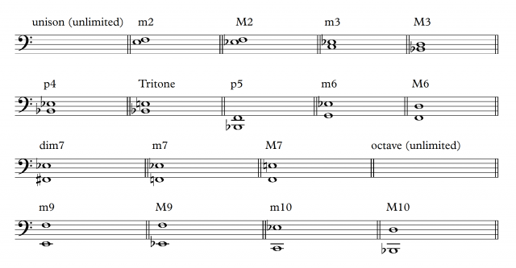</a></p>
<p>If you create a voicing, checking each interval for violating the low interval limits is actually not needed most of the time. Often, it is sufficient to check the lowest interval for violations.</p>
<p>As an example, the following voicing doesn&#8217;t violate any low interval limits (it is actually the 4 Trombones+Tuba voicing from the entrance of the Island Fanfare from JURASSIC Park as heard here:</p>
<p><iframe src="//www.youtube.com/embed/Xqo3ZApCJt0#t=81s" frameborder="0" width="420" height="315"></iframe><br />
<a href="../../../?attachment_id=1752" rel="attachment wp-att-1752"></a><br />
<iframe src="//w.soundcloud.com/player/?url=http%3A%2F%2Fapi.soundcloud.com%2Ftracks%2F59745968%3Fsecret_token%3Ds-8KOWO&amp;show_artwork=true&amp;secret_url=true" frameborder="no" scrolling="no" width="100%" height="166"></iframe><br />
<br />
However, this voicing does violate the LIL.</p>
<p><a href="../../../?attachment_id=1753" rel="attachment wp-att-1753">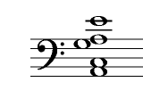</a><br />
<iframe src="//w.soundcloud.com/player/?url=http%3A%2F%2Fapi.soundcloud.com%2Ftracks%2F59745969%3Fsecret_token%3Ds-D1g8j&amp;show_artwork=true&amp;secret_url=true" frameborder="no" scrolling="no" width="100%" height="166"></iframe></p>
<p>The minor third between a and c is too low. If you check these voicings on the piano, you will hear how the second voicing has a much more instable and muddy sound even though its root note is more than an octave higher than the “Jurassic Park voicing”, which has way more sonority and resonance.</p>
<p>When you check your voicings for LILs, take every voice into account if it is spread over several instruments or groups.</p>
<p>The important exception here is the case when the lowest note of your voicing is not the root note. In this cases, you have to pretend that the root is present in the voicing as lowest voice and check the low interval limits with it in mind. For example this Am7 voicing looks just fine at first sight:</p>
<p><a href="../../../?attachment_id=1754" rel="attachment wp-att-1754">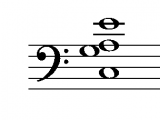</a><br />
<iframe src="//w.soundcloud.com/player/?url=http%3A%2F%2Fapi.soundcloud.com%2Ftracks%2F59745970%3Fsecret_token%3Ds-eaA3j&amp;show_artwork=true&amp;secret_url=true" frameborder="no" scrolling="no" width="100%" height="166"></iframe></p>
<p>However, due to the fact that the lowest note is the third of the chord and not the root, we need to presume the presence of the root note to check for LILs:</p>
<p><a href="../../../?attachment_id=1755" rel="attachment wp-att-1755"></a></p>
<p>In this case the lowest third is too low again, therefore the voicing should be revoiced in order to not sound muddy.</p>
<p>At first, it will be a little bit annoying to actually check every chord you write against the table from above, however with a little experience you will memorize these LILs and also automatically sense violations. The important thing here is to get a sensitive hearing for such problems.</p>
<p>However, be warned to think about easily avoiding violations of the LILs by generally distributing any harmonic content in a high register. While there are no “High Interval Limits”, generally harmonic content is best to be distributed more or less in the octave below middle c.<br />
<br />
This register has the advantage of being not too low for most intervals and having a high degree of resonance.</p>
<p>If you compare this Emaj7 voicing:</p>
<p><a href="../../../?attachment_id=1756" rel="attachment wp-att-1756"></a><br />
<iframe src="//w.soundcloud.com/player/?url=http%3A%2F%2Fapi.soundcloud.com%2Ftracks%2F59745971%3Fsecret_token%3Ds-KDSwV&amp;show_artwork=true&amp;secret_url=true" frameborder="no" scrolling="no" width="100%" height="166"></iframe></p>
<p>to the very same voicing two octaves higher:</p>
<p><a href="../../../?attachment_id=1757" rel="attachment wp-att-1757"></a><br />
<iframe src="//w.soundcloud.com/player/?url=http%3A%2F%2Fapi.soundcloud.com%2Ftracks%2F59745972%3Fsecret_token%3Ds-XJYYl&amp;show_artwork=true&amp;secret_url=true" frameborder="no" scrolling="no" width="100%" height="166"></iframe></p>
<p>you will hear a very clear difference in resonance. The effect also happens already at one octave difference, however two octaves make it even clearer. The lower voicing has a strong resonance and can harmonically support any melody on top of it. The higher one has a certain harmonic quality as well, however imagining a bass note and a melody on top of it will very quickly make clear that it has not much harmonic supporting power. This becomes an even more important issue in orchestral writing. Many inexperienced orchestrators and composers distribute the harmonic content way too high in their writing leaving a huge “empty space” in the low register which will result in a unfocussed high register and a very empty overall sound.</p>
<p>Another very misleading factor regarding good voicings is the bad influence of hand limitations of piano players. In orchestral chord voicings, the general rule of thumb is to not exceed a distance more than an octave between the single voices of the chord (with exception of the lowest to the 2nd lowest voice which has no limit). Otherwise, the voicing tends to fall apart acoustically and sounds partially detached. The span of the hand however doesn&#8217;t allow to follow this general rule on the piano so we often see, play and compose voicings like this on the piano:</p>
<p><a href="../../../?attachment_id=1758" rel="attachment wp-att-1758"></a><br />
<iframe src="//w.soundcloud.com/player/?url=http%3A%2F%2Fapi.soundcloud.com%2Ftracks%2F59745973%3Fsecret_token%3Ds-lylqo&amp;show_artwork=true&amp;secret_url=true" frameborder="no" scrolling="no" width="100%" height="166"></iframe></p>
<p>While this is not avoidable in piano music, unfortunately many composers/orchestrators translate this voicing directly to their orchestral arrangements ignoring the 2 octave gap in the middle. The result will be a very strange sounding inhomogenous orchestral chord. In order to translate that properly to orchestra it needs the step of ignoring ones own fingers and fill up the gap for example like these 3 examples:</p>
<p><a href="../../../?attachment_id=1759" rel="attachment wp-att-1759"></a><a href="../../../?attachment_id=1760" rel="attachment wp-att-1760"><br />
<iframe src="//w.soundcloud.com/player/?url=http%3A%2F%2Fapi.soundcloud.com%2Ftracks%2F59745974%3Fsecret_token%3Ds-c1Vj6&amp;show_artwork=true&amp;secret_url=true" frameborder="no" scrolling="no" width="100%" height="166"></iframe></a></p>
<p><a href="../../../?attachment_id=1761" rel="attachment wp-att-1761"><br />
<iframe src="//w.soundcloud.com/player/?url=http%3A%2F%2Fapi.soundcloud.com%2Ftracks%2F59745975%3Fsecret_token%3Ds-iYv7c&amp;show_artwork=true&amp;secret_url=true" frameborder="no" scrolling="no" width="100%" height="166"></iframe></a></p>
<p><br />
<iframe src="//w.soundcloud.com/player/?url=http%3A%2F%2Fapi.soundcloud.com%2Ftracks%2F59745976%3Fsecret_token%3Ds-eGYlE&amp;show_artwork=true&amp;secret_url=true" frameborder="no" scrolling="no" width="100%" height="166"></iframe></p>
<p>None of the voicing violates the LILs or has voices further than an octave apart. However, every voicing has certain advantages and disadvantages.</p>
<p>Voicing 1 has a fairly open and transparent structure due to the quite large intervals involved. Note that the third of the chord is stated the first time in the octave below middle c. Especially the third of a chord has a strong influence on the resonance so the lower you put it without violating the LILs, the more resonance you will get. Also, note the fairly even distribution between chord tones. We have the root note stated 3 times and the third and fifth two times each. This voicing would sound very good as a string voicing, having a lot of beautiful resonance and an open structure to not sound overly dense.</p>
<p>Voicing 2 looks basically quite similar to Voicing 1, however has a few flaws compared to it. The above mentioned resonant third is stated the first time in the middle octave, losing its potential resonance. Also we have a quite unbalanced distribution of chord tones: 4 times the root, 3 times the fifth and only once the third. This voicing will feel quite unbalanced and you would need to orchestrate it very carefully in order to make it sound good. If I were to decide for one of the first two voicings I would definitely go for the first one.</p>
<p>Voicing 3 basically fills up the gap from the piano vocing with every available chord note in close position, resulting in a 12-voice chord. This voicing sounds very dense and thick which is not always the desired effect, however it would work nicely as a tutti chord with all instruments from the orchestra involved.</p>
<p>Orchestrating voicings specifically for instruments will be dealt in a later part of this series. Next time we will focus on open vs. close voicings and start working with more complex chord structures.</p>
]]></content:encoded>
			<wfw:commentRss>../../../2012/09/24/chord-voicings-part-2/feed/</wfw:commentRss>
		<slash:comments>3</slash:comments>
	<post-id xmlns="com-wordpress:feed-additions:1">1750</post-id>	</item>
		<item>
		<title>How to Create Tension with Climbing Scales</title>
		<link>../../../2012/07/23/how-to-create-tension-with-climbing-scales/</link>
		<comments>../../../2012/07/23/how-to-create-tension-with-climbing-scales/#comments</comments>
		<pubDate>Mon, 23 Jul 2012 13:00:42 +0000</pubDate>
		<dc:creator><![CDATA[Ryan Leach]]></dc:creator>
				<category><![CDATA[Composition]]></category>
		<category><![CDATA[Latest Resources]]></category>

		<guid isPermaLink="false">../../../?p=1595</guid>
		<description><![CDATA[An examination into the boring old scale, and how it can actually be exploited to create tension in your music.]]></description>
				<content:encoded><![CDATA[<p>[Photo by <a href="http://www.flickr.com/photos/bohman/" target="_blank">Linus Bohman</a>]</p>
<p>Among the many primary functions of film music, tension is near the top of the list. Wether it&#8217;s to generate feelings of suspense, anticipation, or even a false sense of danger, creating tension is a major part of our work as film composers.</p>
<p>In this article I&#8217;ll discuss one of the tools you can add to your bag of tricks for creating tension, the technique of stretching out a scale.</p>
<h2>Expectation</h2>
<p>Tension is aroused when there is a conflict between what we expect to happen and what actually happens. In music one of the easiest ways to do this is to set up an expectation, but then delay it&#8217;s resolution.</p>
<p>I&#8217;m reminded of the scene from Who Framed Roger Rabbit in which the villain is trying to get Roger Rabbit to come out of his hiding place. He knocks out the rhythm to the first part of &#8220;Shave and a Haircut&#8221;:</p>
<p><iframe src="//www.youtube.com/embed/jIBK7UxRTqE#t=5m49s" frameborder="0" width="420" height="315"></iframe></p>
<p>&#8220;No toon can resist the old Shave and a Haircut trick!&#8221;</p>
<p>Roger Rabbit can&#8217;t help himself, the tension is just UNBEARABLE! He has to finish the phrase, it&#8217;s driving him insane not to, and thus he comes out of hiding and is caught by the throat!</p>
<p>There are many ways to establish expectations in your listener&#8217;s ear, including using predictable melodies, setting up common cadences, creating patterns in the music, and using scales. Let&#8217;s now take a look at how we can use scales to set up expectations and delay resolution.</p>
<h2>Scales</h2>
<p>Many people find scales boring because they are so predictable. But that&#8217;s actually what is so great about them! We want to take advantage of that very predictability. Being a backbone of most Western music, even non-musicians have expectations about how scales resolve and what they generally sound like.</p>
<p>We already looked at how leaving off an expected resolution can drive you nuts with the Shave and a Haircut example. Consider this even simpler example:</p>
<p><iframe width="100%" height="166" scrolling="no" frameborder="no" src="//w.soundcloud.com/player/?url=http%3A%2F%2Fapi.soundcloud.com%2Ftracks%2F50117271%3Fsecret_token%3Ds-swUX4&#038;show_artwork=true&#038;secret_url=true"></iframe></p>
<p><a href="../../../?attachment_id=1596" rel="attachment wp-att-1596">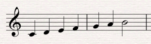</a></p>
<p>If you&#8217;re like most musicians, the lack of resolution to the tonic will really get under your skin!</p>
<p>A scale climbing and not quite reaching home is great for demonstration, but it feels a bit rudimentary in a musical context. A more musical approach, and a very common one, is to stretch out the scale by repeating notes, rising a little bit and then backing back down and starting over. I&#8217;ll use a half-diminished scale here for some added darkness:</p>
<p><iframe width="100%" height="166" scrolling="no" frameborder="no" src="//w.soundcloud.com/player/?url=http%3A%2F%2Fapi.soundcloud.com%2Ftracks%2F50117294%3Fsecret_token%3Ds-BL88c&#038;show_artwork=true&#038;secret_url=true"></iframe></p>
<p><a href="../../../?attachment_id=1597" rel="attachment wp-att-1597">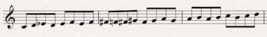</a></p>
<p>The tension comes from two different places here. First of all, we expect the scale to just keep climbing in an upward direction, and so when it jumps back down we are a bit surprised.</p>
<p>Secondly, we are never really sure when it&#8217;s going to stop, and so tension is created by the uncertainty of just how high this scale is going to go. We keep expecting it to resolve but it never does.</p>
<h2>Examples from the Repertoire</h2>
<h3>Barber&#8217;s Adagio for Strings</h3>
<p>An example very similar to the one we just looked at can be found in the opening to Samuel Barber&#8217;s Adagio for Strings.</p>
<p><iframe src="//www.youtube.com/embed/RRMz8fKkG2g" frameborder="0" width="420" height="315"></iframe></p>
<p><a href="../../../?attachment_id=1598" rel="attachment wp-att-1598">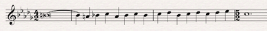</a></p>
<p>Essentially all he is doing is climbing from A natural up to Eb, but by stretching those 5 notes into 15 he creates an incredible feeling of tension.</p>
<p><a href="../../../?attachment_id=1599" rel="attachment wp-att-1599">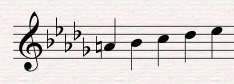</a></p>
<p>He stretches the scale out in two ways. First, he has a pattern of going up a third and down a second:</p>
<p><a href="../../../?attachment_id=1600" rel="attachment wp-att-1600"></a></p>
<p>Then he stretches it out further by repeating each climb up a third before moving to the descent of a second:</p>
<p><a href="../../../?attachment_id=1601" rel="attachment wp-att-1601">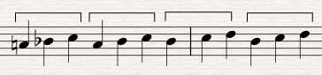</a></p>
<p>Even after the Eb it feels like the pattern could just keep on climbing forever, but he gives us a break and rests on the C. A perfect reminder that all tension and no resolution would soon become tiresome to listen to!</p>
<h3>Little Tom Thumb</h3>
<p>The second movement of Ravel&#8217;s Mother Goose Suite, Little Tom Thumb, starts off with a similar technique. In this case, however, Ravel manipulates the tension in two different ways.</p>
<p><iframe src="//www.youtube.com/embed/-NkKAD-zu64" frameborder="0" width="420" height="315"></iframe></p>
<p><a href="../../../?attachment_id=1602" rel="attachment wp-att-1602">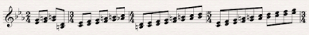</a></p>
<p>The first noticeable difference from the Barber is that he uses longer stretches of the scale. Instead of climbing only three notes at a time, Ravel climbs as much as 10 notes in his longest segment.</p>
<p>An even more significant difference is that every stretch of the scale is longer than the one before it. This is an incredibly useful technique for creating tension, as the climbing scale just keeps getting longer and longer and longer, stretching out the climb more and more and never quite reaching a feeling of resolution.</p>
<p>Only after the melody comes in and finally jumps down a third onto a quarter note at bar 5 do we actually feel a moment of resolved tension.</p>
<p>I am reminded of the opening motif from John Williams&#8217; score to Catch Me If You Can. The opening phrase backtracks and develops just a tiny bit further each time. Every little extra development teases us into expecting more and more.</p>
<p><iframe src="//www.youtube.com/embed/gaLDyrun_Cc" frameborder="0" width="560" height="315"></iframe></p>
<h3>Fawkes the Phoenix</h3>
<p>Speaking of John Williams, our last example comes from his cue Fawkes the Phoenix from the Harry Potter and the Chamber of Secrets score. It&#8217;s a great example of how to use the climbing scale as a modulating sequence.</p>
<p>The example comes from about 1:22 into the track, in which he uses a climbing scale pattern to take us from A major to C major.</p>
<p><iframe width="420" height="315" src="//www.youtube.com/embed/WPjBnBdq5Os" frameborder="0" allowfullscreen></iframe></p>
<p>The basic climbing scale he uses is this:</p>
<p><iframe width="100%" height="166" scrolling="no" frameborder="no" src="//w.soundcloud.com/player/?url=http%3A%2F%2Fapi.soundcloud.com%2Ftracks%2F50117330%3Fsecret_token%3Ds-RIFe3&#038;show_artwork=true&#038;secret_url=true"></iframe></p>
<p><a href="../../../?attachment_id=1603" rel="attachment wp-att-1603">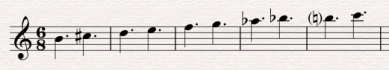</a></p>
<p>He uses a similar pattern to the &#8220;up a third, down a second&#8221; pattern that we saw in the Adagio for Strings. It&#8217;s doubled in length to be &#8220;up a third, down a second, up a third, down a third&#8221;:</p>
<p><iframe width="100%" height="166" scrolling="no" frameborder="no" src="//w.soundcloud.com/player/?url=http%3A%2F%2Fapi.soundcloud.com%2Ftracks%2F50117356%3Fsecret_token%3Ds-gyqFs&#038;show_artwork=true&#038;secret_url=true"></iframe></p>
<p><a href="../../../?attachment_id=1604" rel="attachment wp-att-1604">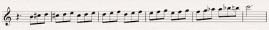</a></p>
<p>Notice how the energy increases towards the end when he stops repeating the patterns and moves into a faster climb of the scale.</p>
<p>Finally he adds excitement to the pattern in the violins by embellishing with neighbor and passing tones:</p>
<p><iframe width="100%" height="166" scrolling="no" frameborder="no" src="//w.soundcloud.com/player/?url=http%3A%2F%2Fapi.soundcloud.com%2Ftracks%2F50117380%3Fsecret_token%3Ds-js5Ez&#038;show_artwork=true&#038;secret_url=true"></iframe></p>
<p><a href="../../../?attachment_id=1605" rel="attachment wp-att-1605">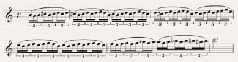</a></p>
<p>The result is an exhilarating climb that feels incredibly tense until the resolution on C, which in contrast to the build feels quite refreshing!</p>
<h2>Conclusion</h2>
<p>You may have terrible memories of being forced by your music teacher to practice your scales, and many of you may have resented the seemingly lack of point in the exercise.</p>
<p>But with some simple manipulations, we&#8217;ve just seen that the boring old scale can actually provide us with amazing potential for creating, expanding and developing tension.</p>
]]></content:encoded>
			<wfw:commentRss>../../../2012/07/23/how-to-create-tension-with-climbing-scales/feed/</wfw:commentRss>
		<slash:comments>12</slash:comments>
	<post-id xmlns="com-wordpress:feed-additions:1">1595</post-id>	</item>
		<item>
		<title>The Running Line in Orchestral Writing</title>
		<link>../../../2012/07/02/running-line-orchestral-writing/</link>
		<comments>../../../2012/07/02/running-line-orchestral-writing/#comments</comments>
		<pubDate>Mon, 02 Jul 2012 13:00:00 +0000</pubDate>
		<dc:creator><![CDATA[Alain Mayrand]]></dc:creator>
				<category><![CDATA[Composition]]></category>
		<category><![CDATA[Latest Resources]]></category>

		<guid isPermaLink="false">../../../?p=1568</guid>
		<description><![CDATA[Composer Alain Mayrand teaches us how to add motion and activity to our orchestral writing by using running lines.]]></description>
				<content:encoded><![CDATA[<p>A running line as an accompaniment is a traditional device in orchestral writing that is very well suited for today&#8217;s film score writing.</p>
<p>As an example we will look at one of my favourite examples of running-line accompaniment from Smetana’s beautifully expressive “The Moldau”. Here it is, presented here in a simplified two-part version.</p>
<p><em><strong>Ex.1</strong></em></p>
<p><a href="../../../?attachment_id=1633" rel="attachment wp-att-1633"></a></p>
<p><iframe width="100%" height="166" scrolling="no" frameborder="no" src="//w.soundcloud.com/player/?url=http%3A%2F%2Fapi.soundcloud.com%2Ftracks%2F51365162%3Fsecret_token%3Ds-lgv8v&#038;show_artwork=true&#038;secret_url=true"></iframe></p>
<p>First off, what is the reason for using this kind of writing? As a composer, arranger and orchestrator, you should always use the tools at your disposal with a specific end in mind, so this is an important question to consider.</p>
<p>It creates a feeling of activity that may not be present in the melody. For this piece it represents the running waters of the river Moldau in what is now the Czech Republic.</p>
<p>Here the dynamic is quite soft and played in the strings, so the sound is perfect to represent the water. But this is a flexible technique and not limited to this usage. You can play it loud for supporting action or heroic passages and any other place that you need a sense of movement. It does not need to be under the melody but can also be above to create a shimmering effect. Don&#8217;t limit yourself to the present musical context.</p>
<p><strong>How to approach writing something like this quickly.</strong></p>
<p>After all, when writing for film you must write quickly, that&#8217;s a given. So here my main tips for this.</p>
<p>Important thing to note is that the running line should be written <em>after</em> the melody so it supports it contrapuntally, rather than the other way around.</p>
<p>Know what harmony your running line should delineate. You running line will work 100% of the time if it clearly articulates your harmony on the strong beats.</p>
<p>Second, set up an outline for your running counterpoint just at the important rhythmic and metric points. Here&#8217;s what that would look like (you can jot it down as you see here, or have these notes as markers in your mind as you work.)</p>
<p><em><strong>Ex. 2</strong></em></p>
<p><a href="../../../?attachment_id=1634" rel="attachment wp-att-1634"></a></p>
<p><iframe width="100%" height="166" scrolling="no" frameborder="no" src="//w.soundcloud.com/player/?url=http%3A%2F%2Fapi.soundcloud.com%2Ftracks%2F51365203%3Fsecret_token%3Ds-NWdvE&#038;show_artwork=true&#038;secret_url=true"></iframe></p>
<p>The dotted eighths in the bass “guide tones” for the running line. With a basic knowledge of counterpoint this can be done very quickly.</p>
<p>All the notes in between the guide tones can then be decorated with our running line. The dissonances that happen on metrically weaker positions are not that important, especially at faster tempi, but you should still be aware of your counterpoint, so keep an eye on it.</p>
<p>Here is the filled out line based on the guide tones above.</p>
<p><em><strong>Ex. 3</strong></em></p>
<p><a href="../../../?attachment_id=1635" rel="attachment wp-att-1635"></a></p>
<p><iframe width="100%" height="166" scrolling="no" frameborder="no" src="//w.soundcloud.com/player/?url=http%3A%2F%2Fapi.soundcloud.com%2Ftracks%2F51365276%3Fsecret_token%3Ds-uzj2B&#038;show_artwork=true&#038;secret_url=true"></iframe></p>
<p>Once you have your running line pattern, don’t go crazy and change it for every measure afterwards. Keep it going, just changing it to follow the harmony. Developing and repeating the material you already have is better composition and will take less time as well, so you win on both counts. Go back to the first example to see how the running line follows the harmony.</p>
<p>Once you have your two main elements laid out: your melody and the running line, you can add some extra materials to the arrangement/orchestration.</p>
<ul>
<li>Doublings in octaves, 3rds, 6hts and chords.</li>
<li>Held chords, a.k.a. “pads”</li>
<li>Bass notes</li>
<li>And of course assigning your instruments and breaking it up to get the final result.</li>
</ul>
<p><em><strong>Ex. 4</strong></em></p>
<p><a href="../../../?attachment_id=1637" rel="attachment wp-att-1637"></a></p>
<p><iframe width="100%" height="166" scrolling="no" frameborder="no" src="//w.soundcloud.com/player/?url=http%3A%2F%2Fapi.soundcloud.com%2Ftracks%2F51365297%3Fsecret_token%3Ds-5LcaP&#038;show_artwork=true&#038;secret_url=true"></iframe></p>
<p><em>This is also a simplified version by the way, for the sake of clarity and brevity!</em></p>
<p>And there you have it, a few simple steps to your own running lines. Apply this up in the high registers above your melody or down below, fast or slow, hard or soft, its uses are limited only by your creativity.</p>
<p>We would love to hear how you develop this concept, post your results here in the comment section below.</p>
<p>(Special thanks to Stellita Loukas for taking the time to do the mock-ups of the examples.)</p>
<p>[Photo by <a href="http://www.flickr.com/photos/esparta/" target="_blank">Esparta Palma</a>]</p>
]]></content:encoded>
			<wfw:commentRss>../../../2012/07/02/running-line-orchestral-writing/feed/</wfw:commentRss>
		<slash:comments>10</slash:comments>
	<post-id xmlns="com-wordpress:feed-additions:1">1568</post-id>	</item>
		<item>
		<title>How to Use Chord Voicings Effectively &#8211; Part 1</title>
		<link>../../../2012/06/18/chord-voicings-part-1/</link>
		<comments>../../../2012/06/18/chord-voicings-part-1/#comments</comments>
		<pubDate>Mon, 18 Jun 2012 13:00:00 +0000</pubDate>
		<dc:creator><![CDATA[Robin Hoffmann]]></dc:creator>
				<category><![CDATA[Composition]]></category>
		<category><![CDATA[Latest Resources]]></category>

		<guid isPermaLink="false">../../../?p=1525</guid>
		<description><![CDATA[Robin Hoffman kicks off a new series on Chord Voicings by discussing how we hear consonance and dissonance.]]></description>
				<content:encoded><![CDATA[<div>
<p>There are nearly endless possibilities of how to make the same chord sound, and while some of them sound quite disastrous others have a stellar resonance and are reason for scrolling back in an audio file to listen once again. There seem to be endless parameters that define a chord sound, and often people end up in working their way to their desired sound by trial and error.</p>
<p>This tutorial series tries to shed some light on the reasons that make a difference in a chord voicing and why.</p>
<p>But first of all: what is the difference between a chord and a voicing? While the term chord only defines which notes sound together, a voicing specifies exactly HOW they sound together. A voicing is the specific structure of how the notes of the chord are spread out over the register.</p>
<p>To understand how voicings work it is necessary to have a basic knowledge of acoustics. Due to the fact that there are several frequencies sounding together at the same time, we need to understand how they behave together.</p>
<p>A major principle that defines not only voicings but big parts of the music we hear is consonance and dissonance.</p>
<p>Basically, if we hear two notes together they have a specific oscillation ratio. For example if note <em>a</em> swings exactly twice as often as note <em>b</em>, note <em>a</em> is exactly one octave higher than note <em>b</em>. The ratio in this case is 2:1. The simpler this ratio, the more consonant the resulting sound that we&#8217;re hearing when both notes are playing together. For our perception that means that they sound relaxed and stable without (much) tendency to resolve.</p>
<p>Below you see the ratio of a perfect fifth. While the first frequency does two complete oscillations, the second one does three in the same time which means a ratio of 2:3. <em>(Actually, the perfect fifth and most other intervals of our tempered tuning have slight differences to that but for the matter of simplicity, we&#8217;ll stick to their “natural” ratios.)</em></p>
<p><a href="../../../?attachment_id=1581" rel="attachment wp-att-1581"></a></p>
<p>The more complex that ratio gets, the more dissonant it sounds to our ear. Generally we feel the urge of the notes wanting to resolve to a more consonant sound.</p>
<p>Understanding this basic principle helps a lot to actually understand how voicings work. Of course, the more notes your chord consist of the more complex the relation between all the notes becomes, and eventually it will become too complex to actually consider all interval relations. This is the reason why many people go to the mode of &#8220;I&#8217;ll just try what sounds best.&#8221;</p>
</div>
<div>
<p>But the concept of consonance and dissonance is part of every voicing, and having this under control helps tremendously to make good sounding voicings.</p>
<p>The following is a very simple example of how big the influence of that principle on any chord voicing is:</p>
<p>A major seventh has a very strong dissonance (the ratio is 15:8) which can clearly be heard by the impression to our ear that it has a strong tendency to resolve outwards to the octave.</p>
<p><a href="../../../?attachment_id=1582" rel="attachment wp-att-1582"></a></p>
<p><iframe src="//w.soundcloud.com/player/?url=http%3A%2F%2Fapi.soundcloud.com%2Ftracks%2F49386819%3Fsecret_token%3Ds-2LvDx&amp;show_artwork=true&amp;secret_url=true" frameborder="no" scrolling="no" width="100%" height="166"></iframe></p>
<p>If we now fill up this interval with two more notes to end up with a maj7 chord, we notice that the strong dissonance of the major seventh seems to be quite a bit reduced.</p>
<p><a href="../../../?attachment_id=1583" rel="attachment wp-att-1583"></a></p>
<p><iframe src="//w.soundcloud.com/player/?url=http%3A%2F%2Fapi.soundcloud.com%2Ftracks%2F49386775%3Fsecret_token%3Ds-gYiPS&amp;show_artwork=true&amp;secret_url=true" frameborder="no" scrolling="no" width="100%" height="166"></iframe></p>
<p>In fact, in standard jazz theory, this chord actually can sustain as a tonic chord and be treated as a chord that has no tendency to resolve.</p>
<p>But how is it possible that the formerly very strong dissonance of the major seventh got subjectively reduced? The explanation for this can be found in the inner structure of the chord. We learned above, that a perfect fifth is a very consonant interval creating a lot of acoustic stability. If we now have a more thorough look at our maj7 chord we can actually find two perfect fifths in this voicing.</p>
<p><a href="../../../?attachment_id=1584" rel="attachment wp-att-1584"></a></p>
<p>The influence of these two perfect fifths stabilize the whole chord structure in a way that the dissonance of the major seventh gets pushed more to the background of our perception. Also, the thirds that we can see in this chord voicing have quite a strong consonance and therefore add to the more stable sounding structure.</p>
<p>Let&#8217;s just have a look at a different voicing of this very same maj7 chord to get an understanding of how different voicings can alter the sound of the very same chord:</p>
<p><a href="../../../?attachment_id=1585" rel="attachment wp-att-1585"></a></p>
<p><iframe src="//w.soundcloud.com/player/?url=http%3A%2F%2Fapi.soundcloud.com%2Ftracks%2F49386725%3Fsecret_token%3Ds-ELt57&amp;show_artwork=true&amp;secret_url=true" frameborder="no" scrolling="no" width="100%" height="166"></iframe></p>
<p>If we now look at the interval structure, we get quite a few differences:</p>
</div>
<div>
<div>
<ul>
<li>We still have the basic triad of C, E and G so basically one perfect fifth and two thirds remain the same.</li>
<li>However, we lose the major 7th and have a minor 2nd now, both intervals have more or less the same degree of dissonance (as they are complimentary intervals) with a tendency of the major 7th sounding more dissonant as the two “rubbing” frequencies are more exposed due to the distance between them while on the major 2nd they feel more like a frequency cluster being more tricky to hear through by our ear.</li>
<li>We&#8217;re also losing one of the perfect fifths from before and now have a perfect 4th instead. The perfect fourth has a slightly stronger dissonance (ratio of 3:4) compared to the perfect fifth (2:3) but is still considered as a consonant interval.</li>
<li>The framing interval now becomes a minor 6th which has a comparable dissonance to a third</li>
</ul>
<p><a href="../../../?attachment_id=1586" rel="attachment wp-att-1586"></a></p>
<p>Just by inverting the chord, we got a slightly different sounding voicing regarding the dissonance.</p>
<p>The perfect fourth has a slightly more dissonant sound than the perfect fifth that we had in the root position. The minor second is almost as dissonant as the major seventh it used to be so the overall impression might be a slightly more dissonant and less stable sound than the root position.</p>
<p>Of course the differences here can be argued, as they are not really significant and are probably also down to taste and listening experience. But the more complex the chords we work with get, the more drastic differences can be found between different chord voicings.</p>
<p>The next part of this series will deal with more complex chords, discussing the influence of so called tension notes on different types of chords.</p>
</div>
<div>[Photo by Hobvias Sudoneighm aka <strong id="yui_3_5_0_3_1339455106624_1011"><a id="yui_3_5_0_3_1339455106624_1016" href="http://www.flickr.com/photos/striatic/">striatic</a>]</strong></div>
</div>
]]></content:encoded>
			<wfw:commentRss>../../../2012/06/18/chord-voicings-part-1/feed/</wfw:commentRss>
		<slash:comments>5</slash:comments>
	<post-id xmlns="com-wordpress:feed-additions:1">1525</post-id>	</item>
		<item>
		<title>Value Studies: A Painter&#8217;s Technique for Composers</title>
		<link>../../../2012/06/04/value-studies-a-painters-technique-for-composers/</link>
		<comments>../../../2012/06/04/value-studies-a-painters-technique-for-composers/#comments</comments>
		<pubDate>Mon, 04 Jun 2012 13:00:00 +0000</pubDate>
		<dc:creator><![CDATA[Ryan Leach]]></dc:creator>
				<category><![CDATA[Composition]]></category>
		<category><![CDATA[Latest Resources]]></category>

		<guid isPermaLink="false">../../../?p=1557</guid>
		<description><![CDATA[How the Value Study, a useful technique from the world of painting, can be applied to the art of Composition.]]></description>
				<content:encoded><![CDATA[<p>[Thank you to <a href="http://davidmkessler.com" target="_blank">David Kessler</a> for permission to use the fantastic images and the initial inspiration.]</p>
<p>Visual artists have it great. The number of books, techniques, methods and overall resources for developing your craft as a painter or illustrator are astounding. The available resources for learning how to compose music feel almost non-existent in comparison. (I&#8217;m not talking about the individual skills of harmony, orchestration, etc. I am referring to a comprehensive method for actually putting it all together.)</p>
<p>But although the methods for painting and composing are not perfectly relatable, we can borrow many of the lessons from the visual arts and adapt them to writing music.</p>
<p>The &#8220;value study&#8221; is a technique I learned about recently and I immediately wondered about how the same principle could be applied to our craft.</p>
<h2>What is a Value Study?</h2>
<p>A value study is a middle step between a sketch and a finished work. Artist David Kessler has written a <a href="http://davidmkessler.com/blog/23789/value-studies-the-artists-essential-tool" target="_blank">fantastic article</a> on the subject and I strongly encourage you to read it to get a thorough understanding of the concept.</p>
<p>A &#8220;value&#8221; is a degree of shading, with different values referring to different degrees of light and dark. The idea is to take color out of the equation and focus on the more fundamental aspects of contrast. Before getting all fancy with colors and textures, you work out the focus points of the composition and check for a good balance between the different shades.</p>
<p>I&#8217;m a big believer in sketches and working out fundamental elements before moving on to details, and the value study is a great way to consciously work out your basic structural points before getting bogged down with surface level details.</p>
<h2>What does this have to do with music?</h2>
<p>The main principle to borrow from the artist&#8217;s value study is not literally &#8220;light and dark&#8221;, but the absence of color. In our case, we can consider orchestration and timbre to be the equivalent of a painter&#8217;s color palette.</p>
<p>When you strip away the color of instrumentation, you are left with your bare elements. Melody, harmony, form. Variation, unity. Do they hold up? If your big orchestral piece was played on solo piano, or even by a synth with a sine wave patch, would it still be compelling? When you take away that repetitive ostinato pattern in the background, is it still interesting?</p>
<h2>Dynamics as the Composer&#8217;s Value</h2>
<p>A near cousin to light and dark in music is loud and quiet; our version of planning the shading is planning dynamics.</p>
<p>In his example, David Kessler used four values of light and dark:</p>
<ol>
<li>White (or light)</li>
<li>Light midvalue</li>
<li>Dark midvalue</li>
<li>Dark</li>
</ol>
<p>For our purposes, I suggest we use five dynamic layers:</p>
<ol>
<li>p</li>
<li>mp</li>
<li>mf</li>
<li>f</li>
<li>ff</li>
</ol>
<p>We can take a slightly different route from painting. Rather than using white as the base and darkening in from there, I think it makes more sense to start with mf, a middle dynamic, as our starting point and then going up or down from there.</p>
<h2>A Composer&#8217;s Value Study &#8211; Step By Step</h2>
<p>Here is a proposed step by step approach you can use to apply the concept of the value study to composing music. Bear in mind that every composition is unique, and obviously the more complex the piece the less basic this process might be. But take this general idea as a starting off point for approaching your own work.</p>
<ol>
<li>Take your bare-bones sketch of the composition, perhaps just melody with chord changes or a basic accompaniment, with the entire piece at mf.</li>
<li>Decide on your next level values, meaning decide where you want things to be quieter and where you want them to be louder. Place f and mp.</li>
<li>Decide on your extreme values, ff and p. Keep in mind that your extreme levels will shine brighter the more sparingly you use them. So perhaps find just one special moment for each extreme.</li>
<li>Finally, add nuance and subtlety . Crescendos, decrescendos, sfz, etc.</li>
<li>Of course not every piece requires every shade of dynamics, and some pieces may even be better suited for no dynamic changes at all.</li>
</ol>
<h2>Conclusion</h2>
<p>To quote David Kessler&#8217;s conclusion, &#8220;<em>Remember this is not a finished painting, only a tool. Don&#8217;t spend time &#8220;staying inside the lines&#8221;. Concentrate on distinguishing the shapes and developing contrast.</em>&#8221;</p>
<p>The same principle could be applied to texture quite easily, with varying degrees of density. Perhaps a piece could be assessed by the number of voices present at any given time.</p>
<p>However you apply the idea, taking time to zoom out and look at the big picture is always a wise move.</p>
<p>What do you think? Have you ever noticed similarities between painting and writing music? Or do you think they are too distantly related to share meaningful lessons? Share your thoughts in the comments!</p>
]]></content:encoded>
			<wfw:commentRss>../../../2012/06/04/value-studies-a-painters-technique-for-composers/feed/</wfw:commentRss>
		<slash:comments>8</slash:comments>
	<post-id xmlns="com-wordpress:feed-additions:1">1557</post-id>	</item>
		<item>
		<title>Big and Small, Part 1: How to Make Your Music Small</title>
		<link>../../../2012/05/21/big-and-small-part-1-how-to-make-your-music-small/</link>
		<comments>../../../2012/05/21/big-and-small-part-1-how-to-make-your-music-small/#comments</comments>
		<pubDate>Mon, 21 May 2012 13:00:05 +0000</pubDate>
		<dc:creator><![CDATA[Jeff Tolbert]]></dc:creator>
				<category><![CDATA[Composition]]></category>
		<category><![CDATA[Latest Resources]]></category>

		<guid isPermaLink="false">../../../?p=1549</guid>
		<description><![CDATA[In an industry where bigger is better, Jeff Tolbert discusses ways that you can take your music in the opposite direction and sound really small.]]></description>
				<content:encoded><![CDATA[<p>When it comes to film scoring, size definitely does matter. The trend in big-budget Hollywood films has been toward a bigger and bigger sound—enormous string and brass sections and 20-person percussion ensembles, all backed by massive beds of synths and samples. But often, especially with indie projects, what&#8217;s required is a much smaller, more intimate sound. Even a modestly sized orchestra might be far too large for a quiet drama about a family, a couple or a child.</p>
<p>It&#8217;s important for a film composer to know how to match what&#8217;s happening onscreen not just musically, but also in terms of size, feel and scope. Scoring <em>The Avengers</em> with just acoustic guitar and flute would clearly be wrong, just as using the orchestra from <em>Pirates of the Carribean</em> to score Juno would have also been a mistake. In this set of posts I&#8217;ll explore various ways to get your cues to sound really huge or really tiny. I&#8217;ll start this week with making things small.</p>
<p>&nbsp;</p>
<h2>Contrast</h2>
<p>One of the easiest ways to make something seem small is to juxtapose it with something huge. I&#8217;ll discuss bigness in the next installment, but for now being armed with this knowledge may help you build contrasting sections in your piece. Place a solo instrument or a small ensemble side-by-side with a full tutti section to maximize the impact of both. Contrast a delicate acoustic guitar solo with a maxed-out, amps-at-11 heavy metal jam to give both more impact.</p>
<p>&nbsp;</p>
<h2>Limitations</h2>
<p>If the characteristics of big are more, louder, and heavier, it would seem obvious that less, softer, and lighter are good ways to keep things small. Limiting yourself is one easy way to keep a composition compact. Let&#8217;s look at some of the ways to do this:</p>
<h4><em>Instrumentation</em></h4>
<p>Restricting the size of your ensemble is a great way to shrink a piece. Instead of an entire orchestra, use a chamber ensemble or a string quartet. One important thing to remember is that the strings make up the bulk of an orchestra and they contribute more than any other element to the feeling of size one gets from hearing an full orchestral recording. When smallness is required in the midst of a larger piece, limit yourself to just the first chairs or a small divisi group from each string section. This will create a lightness that you can&#8217;t get from a full orchestra. Much like reverb, which gives our brains subtle cues about the location of a sound, small string sections sound smaller than large ones, even to untrained ears.</p>
<p>If you need something to be really small, try using just a solo instrument. Solo piano or guitar can be quite versatile because they can play both melody and accompaniment and yet still sound like one instrument playing alone. For an even tinier effect, using something like flute or violin that can only play a melody will have a very compact, lonely sound. This can be especially striking when surrounded by more fully-orchestrated sections that really cause the solo to stand out.</p>
<p>Another element to consider is doubling. While it may be useful in some contexts it will by its nature increase the number of players and undermine your attempts to make your piece seem compact. A lone oboe playing the melody will naturally give a smaller impression than the same melody doubled on flute.</p>
<h4><em>Range</em></h4>
<p>Limiting the vertical range of a composition is another way to shrink its size. Using only one or two octaves for both the melody and accompaniment can make a piece seem compact and contained. Conversely, music that spans all the octaves of the keyboard will sound immense. Be especially wary of doubling the melody or the bassline at the octave. Not only are you expanding the number of players, but you&#8217;re simultaneously increasing the vertical range of the piece. Needless to say doublings can be beautiful effects, but if your primary goal is to create something small and intimate you may be working at cross-purposes.</p>
<p>Keep in mind that that in general, the bigger things are the heavier they are. This generally means more bass. Audition a few drum samples in Stormdrum or Evolve Mutations if you have any doubt. Their massive-sounding drums are absolutely loaded with bass frequencies. Small things, on the other hand, are generally lightweight and wouldn&#8217;t generate much in the way of bass frequencies. Steer clear of the bottom two or three octaves of the keyboard, and consider rolling off any frequencies below around 150 Hz just to make sure no stray rumbles are sneaking through. Small things don&#8217;t necessarily have to reside at the very top of an instrument&#8217;s range, but eliminating as much bass as possible will help a cue to sound truly tiny.</p>
<h4><em>Volume</em></h4>
<p>Another factor to consider is volume. Small things are often quieter than big things, and this effect is easy to accomplish musically. Solo instruments and small ensembles are naturally quieter that full orchestral tuttis, so some of the volume issues will be accomplished for you by shrinking the number of players. In fact, this effect was common during the Classical era. Mozart, Haydn and their comrades often created crescendos and diminuendos by expanding and contracting the number of players rather than notating dynamics. Of course you can also enhance this effect using quieter dynamic levels or reducing the volume during mixing.</p>
<p>&nbsp;</p>
<h2>Ambience</h2>
<p>Be sure to consider the location of your recording, whether it&#8217;s real or artificial. Going back to the Stormdrum example, the other notable property of many of those drum samples is the enormous amount of reverb. Stadiums, cathedrals and airplane hangers have a tendency to make sounds seem bigger since the setting is so obviously vast. Steer clear of gigantic spaces to make your piece sound more compact and intimate. Be sure to use this guideline with a grain of salt though. A piccolo alone in a giant concert hall has a lonely, forlorn quality that a close-miked piccolo doesn&#8217;t, and this may be just the effect your piece needs.</p>
<p>Very small ambiences (or no reverb at all) can make a soundsource feel so close that it&#8217;s literally in your face. Ambiences like this have a naked, intimate quality, as though the subject is sharing its innermost secrets with you. Again, this won&#8217;t necessarily make your cue sound &#8220;small,&#8221; but it may add an upfront, personal quality that the moment needs.</p>
<p>The long and the short of it is that your choice of reverb and ambience may not be as cut and dried as some of the other size-related issues, but it will most certainly have an impact. Context will likely be the deciding factor. Pay close attention to where you situate your sounds and make sure that the location supports the mood of what&#8217;s happening onscreen and in the music.</p>
<p>&nbsp;</p>
<h2>Other Effects</h2>
<p>Think about the subject you&#8217;re trying to represent musically. What traits does it have? If you&#8217;re writing the theme for a field mouse, describe it&#8217;s characteristics. Mice are lightweight and somewhat fragile. They make high-pitched squeaking sounds. Their movements are quick and darting, and they&#8217;re difficult to catch.</p>
<p>You can exploit this in your music in various ways. In the case of the field mouse, you might use a violin playing spiccato high in its range to imitate a mouse&#8217;s squeaks. Its quick movements could be represented by a fast melody containing leaps and frequent changes in direction. Another great example is using a flute to imitate a bird, as Prokofiev did so expertly in <em>Peter and the Wolf.</em></p>
<p>&nbsp;</p>
<h2>Conclusion</h2>
<p>As with all film scoring, the most important consideration is that the music match what&#8217;s happening onscreen. All of these ideas are meant merely as guidelines. Pick and choose, and use the ones that best suit the cue you&#8217;re working on. Analyze the subject matter and choose the techniques that fit the best. Toss the others out. Write great music that fits the film like a glove and you&#8217;ll be working for many years to come.</p>
<p>[Photo by <strong><a href="http://www.flickr.com/photos/bbruemmer/">Brian J. Bruemmer</a></strong>]</p>
]]></content:encoded>
			<wfw:commentRss>../../../2012/05/21/big-and-small-part-1-how-to-make-your-music-small/feed/</wfw:commentRss>
		<slash:comments>5</slash:comments>
	<post-id xmlns="com-wordpress:feed-additions:1">1549</post-id>	</item>
		<item>
		<title>An Approach to Finding Your Voice</title>
		<link>../../../2012/04/30/an-approach-to-finding-your-voice/</link>
		<comments>../../../2012/04/30/an-approach-to-finding-your-voice/#comments</comments>
		<pubDate>Mon, 30 Apr 2012 13:00:00 +0000</pubDate>
		<dc:creator><![CDATA[Alain Mayrand]]></dc:creator>
				<category><![CDATA[Composition]]></category>
		<category><![CDATA[Latest Resources]]></category>

		<guid isPermaLink="false">../../../?p=1520</guid>
		<description><![CDATA[Alain Mayrand discusses what it means to find your own voice as a composer, and offers up suggestions for how to develop yours further.]]></description>
				<content:encoded><![CDATA[<p>Is it important to have a recognizable voice as a film or TV composer? Many have plenty of work without one, quite content being musical chameleons. But to be unique is something many musicians aspire to and it can also be good for your career.</p>
<p>Here are some tips for finding your own voice.</p>
<h1></h1>
<h1>What You &#8220;Don’t like&#8221; is Just as Important as What You &#8220;Do like&#8221;</h1>
<p>Obviously, knowing what you like is important but it’s also quite easy for it to lead to imitation and lack of individuality.</p>
<p>Aim to understand what it is about a certain musical passage that you connect with. Don’t just play and learn the chords; that will help, but not enough. Dig a bit deeper and find out exactly what you like about it so you can extrapolate a concept out of it, a <em>modus operandi</em> for you own writing.</p>
<p>For example “I like this melody?</p>
<p>Why? Here are things you can look at</p>
<ul>
<li>The tonality or mode</li>
<li>The relationship of the melody to the chords</li>
<li>Use of expressive non-chord tones and how they are used</li>
<li>Expressive leaps in the motive</li>
<li>The structure of the tune</li>
<li>Etc&#8230;</li>
</ul>
<p>So you might come to the conclusion that that tune really connected with you because</p>
<ul>
<li>In was in the dorian mode</li>
<li>It emphasized <a href="http://en.wikipedia.org/wiki/Nonchord_tone#Appoggiatura" target="_blank">appoggiaturas</a> on strong beats</li>
<li>It had step-wise elements and larger leaps that were very expressive</li>
<li>It used only one motive throughout</li>
<li>It had a descending step-wise direction</li>
</ul>
<p>And from there you experiment creating music using those parameters specifically in order to build your own approach to them. And you should do this in a variety of contexts, not just the same mood and tone as the original, but in very different ways.</p>
<p>What you don’t like is just as important and instructive so don’t just dismiss that off hand. It is completely worthwhile to dig a bit deeper find out exactly what elements you don’t like about it. For example, it could be:</p>
<ul>
<li>Too repetitive</li>
<li>Not repetitive enough</li>
<li>Orchestration is not varied</li>
<li>Etc&#8230;</li>
</ul>
<p>From that you will see what you do like and then you can take that important next step “how would I do it differently?” This will most likely take you on completely new avenues and exploring new ideas you might not have thought of otherwise!</p>
<p>&nbsp;</p>
<h1>Assimilate, Don’t Imitate</h1>
<p>By understanding music you like and dislike and then exploring possibilities it opens up, you can assimilate the music rather than just imitate it. I refer to that as “Borging” because <em>I aim to assimilate the distinctiveness of a great musical idea into my own language to achieve perfection!</em> (Yep, I’m a nerd.) This is something that can happen to some over time, but here a few simple steps instead of leaving to chance and time.</p>
<p><strong>Step 1:</strong> Find a few measure of something you like very much, and learn to play it, analyse it in order to understand every aspect of it. (This could also be something you like only in part.)</p>
<p><strong>Step 2:</strong> See what else you can do with it, let your imagination run wild with it.</p>
<p><strong>Step 3:</strong> Once you run out of ideas try this systematic approach to perhaps go a little further using the musical parameters we all know and love.</p>
<ul>
<li><strong>Tempo:</strong> if it’s slow, speed it up and vice-versa.</li>
<li><strong>Dynamics:</strong> if it’s loud, play it soft and vice-versa.</li>
<li><strong>Register:</strong> if it’s high play it low&#8230;</li>
<li><strong>Tonality:</strong> if it’s minor play it minor or some other mode</li>
<li><strong>Timbre:</strong> change the orchestration</li>
<li><strong>Phrasing:</strong> legato becomes staccato, accents can change positions etc&#8230;</li>
<li><strong>Rhythms:</strong> have a blast</li>
<li><strong>Counterpoint:</strong> change the order of voices</li>
<li>Can you think of more?</li>
</ul>
<p>If you do it right you will have at least one idea that has promise and can grow into a voice or at the very least a phrase and even a piece. I call those “seeds.”</p>
<p>Make sure you plant those “seeds” and help them grow into a voice. Keep them well organized, I prefer paper in binders for this because it saves you a lot of time. Recording ideas and taking the time to listen to them takes too long! Revisit them often, play them often, do little improvisations with them, whatever you feel like doing to assimilate those ideas so you can use them at will. Having a voice means having your own vocabulary, and that’s what you are doing here.</p>
<p>[Photo by <a href="http://www.flickr.com/photos/stevendepolo/" target="_blank">Steven Depolo</a>]</p>
<p>&nbsp;</p>
]]></content:encoded>
			<wfw:commentRss>../../../2012/04/30/an-approach-to-finding-your-voice/feed/</wfw:commentRss>
		<slash:comments>7</slash:comments>
	<post-id xmlns="com-wordpress:feed-additions:1">1520</post-id>	</item>
		<item>
		<title>Orchestration 101—Part 1</title>
		<link>../../../2012/02/01/scu-orchestration-101-part-1/</link>
		<comments>../../../2012/02/01/scu-orchestration-101-part-1/#comments</comments>
		<pubDate>Thu, 02 Feb 2012 02:46:24 +0000</pubDate>
		<dc:creator><![CDATA[Stellita Loukas]]></dc:creator>
				<category><![CDATA[Composition]]></category>
		<category><![CDATA[Latest Resources]]></category>
		<category><![CDATA[Orchestration]]></category>

		<guid isPermaLink="false">../../../?p=1376</guid>
		<description><![CDATA[Mastering the art of orchestration takes a lifetime of study, research and application. But, we all have to start somewhere, right?]]></description>
				<content:encoded><![CDATA[<p>The idea behind our orchestration articles is neither to re-invent the wheel nor to overpopulate the net with yet another repetition of what has been written, re-written and written once again in several blogs, sites, forums, etc. The idea is to bring you the same material, re-structured, re-organized and enhanced.</p>
<p>Through a series of articles, I will present some instrumentation and orchestration principles not in the textbook approach adopted by various other sources, but in a meaningful more structured and concise manner—exactly as I would structure my personal notes for fast and easy reference. Being a geek at heart, I got into the habit of note-taking early on in my academic life and I have found that concise and easy to browse notes can save A LOT of time. If you are like me (i.e. without a 30-year experience in orchestrating), there must be times when you don’t remember something and you find yourself browsing through several books or online sources to find it. That’s exactly what we are looking to avoid here (as well as any bald patches from excessive head scratching)!  So, the idea behind this series (or of any other article in the SCU channel for that matter) is to make our lives easier and help us focus our time and energy in the actual task for writing music.</p>
<h2>What This Is</h2>
<p>Taking Rimsky-Korsakov’s approach and the excellent framework/structure of “Principles of Orchestration Online”, I will present the essence of instrumentation and orchestration in as a concise, quick and easy manner as possible, adding material from other sources and a good dose of humor where needed. Additionally, our resident musicologist Yaiza Varona will offer an extra dimension to everything; a behind-the-scenes look to help you better understand why orchestration has come to be what it is today.</p>
<h2>What to Expect</h2>
<p>For each orchestral section you will get two things : instrumentation notes (ranges, registers etc.) and orchestration techniques (how to use the section to play the melody and how to orchestrate the harmony within the section). After the examination of each orchestral section, we will provide you with sequencing, mixing and production techniques relevant to the instruments of that section.</p>
<p>Do not expect to learn to orchestrate like a pro merely by reading these articles. It takes a lifetime of studying, researching and applying to master the art of orchestration. But, we all have to start somewhere, right? Take the notes presented here and try to apply one technique at a time.  Study how the greats have done it and try to understand why. Unfortunately the pill for the ‘ultimate internalization of knowledge’ has not been discovered&#8230;.yet. Don’t expect &#8211; like me a few years back! &#8211; to learn everything overnight. Give yourself a break and most of all, ENJOY that you can spend time doing what you love!</p>
<h2>A Clarification</h2>
<p>When referring to specific pitches, the “Roland” MIDI system is used, where Middle C=C4.</p>
<p>Also, instrument names and abbreviations come in many different shapes and colours. The ones used here are :</p>
<table cellspacing="0" cellpadding="0">
<tbody>
<tr>
<td valign="top">Violins = VlnViolas = VlaCelli = VlcBassi = C.B</p>
<p>&nbsp;</td>
<td valign="top">Piccolo = Picc.Flute = FlOboe = ObEnglish Horn = E.Hrn</p>
<p>Clarinet = Cl</td>
<td valign="top">Bass Clarinet = B.ClBassoon = BsnContrabassoon = C.Bsn</td>
<td valign="top">French Horn : F.HTrumpet = TrpTrombone = TrbTuba = Tb</td>
</tr>
</tbody>
</table>
<p>So, grab a cup of coffee and let’s get started!</p>
<h3>Instrumentation VS Orchestration VS Arrangement</h3>
<p>Three different but easily confused terms. Let’s get them straight :</p>
<p><strong><em> </em></strong><em>The term </em><strong><em>Instrumentation </em></strong><em>is used to describe two things; 1) the selection of instruments used in a composition, and 2) the properties of musical instruments (construction, timbre, sound production, ranges, sound characteristics etc).</em></p>
<p><em> </em><strong><em>Orchestration </em></strong><em>is the distribution of ‘roles’ to different instruments in a composition. Orchestration usually entails the writing of countermelodies and accompanying lines.</em></p>
<p><em> </em><strong><em>Arrangement </em></strong><em>is the process of taking a composition/song and altering/adapting it to another form, style or orchestration. The term ‘arrangement’ is very common in jazz music where the so-called ‘jazz-standards’ can be found in many different arrangements. </em></p>
<p>So, what does all this have to do with us composers? Let’s say you sat at your keyboard or picked up your guitar and came up with a nice melody and a chord progression. How do you turn this into a full-fledged composition? Having in mind the mood and atmosphere you want your music to exude, one of the main decisions you have to make is what instruments to use in your composition; i.e. choose your instrumentation. That requires a good knowledge of the particular characteristics and capabilities of the instruments available to you.</p>
<p>Having chosen your palette and having in mind a general outline of the form of your piece, next step is to decide how to distribute your material. There are three very basic elements in each orchestration : the foreground material (i.e. your main melody), the middle-ground material (the countermelodies and certain fill-ins, runs etc) and the background material (accompanying lines, mostly the harmony and rhythm). Keep in mind that generally, the ear cannot discern more than three elements at any given time. Therefore, you must have at most 3 different ‘roles’ at the same time otherwise the listener will get lost in translation. This is where a good knowledge of orchestral devices (doublings, instrument combinations etc.) comes in very handy.</p>
<p>One of the most important ‘rules’ of orchestration is variety and surprise. Keep your listeners alert by giving them little surprises every few bars. A good rule of thumb is to change the orchestration or small bits of it every few phrases or at every new section.</p>
<h3>Orchestral Ensembles and Mixing Principles</h3>
<p>The seating of the orchestra did not come to be what it is today for no reason. The careful placement of each instrument on stage and the size of each section has been carefully determined with mixing in mind, In the time of Beethoven and Wagner, Neve or SSL consoles were a tad expensive and hard to transport and folks preferred to do the mixing completely out of the box&#8230;without any box really!</p>
<p>The main principle underlying the nature, formation and seating of the orchestra is <strong><em>balance.</em></strong> Louder and more dominant instruments are placed in the rear and come in small numbers. Instruments with less carrying power (e.g. strings) come in larger numbers and are placed at the front of the orchestra. By learning how to orchestrate you will make the mixing process much easier. Remember that a bad orchestration cannot be fixed in the mixing phase.</p>
<hr />
<p>Stay tuned for the first installment of String writing coming shortly as well as Yaiza Varona&#8217;s Musicological look into the origins of the orchestra!</p>
]]></content:encoded>
			<wfw:commentRss>../../../2012/02/01/scu-orchestration-101-part-1/feed/</wfw:commentRss>
		<slash:comments>19</slash:comments>
	<post-id xmlns="com-wordpress:feed-additions:1">1376</post-id>	</item>
		<item>
		<title>Are You Trying to be “Cool”?</title>
		<link>../../../2010/12/03/jai-meghan-open-forum-friday%e2%80%94are-you-trying-to-be-cool/</link>
		<comments>../../../2010/12/03/jai-meghan-open-forum-friday%e2%80%94are-you-trying-to-be-cool/#comments</comments>
		<pubDate>Fri, 03 Dec 2010 14:00:00 +0000</pubDate>
		<dc:creator><![CDATA[Jai Meghan]]></dc:creator>
				<category><![CDATA[Composition]]></category>

		<guid isPermaLink="false">../../../?p=939</guid>
		<description><![CDATA[Is it possible to write in such a way that your music never sounds dated?]]></description>
				<content:encoded><![CDATA[<p>I&#8217;m totally (!) a child of &#8220;retro&#8221;. I love old cheapo synthesizers, Stephen J. Cannell shows, and crappy-ADR&#8217;d eighties bombastic cinema. In fact, the cheesier it is, the more I&#8217;m probably going to like it.</p>
<p>As I get a little more &#8220;edumacated&#8221;, however, I am finding that all of those things, as <em>cool</em> as they seemed when I was little, aren&#8217;t the least bit <em>cool</em> now. And why? Well, sadly, most of them were a product of the consumer machine that much of our society is still chugging away at today, it&#8217;s just that back then it all looked a little more unsophisticated, a little more raw and rough. But still, it&#8217;s the same machine, and because I was younger I bought into it. In reality, most of that stuff has not stood the test of time, and now, when the opportunity comes to try and get back into it, I can&#8217;t go there.</p>
<p>Here is a sad, very sad example: <em>Commando</em> was on a few days ago on Cinemax Action. Now, I&#8217;ve always loved old Schwarzenegger movies. They&#8217;re a complete riot. But after I finished laughing at Ahnold&#8217;s silly one-liners, the weight of just how goofy a film like <em>Commando</em> is nowadays was too much for me to bear. I was crushed. &#8220;Dammit,&#8221; I thought to myself. &#8220;This movie was so damned&#8217; cool! Sully&#8217;s demise was so much funnier on Laserdisc than it is on Skin-emax! What the hell happened?&#8221;</p>
<p><em>Time</em>, man. <em>TIME</em> happened. Time is the &#8220;cool&#8221; killer—the <em>cool</em> <em>disintegrator</em>. The recipe that made shows like <em>Commando</em> so cool back in the day consisted of one cool effect after another, layer upon layer of &#8220;cool&#8221;. Now, though, layers and layers of what <em>was</em> cool no longer make any sense in the context of our &#8220;economy of cool&#8221;. Again, it&#8217;s a <em>time</em> thing. The film is dated now, to the point of it literally being just one big fat gigantic ridiculous mess of &#8220;uncool&#8221;.</p>
<p>The same happens today, only with CGI. Films like <em>G.I. Joe: Rise of the Cobra</em> and the remake of <em>Clash of the Titans</em> might have been amazingly creative had the filmmakers not gone for the cheap thrill by just stringing together one CGI set-piece after another, until the film finally feels like one big giant ridiculous mess of, yes&#8230; <em>uncool</em>. In twenty years, movie-making will have gone through several more incarnations of &#8220;cool&#8221;, and we&#8217;ll be having this conversation again, except we&#8217;ll be talking about <em>Avatar</em>. Is it cool? Of course. But, emphasis on &#8220;is&#8221;. &#8220;Is&#8221; is <em>current</em>. <em>Will it be cool?</em> is a question that can only be answered later on.</p>
<p>The question, then, becomes, &#8220;What kinds of things remain &#8220;cool&#8221; no matter what <em>time</em> has to say about them?&#8221; Well, one could argue that &#8220;story&#8221; is still cool. Personally, I don&#8217;t like animated films, but the storylines in most <em>Pixar</em> films are unarguably at least half of what makes them so successful. <em>Toy Story 3</em> might not look as amazing in twenty years as it did this summer because the technology will have changed so drastically by then, but my bet is that the storyline of the film will still be cool enough to choke up a new generation of viewers.</p>
<p>In the context of film music, we could observe the same effectual deterioration of our artform. Harmonic theory and melody have given way, in a lot of cases, to drones and the recently popular, yet musically ambiguous &#8220;ambient music design&#8221;. It takes a little doing these days to find a score for a popular tentpole that isn&#8217;t reliant on pads and drones—&#8221;atmospheric&#8221; is the buzzword I keep hearing around the studio I work at. It feels like people are a little more concerned sometimes with being &#8220;cool&#8221; with their choices of sounds and atmospheres (there&#8217;s <em>that</em> word again!) and less &#8220;cool&#8221;, or &#8220;creative&#8221;, in making sure that they figure a unique way to write for a character or story point. All but lost is the art of creating something uniquely suited to a character or story point in the narrative from a &#8220;aural&#8221; perspective.</p>
<p>I wonder what would happen if we, as composers, focused less on being &#8220;cool&#8221; and more on being &#8220;creative&#8221;? Would we need to give the &#8220;Best Picture&#8221; treatment to composers at the Oscars and expand the &#8220;Best Score&#8221; category to ten nominations as well? Would there be so many killer melodic scores with outstanding orchestration that we&#8217;d have trouble choosing? Would the line between &#8220;sound design&#8221; and &#8220;score&#8221; become even more clear, as sound designers would be more free to create without fear that the composer was going to cover it all up with <em>atmosphere</em>?</p>
<p>What does that mean to you in your work? How can you be less <em>cool</em> and more <em>creative</em>? What are YOUR personal definitions of &#8220;uncool&#8221; and how do you carefully navigate around them in your work?</p>
<p>COMMENTS are open below. <em><strong>Lurkers</strong></em>: Time to come out and play!<em></em></p>
]]></content:encoded>
			<wfw:commentRss>../../../2010/12/03/jai-meghan-open-forum-friday%e2%80%94are-you-trying-to-be-cool/feed/</wfw:commentRss>
		<slash:comments>6</slash:comments>
	<post-id xmlns="com-wordpress:feed-additions:1">939</post-id>	</item>
		<item>
		<title>Is “Score Design” Dead?</title>
		<link>../../../2010/11/19/open-forum-friday-whats-getting-old/</link>
		<comments>../../../2010/11/19/open-forum-friday-whats-getting-old/#comments</comments>
		<pubDate>Fri, 19 Nov 2010 12:00:00 +0000</pubDate>
		<dc:creator><![CDATA[SCO Editorial Staff]]></dc:creator>
				<category><![CDATA[Composition]]></category>
		<category><![CDATA[Technology]]></category>

		<guid isPermaLink="false">../../../?p=961</guid>
		<description><![CDATA[Composers LOVE to say that they use all of their own sounds. We call B.S.!]]></description>
				<content:encoded><![CDATA[<p>In what many consider to be the Bible of film composing, Fred Karlin’s “<a href="http://rcm.amazon.com/e/cm?t=scon0d-20&amp;o=1&amp;p=8&amp;l=as1&amp;asins=0415941369&amp;fc1=000000&amp;IS2=1&amp;lt1=_blank&amp;m=amazon&amp;lc1=0000FF&amp;bc1=000000&amp;bg1=FFFFFF&amp;f=ifr" target="_blank">On the Track</a>” (affliliate link), Jerry Goldsmith is quoted as saying that he was “never embarrassed to use a factory preset”. In interviews, Danny Elfman has mentioned that he used StormDrum 2 extensively on his “Terminator Salvation” score. In several network television shows that are currently airing, you will hear many familiar Omnisphere, Symphobia, and Reaktor patches morphing and wafting their way through the sonic fabric.</p>
<p>Amongst composers, “I design all my own sounds” seems to be a phrase that we like to use. Of course, we cannot be JUST LIKE everyone else, right? However, if you are a composer yourself, then you know the intrinsic value of not having to reinvent the wheel on every single project you take on. With abbreviated schedules being what they are nowadays, who has the time?</p>
<p>That being said, what sounds do you feel get overused? What sounds do you think are now dated and need to be retired? What priority do you place on original sound design, and how do you feel about organic sound design versus ready-made presets from top sound designers in the form of packaged collections?</p>
<p>Furthermore, is original sound design in film scoring (sometimes referred to as &#8220;score design&#8221;) still a necessary step in the creation of a medium that could essentially be scheduled out to only a few weeks? Do you find that you have the time it takes to truly &#8220;design&#8221; original sounds for the films you score?</p>
<p>Add your opinion in a <em><strong>COMMENT</strong></em> below!</p>
]]></content:encoded>
			<wfw:commentRss>../../../2010/11/19/open-forum-friday-whats-getting-old/feed/</wfw:commentRss>
		<slash:comments>4</slash:comments>
	<post-id xmlns="com-wordpress:feed-additions:1">961</post-id>	</item>
		<item>
		<title>Is Musical Form Relevant?</title>
		<link>../../../2010/11/05/ryan-leach-open-forum-friday%e2%80%94is-musical-form-relevant-to-film-scoring/</link>
		<comments>../../../2010/11/05/ryan-leach-open-forum-friday%e2%80%94is-musical-form-relevant-to-film-scoring/#comments</comments>
		<pubDate>Fri, 05 Nov 2010 11:03:00 +0000</pubDate>
		<dc:creator><![CDATA[Ryan Leach]]></dc:creator>
				<category><![CDATA[Composition]]></category>
		<category><![CDATA[basics]]></category>

		<guid isPermaLink="false">../../../?p=928</guid>
		<description><![CDATA[What to do when your organizable musical structure relies on a moving visual target.]]></description>
				<content:encoded><![CDATA[<p>Jai Meghan&#8217;s recent Open Forum Friday <a href="../../../2010/10/open-forum-friday-getting-organized.html" target="_blank">article</a> on &#8220;getting organized&#8221; got me thinking about a <em>different</em> way of organizing: How composers organize their ideas within a piece of music. According to Wikipedia the word &#8220;composer&#8221; comes from the Latin <em>compônere</em>, meaning &#8220;one who puts together&#8221;. In a sense, composing a piece of music is really about <em>organizing</em>—organizing notes into themes and melodies, melodies into phrases, phrases into coherent sections, and so on.</p>
<p>The Classical forms like Rondo, Sonata, Compound Ternary, etc. all serve as extremely useful road-maps for developing musical material. The Rondo form, for example (ie. ABACA), gives us a blueprint for balancing a main theme with contrasting sections. After the main theme we have a contrasting section, and after every contrasting section we return to the main theme. Thus, the perfect sense of coherence and unity by repetitions of the main theme, balanced by variety and interest from the contrasting sections.</p>
<p>All of this is great to know when you&#8217;re sitting down to write a new composition to be performed in a concert hall. But how does this information stay relevant when scoring to picture? What do you do when your entire musical structure depends on the visual?</p>
<p>Picture is king. Even if you are struck with inspiration and would love nothing more than to have your main theme run off into a fugue, you&#8217;re not entirely in charge. If it doesn&#8217;t support the picture, it doesn&#8217;t make the score.</p>
<p>As you have probably already experienced either in your own scores or while watching other films, sometimes it doesn&#8217;t take much for the music to be dramatically effective. Even just a slowly thumping bass drum can be enough to support the picture in a compelling way. Where are the balanced sections in that cue? The audience isn&#8217;t particularly interested in how you transitioned from the B section back to the main theme, they&#8217;re interested in what&#8217;s happening on screen.</p>
<p>It would seem that perhaps the classical forms are backwards thinking, while a film cue is forward thinking. The structured forms are about developing the material that you&#8217;ve already heard; the contrasting B section isn&#8217;t a contrast if you haven&#8217;t yet heard A. But film music seems to be more about the present and future moments, building tension and preparing (or in some cases defying) expectations.</p>
<p>If there is still a place for form in film music, perhaps it&#8217;s only in those places where the audience is actually paying attention to the music. In the main titles, for example, or a montage that is mostly score driven.</p>
<p>So what do you think? Is musical form relevant when writing to picture? Are the traditional methods of organizing musical material still useful in the world of film scoring?</p>
<p>The comments are open below.</p>
]]></content:encoded>
			<wfw:commentRss>../../../2010/11/05/ryan-leach-open-forum-friday%e2%80%94is-musical-form-relevant-to-film-scoring/feed/</wfw:commentRss>
		<slash:comments>7</slash:comments>
	<post-id xmlns="com-wordpress:feed-additions:1">928</post-id>	</item>
		<item>
		<title>What&#8217;s Original?</title>
		<link>../../../2010/10/01/open-forum-friday-what-constitues-originality/</link>
		<comments>../../../2010/10/01/open-forum-friday-what-constitues-originality/#comments</comments>
		<pubDate>Fri, 01 Oct 2010 11:23:00 +0000</pubDate>
		<dc:creator><![CDATA[SCO Editorial Staff]]></dc:creator>
				<category><![CDATA[Composition]]></category>
		<category><![CDATA[basics]]></category>
		<category><![CDATA[career]]></category>
		<category><![CDATA[philosophy]]></category>

		<guid isPermaLink="false">../../../?p=883</guid>
		<description><![CDATA[There are 12 tones, and only so much you can do. Right, James Horner?]]></description>
				<content:encoded><![CDATA[<p>James Horner once said, &#8220;There are only 12 tones. There&#8217;s only so much you can do.&#8221; Interesting theory, but is it true? Some of you will say that Horner is just lazy. Hmm. Others will say, &#8220;He has a point: Perhaps that&#8217;s why much of the film music we hear today seems a bit derivative.&#8221;</p>
<p>Whichever, his comment raises a pertinent question amongst Creatives: Is there a limit to what can be created from an <em>original</em> place?</p>
<p>Indeed, what constitutes &#8220;originality&#8221;? To take it a step further, what makes for a truly <em>original film score</em>? Is it the sound? The composer? The approach? The use of instruments? Or none of the above&#8230; or ALL of the above? Why do you feel the way you do about your take on it?</p>
<p>Have an answer? Tell us.</p>
<p>Not sure? Watch this&#8230; then tell us!</p>
<p><object width="400" height="225" classid="clsid:d27cdb6e-ae6d-11cf-96b8-444553540000" codebase="http://download.macromedia.com/pub/shockwave/cabs/flash/swflash.cab#version=6,0,40,0"><param name="allowfullscreen" value="true" /><param name="allowscriptaccess" value="always" /><param name="src" value="http://vimeo.com/moogaloop.swf?clip_id=11749071&amp;server=vimeo.com&amp;show_title=1&amp;show_byline=1&amp;show_portrait=1&amp;color=00ADEF&amp;fullscreen=1&amp;autoplay=0&amp;loop=0" /><embed width="400" height="225" type="application/x-shockwave-flash" src="http://vimeo.com/moogaloop.swf?clip_id=11749071&amp;server=vimeo.com&amp;show_title=1&amp;show_byline=1&amp;show_portrait=1&amp;color=00ADEF&amp;fullscreen=1&amp;autoplay=0&amp;loop=0" allowfullscreen="true" allowscriptaccess="always" /></object><a href="http://vimeo.com/11749071">Walking on Eggshells: Borrowing Culture in the Remix Age</a> from <a href="http://vimeo.com/user1231218">Brendan Schlagel</a> on <a href="http://vimeo.com">Vimeo</a>.</p>
]]></content:encoded>
			<wfw:commentRss>../../../2010/10/01/open-forum-friday-what-constitues-originality/feed/</wfw:commentRss>
		<slash:comments>14</slash:comments>
	<post-id xmlns="com-wordpress:feed-additions:1">883</post-id>	</item>
		<item>
		<title>Caveats of Convenience: Pt. 1</title>
		<link>../../../2010/08/10/deane-ogden-caveats-of-convenient-film-composing-pt-1/</link>
		<comments>../../../2010/08/10/deane-ogden-caveats-of-convenient-film-composing-pt-1/#comments</comments>
		<pubDate>Tue, 10 Aug 2010 13:00:45 +0000</pubDate>
		<dc:creator><![CDATA[Deane Ogden]]></dc:creator>
				<category><![CDATA[Composition]]></category>
		<category><![CDATA[career]]></category>

		<guid isPermaLink="false">../../../?p=846</guid>
		<description><![CDATA[Things film composers are doing <em>wrong</em> lately, and how to avoid developing the same habits.]]></description>
				<content:encoded><![CDATA[<p>I&#8217;m going to stray from the recent focus on &#8220;Working as a Team&#8221; and devote a few posts to some of the things I’ve observed film composers doing <em>wrong</em> lately. Of course, that statement in and of itself is highly subjective, but I think there are some habits that are starting to trend that, while possibly not evident right away, will prove down the line to be detrimental to doing business as a film composer in our continually evolving market.</p>
<p>I’m not talking about poor business acumen: not returning phone calls, showing up late, under-delivering or running over-budget. To be honest, if you are doing any of those things you are already dead in the water! Instead, what I’ll be referring to are things that <a title="July 2010: Marketing and Branding" href="../../../2010/07" target="_blank">July’</a>s theme of “Marketing and Branding” got me thinking about, and I’ll split them up into a series of posts I’m going to call “Caveats of Convenient Film Composing”. I see this list of choices as “temptations of convenience”. This series might also be called “The Seduction of The Easy Way Out”. In this economy and composing climate, I see a lot of composers taking these routes. While none of them are necessarily “bad”, I&#8217;ll try to make the case as to why I believe most of them should be avoided.</p>
<h1>Caveat #1: Catering To The Crowd</h1>
<p>We’ve said this before at SCOREcast (and I’m sure you’ve it heard elsewhere, too): you aren’t going to get rich being a film composer. Moreover, you certainly aren’t going to get “noticed” or get famous being one… save for the film music lovers in the world. And there are enough of them to make you think you might!</p>
<p>In fact, I am hearing more film scores come out that sound like they were written with film music fans in mind from the start. I’m not talking about CD soundtrack albums—those *should* be sequences for a good listen. I’m referring to the actual music in the film. As film music becomes more and more popular (the result of increased academic attention on film scoring combined with the glut of composers trying to fight their way onto the playing field) we are seeing the value of film music being placed more on the “soundtrack release”, and the hopeful (if not fruitless) rewards reaped thereof rather than the accomplishment of a score being perfectly tailored to the action onscreen.</p>
<p>Likewise, social media has introduced new frontiers never before discovered in how film music people are connected around the world. New film music festivals such as the incredible <a href="http://festival.bsospirit.com/" target="_blank">Ubeda International Music Festival</a>, <a title="South by Southwest" href="http://www.sxsw.com/" target="_blank">SXSW</a>, and even the <a href="http://www.soundtrackfilmfestival.com/" target="_blank">Soundtrack Film Music Festival</a> raise awareness of our craft in a way that was never really possible before the level of connection that social media tools like Facebook, Twitter, LinkedIn, and MySpace provide. However, that connection of convenience comes with a small price tag: composers writing for the “admission” into those events instead of writing the best score they can for the film. I was asked to be a guest adjudicator at a festival last year where one of the awards given out was a “Hardest Working Composer” award of sorts, and the criteria by which it was awarded was based on how many scores that composer had produced in a single year. I didn’t vote for the person who ultimately won the award, and I won’t mention how utterly wrong many of this person’s scores were for the films in which they “accompanied”. The award was obviously given for sheer “output” rather than any strict adherence to quality, function, or craft standards.</p>
<p>As a result, we might be hearing more and more music that sounds unoriginal and unfinished. John Debney recently invited some lively discussion by posing the question, “Why do so many scores sound absolutely the same these days?” Of the 128 respondents, most blamed the studios/producers for the lack of originality in film scoring today. I believe, however, that the studios want just as much to hear something creatively original as those of us doing the composing long to bring it to them. These days, composers are considering more than simply servicing the film when they write their scores, and it might be showing.</p>
<p>Danny Elfman has been criticized over the years of turning out scores that do not necessarily provide for a great listening experience independent of the film they were scored for. To that I say, &#8220;Perfect!&#8221; Do you think Mr. Elfman gives a hoot about whether or not his music works outside of the picture? I assure you, he doesn’t. And you shouldn&#8217;t either. No accolades, awards, reviews, or journalistic opinions could ever substitute for a well-written score tailor-made for the story by which it intends to serve.  To be a &#8220;good&#8221; composer (I&#8217;m not even talking <em>great</em> here… just <em>good</em>) you must come to the realization that you are there to do one single thing: service the film. That&#8217;s it. If you are aiming for any more than that in your duties then you are not fulfilling your duties at all. In fact, you are wasting your client&#8217;s, the studio&#8217;s, and your team&#8217;s valuable time. You are hunting for something more than what the job entails… you are hunting for a trophy. At that point, not only are you out of the flow of creativity, but you are also self-servingly seeking to gain something without truly putting your heart and soul into the work required to attain it.</p>
<p>My challenge? THROW yourself into your next project with reckless abandon. Don&#8217;t settle. Write music that you never knew was in you. Do not take your job lightly. Do not cut corners or take shortcuts. Do not rely on old, tired, and familiar devices, progressions, melodies, or motifs. In short, don&#8217;t make it easy on yourself. Challenge yourself to write bigger, better, and smarter. Orchestrate from a passionate place, not from an educational one. Voice your music with a new clarity and not with the palette you voiced from the last time or two. Do something different. If your principals are not sold on it, get off your ass and sell them on it! Convince them that this is the way to go if you know in your heart that it is what is best for the film. Instead of writing like it is the<em> first score</em> you&#8217;ll ever be recognized for, write as if it is the <em>last score</em> you&#8217;ll ever write. Everything else will take care of itself.</p>
<p>Thoughts? Hit me up in the <strong>COMMENTS</strong>!</p>
]]></content:encoded>
			<wfw:commentRss>../../../2010/08/10/deane-ogden-caveats-of-convenient-film-composing-pt-1/feed/</wfw:commentRss>
		<slash:comments>13</slash:comments>
	<post-id xmlns="com-wordpress:feed-additions:1">846</post-id>	</item>
		<item>
		<title>Nan Avant: Themes, Melodies, Tunes: How Do You Begin?</title>
		<link>../../../2010/07/23/nan-avant-themes-melodies-tunes-how-do-you-begin/</link>
		<comments>../../../2010/07/23/nan-avant-themes-melodies-tunes-how-do-you-begin/#comments</comments>
		<pubDate>Fri, 23 Jul 2010 17:21:15 +0000</pubDate>
		<dc:creator><![CDATA[SCO Editorial Staff]]></dc:creator>
				<category><![CDATA[Composition]]></category>

		<guid isPermaLink="false">../../../?p=831</guid>
		<description><![CDATA[Setting a solid <i>starting strategy</i> for when it's time to create the music.]]></description>
				<content:encoded><![CDATA[<p>There are certain elements of the process of finding and landing the gig that I really like. I may have a different view on this then other composers, but for myself, it’s part of what makes this whole film scoring business enjoyable. I find it interesting to search for prospective projects, whether at a networking events with filmmakers or through online networking like Facebook or Twitter. Making the connection, seeing if what I have to offer as a composer is what they would like and then, working with the a new filmmaker &#8211; it’s all great! Sometimes this takes weeks, months or maybe even years for something to develop, but it’s fascinating to set the wheels in motion and then see what unfolds. It&#8217;s also exciting when a new project comes in and it’s time to create the music.</p>
<p><strong>The Instrument</strong><br />
Everyone has a different way for starting a new music score. For myself, I find that my best ideas for a theme can be articulated on the piano.</p>
<p>I have a grand piano in my living room as well as a studio with an upright piano, keyboards, computers, and recording equipment.</p>
<p>It’s the grand that gives me the inspiration that I need to get a project started. It has a rich tone and I love playing it.  Sometimes, when there is a quick deadline, I will begin with the sequencer and keyboard in my studio, but I usually end up back at the acoustic piano to really hone the ideas.</p>
<p><strong>Theme, Melody, Tune: Where To Start?</strong><br />
I’ve heard some composers have music playing in their heads all the time, but tunes are not always flowing through my mind.  I have to actually start composing and thinking about the music before melodies become part of my conciseness.  I begin with improvising on the piano, carving out a melody with a 4 or 8 bar phrase with all the elements needed &#8211; intro, middle, conclusion. I struggle a lot when composing a theme. I will be at the piano for hours; I’ll leave the room, come back, work some more, hum the music from the theme I am composing, and I’ll keep doing this process until something develops. Humming or singing the melody really helps me work through places in a phrase that need clarity.  Another step I take is using the title of the film or names of characters to create musical patterns. This works sometimes, not always.<br />
For instance a theme I composed for a short film titled Mr. Chatterbox was based on the syllables of the title. This worked well and made the theme easy to write.</p>
<p>At the start of composing a theme, I tend to have too many notes in the initial theme, which is fine because it makes me weed out the notes that are unnecessary. I work with modifying the notes, not the length of the theme, changing interval relationships, leaving out notes and making the statement of music as clear as possible until it feels right to me. I may have a string of eighth notes in the theme and find that I can get to exactly the same place with fewer notes.</p>
<p><strong>The Wall</strong><br />
Things may go smoothly for a while, and then I will find that I can’t get what I want. I’m stuck. I’ve hit the wall, and I need help!  That’s when I go to great composers who’ve made beautiful themes and scores.<br />
I have a few composers that I turn to for thematic examples.  John William’s Schindler’s List, the violin solo, Ennio Morricone’s Cinema Paradiso ( I have the CD and find tons of inspiration in listening to it), and the second movement to Beethoven’s Piano Sonata Opus 13, often referred to as Pathetique. These three get me through hard spots when I am composing. I look at the interval relationship in the music and the harmonies that are used, play them, and think about how it all works. These compositions can get the creativity flowing again or I may have to take a real break for an hour or more.</p>
<p>I am definitely a composer that needs a completely different activity to recharge.  Walking the dog, taking a drive, attending a pilates class, doing something in a completely different location or space charges me right up. Then I can get back to composing again.</p>
<p>What happens if the theme just isn’t coming together no matter what you do? At that point I make a decision to abandon the theme and start over. This can really work and I have found that a completely new approach will be the answer.</p>
<p>Once I get a clear melodic line, or even as close to clear as I can, I then add harmony.<br />
Adding harmony to an established melody can be easy or difficult, and the tune, melody or theme, may have to be modified so that the harmony I want will fit with my melody.</p>
<p><strong>Time: Do You Need a Lot of It?</strong><br />
I’m not sure if having an abundance of time to compose a theme is an advantage. The more time I have, the more I debate. Good music can be composed quickly and one doesn’t really need tons of time. Maybe it’s just being time efficient that makes the difference.</p>
<p>If I have time, I can easily spend a few days getting the theme clearly stated. If there isn’t time, it’s a quicker process and I can’t debate it too much.  I like less time because I can get to the same place, quickly.</p>
<p>Those are my steps I take when launching a new project.<br />
I would love to hear what other composers do in the first creative moments, hours, days when starting something new. Is there an instrument that you just have to use? How do you work out a theme? Do you have favorite composers and themes which inspire you?</p>
<p>Share you thoughts.</p>
<hr noshade="noshade" /><a href="../../../wp-content/uploads/2010/05/sig-avant.jpg"></a><em>Award-winning composer NAN AVANT hails from the Pacific Northwest and has scored numerous independent films including UNREMEMBERED ( An Award of Merit for the original score from the Accolade Competition 2010, MARIA IN THE KITCHEN ( Jury&#8217;s Choice Silver Medal for Music at the Park City Film Music Festival 2010), ALISTAIR MACLEAN: Y&#8217;DID NEFESH ( Silver Medal PCFMF 2009), the documentary POSTCARDS FROM TORA BORA, and an abundance of short films.</em></p>
<p><em>A graduate of California Institute of the Arts, Nan received her BFA degree in Piano Performance and studied at the Pacific Northwest Film Scoring program under the direction of Hummie Mann. Nan also serves on the Board of the Seattle Composers Alliance, and is a contributing editor at No Strings Attached E-News.</em></p>
<p><em>You can learn more about Nan and her music by visiting her website at NanAvant.com or her <a href="http://www.facebook.com/home.php?#!/nanavant">Facebook Page</a></em></p>
]]></content:encoded>
			<wfw:commentRss>../../../2010/07/23/nan-avant-themes-melodies-tunes-how-do-you-begin/feed/</wfw:commentRss>
		<slash:comments>11</slash:comments>
	<post-id xmlns="com-wordpress:feed-additions:1">831</post-id>	</item>
		<item>
		<title>The Creative Tank</title>
		<link>../../../2010/07/08/deane-ogden-the-creative-tank/</link>
		<comments>../../../2010/07/08/deane-ogden-the-creative-tank/#comments</comments>
		<pubDate>Thu, 08 Jul 2010 19:14:04 +0000</pubDate>
		<dc:creator><![CDATA[Deane Ogden]]></dc:creator>
				<category><![CDATA[Composition]]></category>

		<guid isPermaLink="false">../../../?p=812</guid>
		<description><![CDATA[How to keep your creative well from running dry.]]></description>
				<content:encoded><![CDATA[<p>If you are anything like I am, you have many different ways in which you create. I think it is safe to say that we are all musically creative. We write, arrange, sketch, play, edit, perform, design, distort, and produce audio for various formats and productions. In my own career, however, I also like to work on my website, which I take care of myself. I love to take certain segments of our podcasts and edit/tweak them as a temporary (and I let me stress the word <em>temporary</em>!) tangent from my current scoring assignment. Though I am in no way, shape, or form a graphic designer, I have a fairly evolved sense of design aesthetic, and I very much enjoyed creating my own logo for my company. I design and create my own demo materials, promotional literature, and to a more limited degree, I like opening up Photoshop and seeing what trouble I can get into with my photos and graphics. To me, each one of these things is another creative outlet, and all of them allow me to divert my creative attention, albeit momentarily, to things other than film scoring. After all, you need an ear break every once in awhile, right?</p>
<p>I once heard a speaker talk about our “<em>Creative Gas Tank</em>.” As he put it, our creative gas tank is the level of output we are able to handle as creative individuals. Just like an automobile, we have a creative reserve to draw from that is only so deep. Once that reserve is tapped, we must refill somehow in order to continue our creative flow. Like the car you drive, if your tank is empty, it is only a matter of miles/feet/inches before you break down on the side of the road.</p>
<p>Obviously, you need to “refuel” when necessary, and there are as many ways to do that as there are to empty the tank. I take a lot of walks around the neighborhood of my studio. Even a little bit of simple physical activity is enough to grease my creative wheels and get me back to creating on all cylinders. Time spent with my family is often my #1 choice for getting recharged. It is very easy for me to “forget” about work when I am with them, and yet when it’s time to get back to it, I never feel more refreshed and energized than I do when I’ve just spent time with them. Other times, working on a completely unrelated creative task (like the ones mentioned above) will replenish whatever creative capital I’ve spent.</p>
<p>For you, refueling might look a bit different. Like me, it could be time away from the project spent either with some other creative task or out with your family taking a break from all things creative. For others of you, it might be working on a piece of music that is wholly different from the current assignment, maybe a pop tune or an arrangement of your latest concert piece.</p>
<p>What things refill your creative tank? What actions can you specifically point to that have given you the freedom to then come back to your assignment armed with a fresh perspective and ready to jump back in where you left off?</p>
<p>Hit the COMMENTS!</p>
]]></content:encoded>
			<wfw:commentRss>../../../2010/07/08/deane-ogden-the-creative-tank/feed/</wfw:commentRss>
		<slash:comments>11</slash:comments>
	<post-id xmlns="com-wordpress:feed-additions:1">812</post-id>	</item>
		<item>
		<title>Shut Up and Score</title>
		<link>../../../2010/06/21/jai-meghan-shut-up-and-score/</link>
		<comments>../../../2010/06/21/jai-meghan-shut-up-and-score/#comments</comments>
		<pubDate>Mon, 21 Jun 2010 19:20:25 +0000</pubDate>
		<dc:creator><![CDATA[Jai Meghan]]></dc:creator>
				<category><![CDATA[Composition]]></category>
		<category><![CDATA[Industry]]></category>
		<category><![CDATA[career]]></category>

		<guid isPermaLink="false">../../../?p=781</guid>
		<description><![CDATA[This one single piece of advice will change your life, I promise.]]></description>
				<content:encoded><![CDATA[<p>I don&#8217;t spend a lot of time online. I&#8217;m sure I should, and I bet there is some self-appointed social networking &#8220;expert&#8221; out there that would scold me for my lack of attention to online marketing. I don&#8217;t have a &#8220;dot com&#8221; and I don&#8217;t (think?) I have a &#8220;brand.&#8221; In fact, I barely have a business card. You should see it—it&#8217;s a simple white card in black Arial Bold that says, &#8220;Jai Meghan : Scoring Assistant&#8221;, with my phone number. Problem is, the phone number is not in service anymore, so underneath the crossed out phone number (in Sharpie, of course!) is my new Gmail address that was only set up a few months ago. By the time I finally remember to log in and check my Facebook messages—and honestly, I&#8217;m not even sure <em>that&#8217;s</em> what Facebook is really for—they are so old that the person has written a follow up that goes something like, &#8220;Dude, are you mad at me or something?&#8221;.</p>
<p>Basically, I suck.</p>
<p>I&#8217;m terrible at promotion. What I am great at, however, is returning calls, responding to emails; all of the things that are required to do business. I can handle those tasks with no problems, but when it comes to these social networking tools that are the rage right now, I&#8217;m the last guy you want advice from.</p>
<p>And so&#8230; I&#8217;ll do the opposite. I&#8217;m going to give you the antidote to all of those things; the secret weapon; the Kryptonite to what everyone else is telling you. I&#8217;m going to tell you what works better than any Tweet, Facebook status update, or MySpace Bulletin will ever work. This one single piece of advice will change your life, I promise.</p>
<blockquote><p><strong>Shut up and score.</strong></p></blockquote>
<p>This town—Los Angeles—is full of crap&#8230; and I&#8217;m not talking about content, I&#8217;m talking about people&#8217;s lines of BS. Vigorous self-promotion and self-aggrandizement the likes of nothing I&#8217;ve ever seen. Everyone has a spiel. Everybody has a schtick. I see many composers online talking about this and that on Twitter or Facebook—what they&#8217;ve done, what they are doing—and I think, &#8220;But how is your music?&#8221;</p>
<p>There seems to be two types of people in this particular area of focus: The composers that talk about everything that&#8217;s going on but have nothing <em>actually</em> going on, and the composers who talk about the stuff they <em>actually</em> <em>do</em> have going on. The second group I will &#8220;follow&#8221; or &#8220;friend&#8221;, and the first I absolutely will not.</p>
<p>There is another group of people that I will not be associated with who just gather follows or friends. I cannot tell you how many friend requests I get from people that are just out looking to build up their number of friends on Facebook or their followers on Twitter. If you are one of these people—and it is easy to tell who you are because either we have tons of friends in common but have never met or spoken, or worse yet, we have <em>zero</em> friends in common and have never spoken!—I will decline you without hesitation.</p>
<p>Here&#8217;s the thing, and then I&#8217;ll give you SCOREcasters the floor to tell me why I&#8217;m wrong or right&#8230; If you are a great composer, PROVE IT. Let us hear this amazing sound that&#8217;s coming out of your head. You don&#8217;t need to self-promote. Your <em>music</em> should do that talking. Your <em>work</em> should be your promoter. If you feel like you need to self-promote (which, given the fierce competition out there, you very well might), then do it with your work. Post some of your cues every once in a while. Have some guts! Let us hear this amazing music you keep talking about. Risk a little and put yourself out there. Let the world experience the creativity you have pouring forth. I seriously doubt your producers/directors will care. If you think they will, then ask them! I think you&#8217;ll be surprised as to what they say.</p>
<p>Quietly promote yourself, and back it up with evidence. To put it bluntly&#8230; Shut up and score.</p>
<p>FACEBOOK EXAMPLES WITH CLEAN, QUIET PROMOTION&#8230; WITH THE GUTS TO BACK IT UP WITH MUSIC:</p>
<p><a href="http://www.facebook.com/pages/Neal-Acree/369205007385">Neal Acree </a><br />
<a href="http://www.facebook.com/mark.brisbane">Mark Brisbane</a><br />
<a href="http://www.facebook.com/pages/Bill-Brown/194884120170">Bill Brown</a><br />
<a href="http://www.facebook.com/ClemistryMusic">Shawn Clement </a><br />
<a href="http://www.facebook.com/markmosher">Mark Mosher</a><br />
<a href="http://www.facebook.com/dnewmanm5">David Newman</a></p>
]]></content:encoded>
			<wfw:commentRss>../../../2010/06/21/jai-meghan-shut-up-and-score/feed/</wfw:commentRss>
		<slash:comments>14</slash:comments>
	<post-id xmlns="com-wordpress:feed-additions:1">781</post-id>	</item>
		<item>
		<title>Lydia Ashton: Inspiration</title>
		<link>../../../2010/05/17/lydia-ashton-inspiration/</link>
		<comments>../../../2010/05/17/lydia-ashton-inspiration/#comments</comments>
		<pubDate>Mon, 17 May 2010 13:30:25 +0000</pubDate>
		<dc:creator><![CDATA[SCO Editorial Staff]]></dc:creator>
				<category><![CDATA[Composition]]></category>

		<guid isPermaLink="false">../../../?p=501</guid>
		<description><![CDATA[You need to be able to write no matter how you feel. A professional composer cannot rely on <i>inspiration</i>.]]></description>
				<content:encoded><![CDATA[<p>Since we are discussing &#8220;Going Pro&#8221; this month I wanted to touch on something that I believe is critical to being a professional: you need to be able to write no matter how you feel. A professional does not wait for inspiration — if inspiration is not at the starting line when the gun fires, a professional starts running and lets inspiration catch up.</p>
<p>I remember a specific moment during my college years when I was paralyzed with fear. Fear that I would wake up the next morning without inspiration. Fear that the melodies bouncing around in my head would be silent. Fear that my creativity would run dry. That was a defining point for me because, in that moment, I decided to learn how to write no matter if I felt inspired or not. It can be scary to sit down in front of the empty computer screen, or sheet of paper, and feel nothing. Yet this is something a professional must be able to do. When working with deadlines you can’t afford to wait until inspiration strikes — you have to just buckle down and get it done (and if you feel inspired while writing that is a bonus).  </p>
<p>I am happy to say that I no longer live in fear of “running out of music”. I know that I can sit down and write at any time, anywhere. How did I get there? I started writing every day. I set a goal that I was going to write one piece a day and it had to be at least 8 measures long. That was where I started. Now I write for several hours every day. It is like weight training. You need to work on your muscles so that you can lift more and more. Music energizes me. I have learned that even on days when I start writing feeling no inspiration whatsoever, I usually go to bed in the early wee hours with so much music dancing in my head I wish I never had to waste time sleeping again but could just keep on writing.</p>
<p>If you are used to waiting for inspiration every time you compose there is no way to say how long it will take to finish a project. When someone approaches you about scoring something you need to know how long it will take you to do what they are asking for. I can guess pretty accurately how many hours it will take me to write a score based on &#8220;minutes of music needed&#8221; + &#8220;genre&#8221;. With those factors in mind, I&#8217;ll know if have time to complete the work within the time that is available. If you can’t deliver a good product in the time frame given, you need to consider whether you should say &#8220;yes&#8221; and hire help, or if you should say &#8220;no&#8221;. (But that’s a topic for another time.)</p>
<p>Thomas Edison said, “Genius is one percent inspiration, ninety-nine percent perspiration.” I believe that to be true. I am quite sure that if John Williams only wrote when feeling inspired, he would not be the composer he is today. So, don’t worry if you don’t feel inspired. Start running and let inspiration catch up with you.</p>
<p>Now, let&#8217;s get practical. There are several ways that I get started writing on days when I feel no inspiration. Often I get started by improvising. Most of the time I record it to capture any ideas worth refining later. I also have a collection of favorite pieces that I like to listen to; good music inspires me to write. Sometimes I start writing based on music theory knowing that certain chord progressions and instrument doublings will create a certain sound.</p>
<p>I would love to hear from you about this. What are some of your favorite ways to get started writing on days when inspiration is on holiday?</p>
<hr noshade="noshade" /><a href="../../../wp-content/uploads/2010/05/sig-ashton1.jpg"></a><em><strong>LYDIA ASHTON</strong> is a Tennessee-based composer for film and television.  She originally studied music in her homeland of Sweden with a focus on violin, viola, and piano.  Ashton later moved to the USA, where she graduated with a Bachelors degree in Music Composition Technology. </em></p>
<p><em>Lydia scored her first film in 2006 and fell in love with writing for picture. Since then, her focus has turned from writing concert music to film scoring, even though she still does both.  <span style="font-style: normal;"><em>She has worked as an orchestrator, transcriber and engraver, and she currently writes music for several music libraries. You can find out more about Lydia at </em><a href="http://www.lydialashton.tv/"><em>LydiaLAshton.tv</em></a><em>.</em></span></em></p>
]]></content:encoded>
			<wfw:commentRss>../../../2010/05/17/lydia-ashton-inspiration/feed/</wfw:commentRss>
		<slash:comments>15</slash:comments>
	<post-id xmlns="com-wordpress:feed-additions:1">501</post-id>	</item>
		<item>
		<title>Delivering Film and TV Music</title>
		<link>../../../2010/04/27/les-brockmann-all-about-delivery-for/</link>
		<comments>../../../2010/04/27/les-brockmann-all-about-delivery-for/#comments</comments>
		<pubDate>Tue, 27 Apr 2010 20:30:00 +0000</pubDate>
		<dc:creator><![CDATA[Les Brockmann]]></dc:creator>
				<category><![CDATA[Composition]]></category>
		<category><![CDATA[Delivery]]></category>
		<category><![CDATA[mixing]]></category>

		<guid isPermaLink="false">../../../?p=299</guid>
		<description><![CDATA[From a technical point of view, preparing music files for delivery according to your client&#8217;s requirements should be a pretty straightforward thing. Although every project is a little bit different, there are some standard procedures, and we&#8217;ll go over them, with some definitions, a few precautions, and one or two minefields. Before I get started, [&#8230;]]]></description>
				<content:encoded><![CDATA[<p><a href="../../../2010/04/27/les-brockmann-all-about-delivery-for/sig-brockmann" rel="attachment wp-att-355"></a>From a technical point of view, preparing music files for delivery according to your client&#8217;s requirements should be a pretty straightforward thing. Although every project is a little bit different, there are some standard procedures, and we&#8217;ll go over them, with some definitions, a few precautions, and one or two minefields.<span id="more-299"></span></p>
<p>Before I get started, it&#8217;s a good time to remind you that it&#8217;s always a good idea to ask your clients what their delivery requirements are. If the producer or director can’t tell you directly, they will refer you to a post production mixer or technician who will have all the answers.</p>
<p><a href="../../../2009/09/technical-guidelines-for-film-and-tv.html">In a past article</a>, I&#8217;ve gone over standard digital file issues, such as sample rate and bit depth. Review if needed. Of course you will be delivering finished mixes (or sometimes &#8220;stems&#8221;), not raw unmixed instrument tracks.</p>
<p>Since most postproduction work is done using ProTools, you will probably be asked to deliver in either a ProTools &#8220;session&#8221; file or at least something that&#8217;s easily imported into ProTools. Some composers are already equipped with ProTools software and hardware, but I wouldn&#8217;t say most are. So you might say, &#8220;Well, if I have to turn in something in ProTools, then how about if I just get a little cheap ProTools LE system?&#8221; But there&#8217;s a hitch — unlike its (expensive!) big brother ProTools HD, the LE systems do not support timecode, unless you pay extra for &#8220;post-production toolkit&#8221; features.</p>
<p>Let&#8217;s pause for a moment and review what our intent is here: you have prepared each piece of music to go at exactly a certain spot in the film, usually defined by a timecode starting number. Just because you are viewing the video in your DAW software (Logic, DP, etc.) doesn&#8217;t necessarily mean that the music will automatically go to the right place on the dubstage; someone needs to place it there in their DAW software, i.e. ProTools. An important distinction is that when you are in &#8220;composing work mode&#8221; you will have each piece of music in a separate file or chunk, but for the dub mix they will all need to be in one common &#8220;session&#8221; file.</p>
<p>For several years I&#8217;ve worked with composer Greg Edmonson on the show <em>King of the Hill</em> (Fox TV), and after the composing process in Logic, part of my job was to put all the mixes into ProTools for delivery. Here in brief is my workflow for that:</p>
<p>Each cue was mixed in Logic and then exported as a 24-bit 48K WAV file (either one interleaved stereo file or two mono files will work equally well, but stay tuned for one small hitch in this process). Then in ProTools HD those files were imported onto tracks, one at a time, and &#8220;spotted&#8221; to the right start location by timecode. It&#8217;s pretty common as I mix for the file I create to not start at bar 1 beat 1, but before, to accommodate instruments which may attack slightly early — so it&#8217;s important to keep a list of timecode starts for each file, which may be a different number than the music downbeat.</p>
<p>I usually use two stereo tracks (or sets of tracks), and alternate odd-numbered and even-numbered cues. This allows for any cues that may overlap each other at the start/end. Sometimes there is an additional track as well for source cues, which may be overlength.<br />
<span style="font-weight: bold;"><br />
No ProTools?</span><br />
So that&#8217;s pretty basic, but as I mentioned before, what if you don&#8217;t have a timecode version of ProTools? That&#8217;s when it pays to really know your clients, and figure out how to accommodate their needs. Some of my composer clients are able to simply deliver a folder of stereo files, with a list of timecode start numbers. There may be an editor who is willing to take a few minutes to drop the music in the right places. On a higher-budget gig that might actually be an official Music Editor, a professional who can be a tremendous help to a composer in many ways. Sadly, they are rare in lower-budget projects.</p>
<p>My colleague Randy Knaub writes about the <a href="../../../2010/04/randy-knaub-better-delivery-with-omf.html">use of OMF and AAF file formats</a>, and I&#8217;ll leave it to him to explain this. This allows you to use some other DAW software to create a file which should be compatible with ProTools. I have just a couple of reservations about this: if you do deliver this way then it&#8217;s important to have someone &#8220;on the premises&#8221; check the work and make sure everything has ended up in the right place. I would avoid any edits, punch-ins, fades, and automation. Those are not appropriate in a score delivery anyway. Also, in the ProTools world, the ability to open and accommodate these files is a paid option (and somewhat expensive depending on your point of view — another nice Digi/Avid wallet zinger), so check in advance to see whether your client can accommodate this.<br />
<span style="font-weight: bold;"><br />
Time stamping</span><br />
One thing that will help your music to go in exactly the right place is to use files that are time stamped. Most DAW apps can create and accommodate file time stamping. Then in ProTools the file can be easily spotted automatically to the intended location, avoiding the tedium of typing in all the numbers.</p>
<p>Digital Performer automatically and reliably adds time stamping to any WAV file, when your project file is set to the correct time start number and you record in real time. However, annoyingly, Logic will not. (Yes, I know they say it will, but I found that sometimes it correctly timestamps a WAV file and sometimes it doesn&#8217;t, with no predictable rhyme or reason. It&#8217;s a bug that has existed since Logic 6 or before; I’ve found this with more than one client under a variety of circumstances. In repeated inquiries I have found Logic tech support and local reps had no clue why and didn&#8217;t seem much interested. Ideas?)</p>
<p><span style="font-weight: bold;">File types NOT to use</span><br />
In previous articles I discussed file types, but it&#8217;s worth mentioning again that some computer compatible file types are not appropriate for professional production work: MP3 and AAC. These &#8220;lossy&#8221; file types are intentionally &#8220;shrunk&#8221; in order to make them easier to e-mail or transfer quickly through the Internet, but this is done by intentionally throwing away part of the sound data.</p>
<p>If you need to deliver over the Internet, this is a good place to use FTP or an iDisk; don&#8217;t compromise the music you&#8217;ve worked hard on by then compressing it to e-mail it. If you&#8217;re placing a piece of music downloaded from a service like iTunes, try to get an original copy CD instead, and extract an AIFF file from that.</p>
<p>It really makes a substantial difference in how good things sound. Maybe it’s a hassle, but if you are going to be committed to working hard to making your music sound great, then why not have those elements as good as they can be as well?</p>
<p>This may be a situation in which you educate your client as well. Suppose they ask you to send an MP3, or maybe send you one of some source music. On little speakers on a computer it probably doesn’t sound any different. But I promise you on the loudspeakers in a dubstage, or after broadcast processing, the difference in richness and punch will be substantial. Plus if there needs to be editing or EQ then an uncompressed file will respond better to that, with less deterioration. Like blowing up a photograph really big—do you see lots of blurry mushy pixels or is it detailed and focused even at large magnification?</p>
<p><span style="font-weight: bold;">Fight the bad</span><br />
For a variety of reasons, I hear a lot of music that doesn&#8217;t sound as good as I think it could or should, especially on television, sorry to say it. I know there are a lot of challenges.</p>
<p>We&#8217;ve all heard, and probably said, &#8220;It&#8217;s good enough for&#8230;&#8221;. Fill in the blank — For TV. For no money. For an impossible deadline. For those @#$%s who made me stay up all night to do five rewrites.</p>
<p>My humble suggestion: Fight the temptation. If you insist on quality, from the smallest detail like avoiding MP3s, to everything else, all the way to the top of your professional and personal &#8220;food chain&#8221;, you will feel better about your work, and others will notice. Isn&#8217;t that how you want to be?</p>
]]></content:encoded>
			<wfw:commentRss>../../../2010/04/27/les-brockmann-all-about-delivery-for/feed/</wfw:commentRss>
		<slash:comments>1</slash:comments>
	<post-id xmlns="com-wordpress:feed-additions:1">299</post-id>	</item>
		<item>
		<title>Delivery, Finaling and Changing the World</title>
		<link>../../../2010/04/21/delivery-finaling-and-changing-world/</link>
		<comments>../../../2010/04/21/delivery-finaling-and-changing-world/#respond</comments>
		<pubDate>Wed, 21 Apr 2010 20:58:00 +0000</pubDate>
		<dc:creator><![CDATA[Lee Sanders]]></dc:creator>
				<category><![CDATA[Composition]]></category>
		<category><![CDATA[Delivery]]></category>

		<guid isPermaLink="false">../../../?p=295</guid>
		<description><![CDATA[I've already outlined a few technical thoughts on delivery and "finaling" (whatever that is) in my Weekend Provocations this month… and I'll continue to do so in the weeks to come.

As I began to write today's article, though, I realized that our April focus itself is built on some assumptions. Those assumptions, and their ramifications, after the jump.]]></description>
				<content:encoded><![CDATA[<p><a rel="attachment wp-att-366" href="../../../2010/04/21/delivery-finaling-and-changing-world/sig-sanders"></a>I&#8217;ve already outlined a few technical thoughts on delivery and &#8220;finaling&#8221; (whatever <em>that</em> is) in my Weekend Provocations this month… and I&#8217;ll continue to do so in the weeks to come.<br />
As I began to write today&#8217;s article, though, I realized that our April focus itself is built on some assumptions. Those assumptions, and their ramifications, after the jump.<br />
<a name="more"></a>First, we&#8217;re assuming you actually have a gig. In other words, you actually succeeded in convincing a filmmaker that you&#8217;re worthy to collaborate with them on their project. This seems to be the toughest step for a lot of people, and we devote a significant amount of time here on SCOREcast to helping you achieve this goal. This month, though, that&#8217;s a given.</p>
<p>Second assumption: You&#8217;ve successfully threaded your way through the various pitfalls that accompany a typical scoring assignment. Anyone who&#8217;s been around for any length of time will tell you that&#8217;s not the easiest thing. You&#8217;re to be congratulated. Seriously.</p>
<p>I&#8217;ve worked on a fair few projects that ended without any sort of closure—either the filmmakers decided they wanted to go in a different direction, or the show simply tanked. Either way, the process of &#8220;delivery and finaling&#8221; didn&#8217;t just grind to a halt—it ceased to exist altogether. And that&#8217;s something you should be prepared for, mentally and emotionally. This is a business, and no one in the executive ranks cares whether you achieve a warm and fuzzy feeling at the end of the workday.</p>
<p>Those are two <em>big</em> assumptions for us to make here at SCOREcast. And thanks for bearing with me through this tour of the obvious. Here&#8217;s the point—what <em>can&#8217;t</em> we assume?</p>
<p>The part we can&#8217;t assume is that what is being delivered—i.e., a musical cargo so precious, we&#8217;re spending an entire <em>month</em> just talking about how to deliver it safely, securely and properly organized!—is, in fact, worth anything. I mean, some of the procedures we&#8217;re outlining here are fairly involved and time-intensive… is your stuff really so good that it&#8217;s worth the time and hassle?</p>
<p>In order for you to consistently do a professional job of &#8220;putting the project to bed,&#8221; you have to believe, with passion and conviction, that the answer is <strong>yes</strong>. This phase of the game is no different than any other in that regard. If your score is &#8220;mailed in,&#8221; you might as well just… mail it in.</p>
<p>Just upload some mp3s to your iDisk. The guy cutting on the AVID (what&#8217;s his name again?) will figure out any formatting problems. 2-pop? No 2-pop? Who cares? They&#8217;ll probably move the cue around, or cut it up, or dump it, anyway.</p>
<p>I spend a lot of time and effort in my articles talking about our process, our mental and psychological state as composers. Getting your inner game in the right place to do the job in all its phases.</p>
<p>In the particular phase we&#8217;re focusing on now, I think you can see all that airy talk actually starting to become useful (!). If you&#8217;re not convinced of the worth of your product, you won&#8217;t take the fussy-but-critical steps necessary to see that that product reaches its destination intact and in perfect shape.</p>
<p>And the bigger the project, the fussier and more critical those steps become. And so the more you have to believe. It&#8217;s <em>your</em> energy and commitment that drives the project to completion. As vital as your music team is to the success of a project, it&#8217;s ultimately you who has to be the impetus. If you want to change the world, even in the sometimes small and indirect way that&#8217;s within our power as film composers, you have to assume that burden.</p>
<p>So… with all that in mind, here are some final thoughts:<br />
1. You can start making a difference in the world any time you think you&#8217;re ready.<br />
2. If you believe what I just wrote, and if you believe in yourself, it&#8217;s generally better to start taking risks too early than too late.</p>
<p>…the rest is details. Granted, there are a lot of details (!), and a big part of what we&#8217;re about as a community is amassing the collective wisdom in order to get through those details in a smart way… but the Big Picture (and, despite the nuts-and-bolts title of my monthly column, I am at heart a Big-Picture kind of guy) is that we&#8217;re all playing for stakes.</p>
<p>Most people&#8217;s jobs allow them, at best, the opportunity to affect only a few grains of sand on the beach that is humanity. Maybe they can change those few grains profoundly… I&#8217;m not denigrating the importance of anyone&#8217;s chosen field of endeavor. But as partners in the storytelling enterprise, I think it&#8217;s important for us to keep in mind that we&#8217;re playing for the entire beach.</p>
<div style="font-family: inherit;">
<div style="text-align: left;">
<div style="margin: 0px;"><span style="font-size: small;">___________________</span></div>
</div>
</div>
<div style="font-family: inherit;">
<div style="text-align: left;">
<div style="margin: 0px;">
<div style="margin: 0px;"><span style="font-size: small;"><br />
</span></div>
</div>
<div class="separator" style="clear: both; margin: 0px; text-align: center;"><span style="font-size: small;"><a style="clear: left; float: left; margin-bottom: 1em; margin-right: 1em;" href="http://2.bp.blogspot.com/_62a7ft-uZow/S3uZkry-saI/AAAAAAAAARw/kT-rOy93hfs/s1600-h/sig-sanders.png"></a></span></div>
<div style="margin: 0px;">
<div style="margin: 0px;"><span style="font-size: small;"><em><span style="font-weight: bold;">LEE SANDERS</span> has scored hundreds of episodes of network television, including music for seven-time Emmy award-winner THE AMAZING RACE, THE BACHELOR, PROJECT RUNWAY, and numerous others. Lee has taught film scoring for UCLA Extension, and is a frequent lecturer for emerging composers and filmmakers at both USC and UCLA. He also serves as a member of the Music Peer Group Executive Committee of the Academy of Television Arts and Sciences. You can find his SCOREcast bio (and links to his other sites) <a href="../../../2009/01/lee-sanders.html">here</a>.</em></span></div>
</div>
</div>
</div>
]]></content:encoded>
			<wfw:commentRss>../../../2010/04/21/delivery-finaling-and-changing-world/feed/</wfw:commentRss>
		<slash:comments>0</slash:comments>
	<post-id xmlns="com-wordpress:feed-additions:1">295</post-id>	</item>
		<item>
		<title>Ryan Leach: Long Distance Scoring</title>
		<link>../../../2010/04/13/ryan-leach-long-distance-scoring/</link>
		<comments>../../../2010/04/13/ryan-leach-long-distance-scoring/#comments</comments>
		<pubDate>Tue, 13 Apr 2010 20:30:00 +0000</pubDate>
		<dc:creator><![CDATA[SCO Editorial Staff]]></dc:creator>
				<category><![CDATA[Composition]]></category>
		<category><![CDATA[collaboration]]></category>

		<guid isPermaLink="false">../../../?p=289</guid>
		<description><![CDATA[Today's technology has made it possible to score a project with anyone no matter where they're located. However, long distance scoring does come with plenty of challenges.]]></description>
				<content:encoded><![CDATA[<p>Over the past few years I&#8217;ve had the opportunity to work with many talented filmmakers from across the country and around the world. Like in so many other fields, today&#8217;s technology has made it possible to score a project with just about anyone no matter where they&#8217;re located. Although I&#8217;m grateful that all I need is a cell phone and an internet connection to collaborate with such a diverse group of filmmakers, long distance scoring does come with plenty of challenges.</p>
<div><a name="more"></a></div>
<div><strong>Demoing</strong></div>
<div>One of the most frightening aspects of long distance scoring is that once you send off a demo, it&#8217;s out of your hands. You relinquish all control over what type of system they are listening on, how loud they are listening, whether or not they&#8217;ve lined your cue up to the video in the right place, and so on. This is scary stuff, enough to make some composers not want to work with anyone they can&#8217;t demo for in the same room. It can be heartbreaking to have your cue thrown out, only to find out later that they thought it fought with the dialogue simply because they had it up too loud.</div>
<div></div>
<div>Although ultimately the client is going to listen to your music however they want to, there are some steps you can take to steer the situation towards a positive outcome.</div>
<div></div>
<div><strong>Listen in Different Contexts</strong></div>
<div>Chances are you&#8217;ve invested some decent money into a good set of studio monitors, maybe even installed some acoustic treatment, and now when you play your cue back in your studio at 11 it sounds bitchin. You send off your epic masterpiece to the client and eagerly await praise and admiration. At last the phone rings and the client has notes for you, but rather than &#8220;powerful&#8221; and &#8220;awesome&#8221; they&#8217;re concerned your cue is &#8220;thin&#8221; and &#8220;weak&#8221;. What they heck is going on? Are they even listening to the same piece of music? And then the mystery is revealed when they say the dreaded phrase &#8220;Well, it was kind of hard to hear because I listened on my laptop&#8221;.</div>
<div></div>
<div>Besides throwing your phone through the wall, you can take some steps to keep this from happening. The first is to have a conversation at the beginning of the scoring process about what kind of speakers they&#8217;re going to be listening to your demos on. Explain to them why it&#8217;s so important that they listen on something better than laptop speakers, even if it takes a lot of convincing.</div>
<div></div>
<div>If you&#8217;re still concerned that they&#8217;re listening on something like a laptop, you&#8217;re going to have to play by their rules. That means that after you mix and bounce, you find a laptop of your own to listen to the cue on. Imagine that this is exactly how your client is going to hear the cue. There&#8217;s a good chance you&#8217;ll need to make some adjustments after hearing it in this new context. Listening through a variety of sound sources is a good mixing idea, generally. Occasionally I&#8217;ll even burn a CD and go listen in my car for a whole new perspective on a mix.</div>
<div>Don&#8217;t allow your music to be destroyed by a bad listening environment. The most important thing you can do is make sure your client hears your music how it is intended to be heard.<strong> </strong></div>
<div></div>
<div><strong>Be Clear and Concise</strong></div>
<div>Because you won&#8217;t be in the room with them to discuss the process, it&#8217;s critical that you provide any information that could be necessary in your absence. This means that your filenames and notes leave no question about what the cue is, which version it is, where it should be lined up, etc. This might mean you need to include timecode numbers on the filename if they don&#8217;t know how to use timestamps.</div>
<div></div>
<div>If you&#8217;re not able to talk to them directly and are simply sending the demo over e-mail it can also be a good idea to remind them what you&#8217;ve done with the scene. If it&#8217;s a first version perhaps explain your approach and why you wrote the way you did. If it&#8217;s a fix, remind them of what they asked for and explain how you accommodated the change. You don&#8217;t want to send them an essay analyzing the motives of the main characters, but a few lines about your line of thinking can be a helpful introduction to a cue.</div>
<div>Remember that you wont be in the room to defend your music, so you need to make your case right away.</div>
<div></div>
<div>To ensure a good mix between music and dialogue I&#8217;ve found it exceptionally useful to create my own Quicktimes and send those for demos rather than audio files. This way your intentions of how the music fits in the mix are perfectly clear and they can&#8217;t get it wrong.<strong> </strong></div>
<div></div>
<div><strong>Stay in Sync</strong></div>
<div>Depending on how long-distance the project is, another difficulty can be aligning your schedules. The main thing to keep in mind is that you work for them, not the other way around. They&#8217;re paying you, and because of this they&#8217;ll expect you to be responsive. Although you should expect your client to be reasonable, in general you need to be the one accommodating to their waking hours. This is a very important conversation to have at the beginning of the project. You don&#8217;t want to wake up one day to find your inbox full of angry and annoyed e-mails because you weren&#8217;t responding to their notes at 4:30am. Establish early on what kind of availability your client expect from you.</div>
<div>&#8212;</div>
<div>All of these tips are just as useful for local gigs, but they are crucial for success when working with someone on the other side of the world. The key to a successful long distance collaboration is frequent and open communication.</div>
<div>Have you had success (or even failure) scoring a project over long distance? Share your experiences and tips in the <strong>COMMENTS</strong>!<span style="font-family: inherit;"> </span></p>
</div>
]]></content:encoded>
			<wfw:commentRss>../../../2010/04/13/ryan-leach-long-distance-scoring/feed/</wfw:commentRss>
		<slash:comments>4</slash:comments>
	<post-id xmlns="com-wordpress:feed-additions:1">289</post-id>	</item>
		<item>
		<title>Spotting Form</title>
		<link>../../../2010/03/15/spotting-form/</link>
		<comments>../../../2010/03/15/spotting-form/#respond</comments>
		<pubDate>Mon, 15 Mar 2010 20:30:00 +0000</pubDate>
		<dc:creator><![CDATA[Alain Mayrand]]></dc:creator>
				<category><![CDATA[Composition]]></category>
		<category><![CDATA[basics]]></category>

		<guid isPermaLink="false">../../../?p=273</guid>
		<description><![CDATA[Spotting is the art of putting the music in the right place in the film and it an intrinsic part of being a good film composer. Spotting is about many things, such as mood and tone and musical style, but an often overlooked aspect is <b><i>form</i></b>.

The music you put and don’t put in a film will affect the pacing of the film, its architecture.  For you to do this well demands a solid understanding of story, screen writing, film’s unique visual language and the brains and experience to apply that knowledge to the unique film you are working on.

More… after the jump!]]></description>
				<content:encoded><![CDATA[<p>Spotting is the art of putting the music in the right place in the film and it an intrinsic part of being a good film composer. Spotting is about many things, such as mood and tone and musical style, but an often overlooked aspect is&#8230; <em>form</em>.</p>
<p>The music you put and don’t put in a film will affect the pacing of the film, its architecture.  For you to do this well demands a solid understanding of story, screen writing, film’s unique visual language and the brains and experience to apply that knowledge to the unique film you are working on.</p>
<h4>Spotting</h4>
<p>The spotting session is where you discuss the film with the director and make the initial decisions about placement and function of music in the film.</p>
<p>But spotting should begin before that meeting. Do your homework, watch the film and come to the spotting session prepared.</p>
<p>Spotting also continues after the official spotting session, because new ideas will come to you as your musical material develops and you spend more time with the film (and edits keep coming.)</p>
<blockquote><p><em>“A wise man changes his mind, a fool never does.” ~ Spanish proverb</em></p></blockquote>
<p>Following are some thoughts about finding <em>form</em> during spotting.</p>
<h4>A Bird&#8217;s Eye View</h4>
<p>No scene exists in isolation; they are all affected by what comes before and what comes after. So to properly place music in a film you should first have a bird’s eye view of the entire story.</p>
<p>I suggest you do this on your own as part of your prep for the spotting session.</p>
<p>Some things to think about:</p>
<ul>
<li>What is the central idea of the film, the metaphor (define in as few words as possible)</li>
<li>What is the tone/mood of the film (again, just a few descriptive terms.)</li>
<li>Define the three acts, where the plot points are and what they do.</li>
<li>Durations of introduction and conclusion</li>
<li>How the character arc(s) fits in.</li>
<li>And anything else that is important for your particular film.</li>
<li>What is the genre?</li>
</ul>
<p>I like to graph out the form of the film. I jot down timings and descriptions as I watch the film, I then draw horizontal lines to clearly delineate the form; acts, scenes etc.</p>
<p>I think of it like a painter doing a sketch on his canvas to get the shapes right. If you go right to the details, these smaller parts will be all out of proportion. I am a visual guy and doing this really helps me.</p>
<p>This overview is a good first subject of discussion at the spotting session to make sure you and the director are on the same page.</p>
<h4>Swooping In</h4>
<p><strong></strong>With a view of the whole in place, you can now move in to the details: <em>the individual cues</em>.</p>
<p>Obviously, the most important thing is the story. The start and end of a cue should be chosen to support the story.  That being said, here are some visual devices that directors often use to highlight important story and structural elements in a film:</p>
<ul>
<li>Zoom in – Zoom out</li>
<li>Dolly shot – tracking shot</li>
<li>Crane shot</li>
<li>Close ups (especially close ups that then zoom out. Often used to start a new section.)</li>
<li>Wide shots – long shots (such as in establishing shots, often at the starts of a new section.)</li>
<li>Fade in, fade out, cross fades, wipes etc…</li>
</ul>
<p>Some story driving elements which may not be accompanied by a fancy camera move:</p>
<ul>
<li>Something in the acting</li>
<li>A line of dialogue</li>
<li>An action</li>
<li>A prop</li>
<li>A plot point</li>
</ul>
<p>And remember, always consider:</p>
<ul>
<li>Where you are <em>in</em> the film</li>
<li>What comes before and after musically and in the story</li>
</ul>
<p>Now let us see some of these things through some examples.</p>
<h4>Big Introductions</h4>
<p>The introduction sets the tone for the film and must usually be approached differently than music in other parts of the film.</p>
<p>Here is a great example, from “The Rocketeer” by James Horner. (Say what you will about Horner, he knows how to spot a film.)</p>
<p>In this very cinematic introduction, Horner helps to create that introductory feeling by playing his melody right through the cuts, the dialogue and the various actions. But he still expertly follows structural points such as wide shots, close ups and important actions. And he does it while making a cohesive musical statement.</p>
<p>As you watch this scene, here are some things to watch out for as you watch this scene.</p>
<ul>
<li>00:00 &#8211; Film opens with credits on black. Melody in piano. Notice how the melody fits perfectly within the duration of the credits.</li>
<li>00:36 &#8211; hangar doors open. Melody is taken over by the strings.</li>
<li>02:06 &#8211; cockpit comes down signaling the start of the flight. The melody starts again here. Everything makes musical sense and follows the on-screen action. They talk and start the plane, the melody plays right through all that.</li>
<li>02:36 &#8211; Static wide shot as the plane rolls through the screen. Change of mood, B section? The music is bustling and creates anticipation. This static wide shot differs from the other shots so far, making it stand out. A good choice for a change in the music.</li>
<li>03:16 &#8211; extreme close up of eyes as Cliff puts on his goggles. The extreme close up is structural, signaling the start of the takeoff. Music changes, getting more intense.</li>
<li>03:52 &#8211; take off! This important action doesn’t need any special camera angle! The music soars. But through the flight, the dialogue and the acrobatics, the melody just plays right through.</li>
<li>04:37 &#8211; plane flying towards frame left. The music cadences just before and stops before the next cut.</li>
<li>04:42 &#8211; cut: guy shooting a Tommy gun at towards audience and moving away from camera. This is a textbook structural shot that signals the start of a new section. Horner stops the music there, but what is most important is that the music doesn’t resume once we see the plane again. This would have negated the feeling of introduction he created in the first 6 minutes, which that musical form in film is just as much about where you put music as where you don’t.</li>
</ul>
<p><object width="640" height="385" classid="clsid:d27cdb6e-ae6d-11cf-96b8-444553540000" codebase="http://download.macromedia.com/pub/shockwave/cabs/flash/swflash.cab#version=6,0,40,0"><param name="allowFullScreen" value="true" /><param name="allowscriptaccess" value="always" /><param name="src" value="http://www.youtube.com/v/mNZCK5jw69Y&amp;hl=en_US&amp;fs=1&amp;" /><param name="allowfullscreen" value="true" /><embed width="640" height="385" type="application/x-shockwave-flash" src="http://www.youtube.com/v/mNZCK5jw69Y&amp;hl=en_US&amp;fs=1&amp;" allowFullScreen="true" allowscriptaccess="always" allowfullscreen="true" /></object></p>
<p>Good spotting is as much about where you put your music as where you don’t!</p>
<h4>Small Introductions</h4>
<p><strong></strong>Individual scenes can also have introductions and conclusions. Not all scenes have sections of course; some are shorter, transitory scenes, but longer set-pieces often do.</p>
<p>As an example, I have chosen the Boat Chase from “Indiana Jones and the Last Crusade” by John Williams. This is a great example of an introduction within a scene.</p>
<ul>
<li>36:32 -Indy and Elsa come out of the sewer. There is no music. There was tons of music in the previous scene(s) so it’s good to have a break here, and it makes room for the humor.</li>
<li>36:48 – “Ah Venice” and Kazim comes out. Music starts here, being only an introduction which leads to the melody that starts when we…</li>
<li>37:19 &#8211; Cut to boat with guy hanging behind. This is the start of the boat chase proper and the melody begins here! All the running before was leading to this, so it made sense for the music to lead up to the melody!</li>
</ul>
<p><em> (EDITOR&#8217;S NOTE: Unfortunately, this clip is not available at YouTube.com, so you&#8217;ll have to pop in the DVD.)</em></p>
<p>JW is a master at structuring scenes using logical musical form. So it is always a good idea to listen to the music of the masters in the context of the film.<strong> </strong></p>
<h4>What&#8217;s It About?</h4>
<p><strong></strong>More important than the cut and fancy camera angles is knowing what the scene is about, and sometimes that means playing the music over cuts that seem like a start or an ending. A great example is the meeting of Daryl Van Horne in “The Witches of Eastwick.”</p>
<p>The scene starts where everyone is trying to remember Van Horne’s name but no one can. But most importantly, this scene is about Van Horne’s first contact with these ladies. Always know what your scene is about.</p>
<ul>
<li>22:00 &#8211; close up of card and roses, and pull back. Music in.</li>
<li>22:24 &#8211; low angle shot as pearls fall and everyone starts to remember his name. Music follows.</li>
<li>22:38 &#8211; crazy lady breaks her leg. Music follows.</li>
<li>23:06 &#8211; establishing shot of exterior of Cher’s house, a cross fade AND a close up! Now this would look like a place to have the music out with all these visual signals of form, but Cher is still thinking about Daryl Van Horne and, do you remember what is going on in this part of the story? So JW plays through and leads straight to…</li>
<li>23:54 &#8211; “Looking for me?” This is the first contact with Van Horne and the music comes out here.</li>
</ul>
<p>Now that is smart spotting, which totally helps the form, flow and the direction of the story.</p>
<p>The bottom line is spotting is about knowing what the important structural elements are, then using that to guide the form of your music, both on the cue level and on the level of the entire film.</p>
<p>There is of course a lot more we could discuss about structure and spotting. Zemickis and Silvestri are also brilliant at this. I suggest you look at “Back to the Future’ and how the music changes at an important plot point at the end of the first act. Or the way “Cast Away” was spotted.</p>
<h4>Comments</h4>
<p><strong></strong>&#8230; are open below. Can you point to any other examples of great spotting? Let&#8217;s hear them!</p>
]]></content:encoded>
			<wfw:commentRss>../../../2010/03/15/spotting-form/feed/</wfw:commentRss>
		<slash:comments>0</slash:comments>
	<post-id xmlns="com-wordpress:feed-additions:1">273</post-id>	</item>
		<item>
		<title>Getting a Little Queasy</title>
		<link>../../../2010/02/26/weekend-provocation-gets-a-little-queasy/</link>
		<comments>../../../2010/02/26/weekend-provocation-gets-a-little-queasy/#respond</comments>
		<pubDate>Fri, 26 Feb 2010 22:30:00 +0000</pubDate>
		<dc:creator><![CDATA[Lee Sanders]]></dc:creator>
				<category><![CDATA[Composition]]></category>
		<category><![CDATA[Industry]]></category>

		<guid isPermaLink="false">../../../?p=264</guid>
		<description><![CDATA[Marc Shaiman will tell you that one of his best-known scores, for City Slickers, came into this world with more than its fair share of agony. One of the toughest parts to write was the famous cattle-rustling scene—Shaiman says he was scared out of his mind by the temp track. He felt like &#8220;the ghost of Copland [&#8230;]]]></description>
				<content:encoded><![CDATA[<p>Marc Shaiman will tell you that one of his best-known scores, for <em>City Slickers</em>, came into this world with more than its fair share of agony.<em> </em>One of the toughest parts to write was the famous cattle-rustling scene—Shaiman says he was scared out of his mind by the temp track. He felt like &#8220;the ghost of Copland was standing over [his] shoulder.&#8221; It&#8217;s something we&#8217;ve all faced. Not from Copland, and not always from the temp track, but there&#8217;s a sort of intimidation that hits us once we&#8217;ve landed a really good gig.</p>
<p>Once in a while a project lands here at the Gulag that makes me sit up and take notice. Sure, I do my best work every time out, just like you all do, but you know what I mean. Some gigs just get under your skin. There&#8217;s something there that makes you want to knock it out of the park… show the world what you can do… get off your rear end and write the Great American Film Score.</p>
<p>All of which is usually followed by a sudden feeling of creative nausea. Musical constipation. Call it what you will—lots of people have called it lots of things, usually invoking some sort of unsavory gastrointestinal metaphor.</p>
<p>Instead of writing music, you&#8217;re <em>thinking</em> about writing music. You&#8217;re competing against some hypothetical &#8220;perfect score&#8221; (whatever that beast would sound like), instead of simply doing what you do. In other words, you&#8217;re making parts of the process conscious, even <em>self-conscious</em>, that ought to be subconscious. It&#8217;s a fast track to an unhappy ending.</p>
<p>And yet we&#8217;ve all been there. If you haven&#8217;t, kudos… but your moment will come.</p>
<p>Here&#8217;s how Shaiman handled it: he got out of his own way. He sat down at his piano and mentally let go of the whole cue for a little while. He played through a bunch of tunes he knew well, and knew he knew how to <em>play</em> well, just for enjoyment and distraction. Just to allow his mind to decompress a bit and regain its footing.</p>
<p>He was jamming along to an up-tempo gospel tune when the tape machine (now *that* dates this story, doesn&#8217;t it?) automatically reached the end of its pause-timer and resumed playing that cattle-rustling scene.</p>
<p>As the story goes, Shaiman looked at the now-unpaused video, and heard the music he was playing on the piano, and the two just… fit. He knew exactly how he was going to score the scene. Copland&#8217;s ghost was banished (either to a Mexican salon or an Appalachian spring, one supposes), and Shaiman got back to work.</p>
<p>I didn&#8217;t want to end this month of competition with the cliché about your toughest competition being yourself—there are a whole <em>lot</em> of us composers out there now, and some of us are pretty damned good! So that whole thing, Zen as it might be, just isn&#8217;t true.</p>
<p>Except when it is.</p>
<p>Make of all of this what you will… I hope in the weeks and months to come, you&#8217;ll get out there, compete, hustle, and kick down some doors. (and let us know how it goes, OK? We love to hear from you!)</p>
]]></content:encoded>
			<wfw:commentRss>../../../2010/02/26/weekend-provocation-gets-a-little-queasy/feed/</wfw:commentRss>
		<slash:comments>0</slash:comments>
	<post-id xmlns="com-wordpress:feed-additions:1">264</post-id>	</item>
		<item>
		<title>More Bits, More People</title>
		<link>../../../2010/02/22/more-bits-more-people/</link>
		<comments>../../../2010/02/22/more-bits-more-people/#comments</comments>
		<pubDate>Mon, 22 Feb 2010 22:30:00 +0000</pubDate>
		<dc:creator><![CDATA[Les Brockmann]]></dc:creator>
				<category><![CDATA[Composition]]></category>
		<category><![CDATA[Industry]]></category>
		<category><![CDATA[studio]]></category>

		<guid isPermaLink="false">../../../?p=260</guid>
		<description><![CDATA[Seems like there are a lot of ways to spend your money these days, often more money than may be coming in. What are the right choices to move your career forward? Here are a couple of contrasting ideas, both worth considering in their own context. More bits To start with, here I am wearing [&#8230;]]]></description>
				<content:encoded><![CDATA[<p>Seems like there are a lot of ways to spend your money these days, often more money than may be coming in. What are the right choices to move your career forward? Here are a couple of contrasting ideas, both worth considering in their own context.</p>
<p><a name="more"></a><span style="font-weight: bold;">More bits</span><br />
To start with, here I am wearing my &#8220;technical guru&#8221; hat. Let&#8217;s review some things about digital and computer audio; there&#8217;s a new technical trend and product you should be aware of.</p>
<p>You probably know that digital audio, in the files we create and the way in the signals can flow from one piece of equipment to another, can be in a variety of different sample rates (44.1KHz, 48KHz, etc.) and word lengths (usually 24-bit for most professional applications). (If you need a refresher, check my article &#8220;<a href="../../../2009/09/technical-guidelines-for-film-and-tv.html">Technical Guidelines for Film and TV Scoring — Part 1</a>&#8220;.) Recently there has been a lot of talk about &#8220;32-bit&#8221; and &#8220;64-bit&#8221; — how does that fit into all of this?</p>
<p>The new Apple Mac Pro computers with Intel Core2 Duo processors and the newest operating system, 10.6 (Snow Leopard) are said to be 64-bit capable. Do they sound even better? No, not necessarily. 32-bit and 64-bit don&#8217;t have anything to do with digital audio formatting or fidelity. What this is all about is the ability of any individual software app to access on-board RAM memory.</p>
<p>With 32-bit capability, which is how things have been up until now, an app such as our familiar <a href="http://en.wikipedia.org/wiki/Digital_audio_workstations_%28DAW%29">DAW</a> hosts Digital Performer, Logic, etc., can have a current working file size of up to 4 gigabytes. This includes the amount of memory that is needed for plug-in soft synths, many of which are getting to be pretty substantial memory hogs. This would include, but not limited to, such popular products as Omnisphere, Trillian, Ivory, and the various orchestral library sample players. Maybe you&#8217;ve noticed, by the time you get a few of those instantiated, your DAW becomes logy, slower and less responsive, maybe crashy. It&#8217;s not just processor power, it&#8217;s memory handling.</p>
<p>When clients ask me about buying a computer, a common question is how much RAM memory to equip it with? The computers can hold more and more, but if the DAW can only be filled up to 4 GB then the practical guidelines have been maybe 8 GB total. But that&#8217;s not the case anymore; on a new machine I would recommend 16 GB or more — I think very shortly you are going to be able to put that to good use.</p>
<p>In order to run more soft synths, there have been work-arounds that some composers have used. A common and practical one is <a href="http://www.plogue.com/?cat=4">Plogue Bidule</a>. This app runs in the background along with your DAW, talks to it (sound and MIDI) via <a href="http://www.propellerheads.se/products/reason/index.cfm?fuseaction=get_article&amp;article=rewire">ReWire</a>, and can act as host for plug-in soft synths in a variety of formats. The instruments connect to and can be programmed in your DAW software but are not limited by how much memory an individual app can access, at least up to the 4 GB limit. So effectively you can double your capacity, with some soft synths in your DAW and some in Plogue.</p>
<p>But now we are entering the era of 64-bit memory accessing, so this limitation is going to go away. With 64-bit, a processor can address up to 16 exabytes of memory (that&#8217;s over 16 billion gigabytes)! Now the DAWs, sample players, and other apps have to be re-written in order to take advantage of this. Some already have: Logic 9.1 is 64-bit ready, and (some) SpectraSonics synths. Others can be expected to join the party certainly within the next year or so.</p>
<p>Meanwhile there is another &#8220;background&#8221;-type host which looks to be an even better bet than Plogue: <a href="http://vsl.co.at/en/65/71/1738/1356.vsl">Vienna Ensemble Pro</a>. This was built for their excellent Vienna Orchestra sample sets, but can work with other brand plug-ins as well, and the advantage is that it comes with both 32-bit and 64-bit versions — you can run both at the same time, hosting whichever format your individual sample instruments might support. Composer <a href="http://www.joelgoodman.com/">Joel Goodman</a>, recently installed these and reports that his performance with Digital Performer 7.1 has been generally smooth and trouble free (well … we are talking software here!). (Special thanks to Joel who brought me up to speed on this stuff.)</p>
<p><span style="font-weight: bold;">More people</span><br />
Now let&#8217;s talk about something that will make your music even more exciting than the best software instruments, I promise.</p>
<p>How many of you would be willing to take your entire fee from a gig, maybe even several gigs, and invest it in the newest greatest computer software or hardware upgrade? &#8220;Yeah, I can see that, it keeps getting better and you gotta keep up, right?&#8221;</p>
<p>Now, how many of you would be willing to take that same pile of money and invest it in a room full of expert studio musicians, for one day? Or maybe just a few of them?</p>
<p>Not so easy, is it? &#8220;My clients don&#8217;t really care. There&#8217;s no budget for it, or time. I&#8217;m barely making ends meet as it is.&#8221;</p>
<p>I&#8217;ve observed something from my engineer&#8217;s chair: Everybody&#8217;s got about the same computer tools, and you need them of course. But the typical one-man band-in-a-box score is a pretty good way to get more of the same kind of work you already have, but not necessarily to move a career forward.</p>
<p>A couple of examples come to mind: most people are familiar with the composer Michael Giacchino. A couple of years ago at the SCL annual meeting, he told the story of his big break, when he insisted on using a live orchestra to score a video game. Now of course that&#8217;s not uncommon — thank you Michael! I don&#8217;t think he&#8217;ll ever reach for Omnisphere when he wants to pull someone&#8217;s heartstrings.</p>
<p>Or, closer to my home: composer <a href="http://www.miriamcutler.com/">Miriam Cutler</a>, whose documentary scores always feature as many live warm human beings playing instruments as she can possibly squeeze in. Often they are recorded one at a time, in her personal studio, and sometimes layered with electronic textures as well, but the net effect is an organic and emotional sound that keeps her in demand in her chosen genre. I know she&#8217;ll agree that insisting on live musicians is a big part of what gives her music the magic that clients notice.</p>
<p>Think about it: when you add even one more expert player to your mix, you are doubling the intellectual and creative firepower. And in a city like Los Angeles, there is an incredible wealth of experienced players who have &#8220;been there and done that&#8221; over and over. They bring not only the ability to play a part in tune and expressively, but help solve dramatic problems, improvise in just the right way for the emotion of a scene, or give an immediate sonic spark that you&#8217;d never get out of East-West Quantum Leap even if you worked all night.</p>
<p>If you&#8217;re not in Southern California (or just want to stay off the freeway), ask me and I can refer you to amazing musicians with personal studios and high-speed Internet who can work with you anywhere in the world — guitarists in every style from metal to ethnic world sounds, woodwinds and brass players, harp, bass, a pianist with an amazing Bösendorfer piano, some percussionists, fiddle and other strings, kick-ass drummers, even a pretty good mixing engineer  . All with experience in major motion picture and television scores.</p>
<p>I have to admit, I&#8217;m not a composer and I don&#8217;t write the checks. Maybe yet another episode of a reality series is not the time to suddenly splurge on a bunch of live guys (although check out &#8220;Lost&#8221;); if so then what about the next big pitch demo? You will have to find the right time and place, but I strongly believe it&#8217;s worthwhile.</p>
<p>What do you think? I&#8217;d be very interested to have composers weigh in with comments about when and if you have worked with expert live players (no matter where you are located), and what your experience was.</p>
<p>Who is your secret weapon (don&#8217;t worry we won&#8217;t tell), player or players that you couldn&#8217;t do a score without? Did you ever try live musicians and then regret it? Did you ever work with a musician who gave you fantastic results that you never would have expected? Did you learn something? Did your clients (or demo targets) care, or notice? Did you get the gig? Would you do it again?</p>
]]></content:encoded>
			<wfw:commentRss>../../../2010/02/22/more-bits-more-people/feed/</wfw:commentRss>
		<slash:comments>13</slash:comments>
	<post-id xmlns="com-wordpress:feed-additions:1">260</post-id>	</item>
		<item>
		<title>Competing with Technological Assumptions</title>
		<link>../../../2010/02/18/competing-with-technological-assumptions/</link>
		<comments>../../../2010/02/18/competing-with-technological-assumptions/#comments</comments>
		<pubDate>Thu, 18 Feb 2010 22:30:00 +0000</pubDate>
		<dc:creator><![CDATA[Randy Knaub]]></dc:creator>
				<category><![CDATA[Composition]]></category>
		<category><![CDATA[Technology]]></category>

		<guid isPermaLink="false">../../../?p=257</guid>
		<description><![CDATA[We have been reading great articles this month on how to stay competitive as a composer, but can technology or the latest sample library or monitors help you be competitive? It could, but it could also bear no relevance whatsoever.

For me being a recording engineer and having to appeal to a wide variety of people means that I need to stay competitive in my gear selection, my rates, my marketing, and my best practices. I can no longer afford just try to compete on my talent or skill alone.]]></description>
				<content:encoded><![CDATA[<div style="font-family: inherit;"><span style="font-size: small;"><a rel="attachment wp-att-449" href="../../../2010/02/18/competing-with-technological-assumptions/sig-knaub-2"></a>We have been reading great articles this month on how to stay competitive as a composer, but can technology or the latest sample library or monitors help you be competitive? It could, but it could also bear no relevance whatsoever. </span></div>
<div class="MsoNormal" style="font-family: inherit;"><span style="font-size: small;"><br />
</span></div>
<div class="MsoNormal" style="font-family: inherit;"><span style="font-size: small;">For me being a recording engineer and having to appeal to a wide variety of people means that I need to stay competitive in my gear selection, my rates, my marketing, and my best practices. I can no longer afford just try to compete on my talent or skill alone. </span></div>
<div class="MsoNormal" style="font-family: inherit;"><span style="font-size: small;"><a name="more"></a></span></div>
<div class="MsoNormal" style="font-family: inherit;"><span style="font-size: small;">The market branding of technology has both helped and hurt us in this regard. If I say, &#8220;ProTools&#8221;, you know exactly what I’m talking about and you probably know that it is the defacto standard in most recording studios, post houses, and professional dubbing stages. While there is always a 2nd competitor lurking in the wings, for the most part ProTools is the king. This is not a debate of whether Digital Performer (my DAW) is better or can do the same thing as ProTools, but it’s simply the expectation that this is what you are required to have.</span></div>
<div class="MsoNormal" style="font-family: inherit;"><span style="font-size: small;"><br />
</span></div>
<div class="MsoNormal" style="font-family: inherit;"><span style="font-size: small;">I had someone recently stop by my studio to chat about music and a future recording project. He looked at all of my vintage gear and mic pre-amps. Then, without even hesitating, he said, “So you have Pro Tools right?” </span></p>
<p><span style="font-size: small;">Now, I don’t have a full blown HD system. I have an LE system that I bought for the purpose of being able to open and import other clients PT sessions, but I do not use it as my main DAW. Trying to remain competitive, for a brief moment, I had to put on my selling hat.</span></p>
<p><span style="font-size: small;">&#8220;While I do have Pro Tools, I use DP to record everything you need recorded!&#8221; </span></p>
</div>
<div class="MsoNormal" style="font-family: inherit;"><span style="font-size: small;"><br />
</span></div>
<div class="MsoNormal" style="font-family: inherit;"><span style="font-size: small;">After spending all my money on my gear, I didn’t like the feeling of having to justify myself, but the potentially of having the client leave and go somewhere else solely based on me not having Pro Tools would have been catastrophic.</span></p>
<p><span style="font-size: small;">But by illustration, this is how a competitor could take business from me. A potential client could go elsewhere simply because I don’t have the right microphone or the right compressor. I have had this happen. Again, not because what I had was junk, but someone told someone, who told someone, who read it on the latest audio blog that you have to use a Neve pre amp and an SSL to mix on.</span></p>
</div>
<div class="MsoNormal" style="font-family: inherit;"><span style="font-size: small;"><br />
</span></div>
<div class="MsoNormal" style="font-family: inherit;"><span style="font-size: small;">I still have not fully embraced the ProTools regime. Call me a rebel, but this could affect me, or even my chance to go work at another studio. Even if I have over 20 years of recording experience could I get overlooked if I don’t know ProTools? Maybe…</span></div>
<div class="MsoNormal" style="font-family: inherit;"><span style="font-size: small;"><br />
</span></div>
<div class="MsoNormal" style="font-family: inherit;"><span style="font-size: small;">So&#8230; do you need more gear, the latest sound library, monitors, or microphone to remain competitive? The answer is that it depends on what your goal is. Think about what you do and what you have to offer from a talent, skill, or business perspective. Weigh the pros and cons of any financial or potential gear purchase. Could this new technology help you? If 9 out of 10 clients keep asking for a specific drum program, it may be worth investing in. If you need something versus wanting something that may in fact make you more competitive, then by all means, carry on my wayward son!</span></div>
<div class="MsoNormal" style="font-family: inherit;"><span style="font-size: small;"><br />
</span></div>
<div class="MsoNormal" style="font-family: inherit;"><span style="font-size: small;">For me, it’s a struggle of trying to keep a certain standard in my own mind as far as a service that I provide, versus the kid in his basement charging $15 dollars/hour.</span></p>
<p><span style="font-size: small;">What about you? Hit me back in the <strong>COMMENTS</strong> below and let&#8217;s talk this through. Is the assumption that certain technologies are a must important to the issue of strong competition? Is it even worth competing if your set-up does not contain a certain &#8220;level&#8221; of string library or a particular piece of EQ software? </span></p>
</div>
<div class="MsoNormal" style="font-family: inherit;"><span style="font-size: small;"><br />
</span></div>
<div class="MsoNormal" style="font-family: inherit;"><span style="font-size: small;">And now&#8230; off to buy the new Neve and an SSL!</span></p>
<div class="MsoNormal">_____________________</p>
<div style="font-family: inherit;">
<div class="separator" style="clear: both; text-align: center;"><a style="clear: left; float: left; margin-bottom: 1em; margin-right: 1em;" href="http://2.bp.blogspot.com/_tmmHA-J0MV0/S3zrLCEAMmI/AAAAAAAAA0U/PX7UyTEO-6Y/s1600-h/sig-knaub.png"></a></div>
<p><span style="font-size: small;"><em><span style="font-weight: bold;">RANDY KNAUB</span> </em>is an audio engineer, producer, songwriter, keyboardist, and music technologist. He composes music and sound bites at his studio, </span><span style="font-size: small; font-style: italic;">Jireh Productions</span><span style="font-size: small;">, and works with local artists recording demos and CDs as well as pursuing corporate multimedia clients. Randy also consults for and beta tests for numerous music software and hardware manufacturers. His clients range from </span><span style="font-size: small; font-style: italic;">Martin Marietta</span><span style="font-size: small;">, </span><span style="font-size: small; font-style: italic;">McDonalds</span><span style="font-size: small;">, </span><span style="font-size: small; font-style: italic;">The United Way</span><span style="font-size: small;">, </span><span style="font-size: small; font-style: italic;">Colorado Lottery</span><span style="font-size: small;">, </span><span style="font-size: small; font-style: italic;">Visual Communications Group</span><span style="font-size: small;">, and </span><span style="font-size: small; font-style: italic;">Jeppesen</span><span style="font-size: small;">.<em> <span style="font-style: italic;">You can find his SCOREcast bio (and links to his other sites) <a href="../../../2009/05/randy-knaub.html">here</a>.</span></em></span></p>
</div>
</div>
</div>
]]></content:encoded>
			<wfw:commentRss>../../../2010/02/18/competing-with-technological-assumptions/feed/</wfw:commentRss>
		<slash:comments>1</slash:comments>
	<post-id xmlns="com-wordpress:feed-additions:1">257</post-id>	</item>
		<item>
		<title>The Brightest Light In The Room</title>
		<link>../../../2010/01/25/brightest-light-in-room_25/</link>
		<comments>../../../2010/01/25/brightest-light-in-room_25/#respond</comments>
		<pubDate>Tue, 26 Jan 2010 02:41:00 +0000</pubDate>
		<dc:creator><![CDATA[Les Brockmann]]></dc:creator>
				<category><![CDATA[Composition]]></category>
		<category><![CDATA[Industry]]></category>
		<category><![CDATA[studio]]></category>

		<guid isPermaLink="false">../../../?p=242</guid>
		<description><![CDATA[I&#8217;m sure you&#8217;ve had this experience: you go to a party, a meeting or seminar, or maybe just an informal gathering of people — friends, work colleagues, folks out in the world. Inevitably there is one person there who stands out, the center of attention, clearly the most confident, smartest, most successful. How did this [&#8230;]]]></description>
				<content:encoded><![CDATA[<p>I&#8217;m sure you&#8217;ve had this experience: you go to a party, a meeting or seminar, or maybe just an informal gathering of people — friends, work colleagues, folks out in the world. Inevitably there is one person there who stands out, the center of attention, clearly the most confident, smartest, most successful. How did this person get to be that way? Blessed with talent, charisma, and brains, they go through life winning every game they play&#8230; it seems.</p>
<p>If you are one of those people, congratulations. But what about the rest of us? How can we hope to compete and succeed in their world, maybe even become a bit like that someday? Let&#8217;s take a look at a few charismatic successful people I&#8217;ve had the pleasure of meeting and working with over the years, and then talk a bit about what we can learn from them.</p>
<p>The first composer I ever worked with in major network TV show scores was Stewart Levin (30-Something, Picket Fences). Before moving into composing, he played keyboards for Dionne Warwick and other entertainers, and so is comfortable around &#8220;stars&#8221;. Besides being a terrific musician and composer, I was always impressed with how at ease he seemed to be with show producers Ed Zwick, Marshall Herscowitz, and David Kelly — besides music and film, he could talk with them about other things they were interested in, hobbies, families, cars, and so forth. He&#8217;s a charmer who always has a joke to tell to break the ice.</p>
<p>Nelson Kole is a bundle of talent, energy, and fun. Is it his New York roots that make his mind go faster than most people I know? He has had music bursting out of him since an early age, particularly in the world of musical theater; he tells of organizing his high school plays as arranger and music director, and this past year he arranged and coached a dance number for Beyoncé and Hugh Jackman in the Academy Awards telecast. One can learn a lot from watching the way he works with a performer, making sure everything is perfect for their individual abilities — song key, range and pacing, and attention to what they can do best and what they might need help with, always with a smile.</p>
<p>Dan Foliart is one of the most experienced and successful television composers (Secret Life of the American Teenager, Home Improvement, the list goes on and on). Much has been written about his shows and scores, but I&#8217;d like to mention his dedication to being a leader and mentor for composers. As president of the Society of Composers and Lyricists, he has done much to defend the art and business of score music, to shine a light on successful composers and encourage up-and-coming ones, and to provide a sense of community in what is often a solitary profession. In a crowd people gather around him, but he always generously takes the opportunity to introduce folks to each other, and say something positive about each one.</p>
<p>It&#8217;s worth mentioning the <a href="http://www.thescl.com/site/scl/">Society of Composers and Lyricists</a> with a bit more attention. If you are in the Los Angeles or New York area, I can&#8217;t recommend this organization highly enough. It&#8217;s a resource for composers, lyricists, as well as support professionals such as orchestrators, instrumentalists, mixers and engineers such as myself, even agents and attorneys. Will being a member get you a composing job? Maybe not directly (although perhaps as an assistant), but frequent seminar meetings have included topics such as getting the job, working with directors, musicians, engineers, editors, and software, and even effective networking techniques.</p>
<p>Speaking of which, one more name worth mentioning is Dan Kimpel. I met Dan in an SCL seminar on networking. He is absolutely a powerhouse expert in all things &#8220;getting the gig&#8221; through effective interaction with all kinds of folks who can help move your career forward. He is a guy who is absolutely overflowing with a million terrific techniques and ideas on how to get yourself noticed in this business in a positive way.</p>
<p>Dan Kimpel has written an excellent book on the subject, which is a &#8220;must read&#8221; for all: <a href="http://www.amazon.com/Networking-Strategies-Music-Business-Book/dp/1592007538/ref=sr_1_5?ie=UTF8&amp;s=books&amp;qid=1264028744&amp;sr=1-5">Networking Strategies for the New Music Business</a> (You may have noticed, I think books are important.) He tells, with far more authority and detail than I could, the right (and wrong) ways to hone the connection skills that are so important in this business.</p>
<p>What can we learn from these bright guys? Clearly it&#8217;s important to perfect your chops as a musician, but social skills and interaction play a big part as well. Being at ease around other people comes naturally to some; for others of us it takes practice. One key tip I have learned is that &#8220;to be interesting to others, you must be interested in others&#8221;. Stewart, Nelson, and both Dans have in common that they are truly interested in and engaged by the people they come in contact with. You can tell they have a passion for what they are doing, and the people they are doing it with.</p>
<p>You might say, &#8220;Self-confidence comes easy for those who are successful. But what if I&#8217;m not yet at that point?&#8221; But almost everybody has had success in at least something. You don&#8217;t start out the climb at the top of the mountain. Think about what you have learned so far, and of course never stop looking for more ways to learn, grow, and practice.</p>
<p>And don&#8217;t forget, find a way to be a bright light to at least someone in the world. You probably already are.</p>
]]></content:encoded>
			<wfw:commentRss>../../../2010/01/25/brightest-light-in-room_25/feed/</wfw:commentRss>
		<slash:comments>0</slash:comments>
	<post-id xmlns="com-wordpress:feed-additions:1">242</post-id>	</item>
		<item>
		<title>Making Money from Your Music: Part 2</title>
		<link>../../../2010/01/19/making-money-from-your-music-part-2/</link>
		<comments>../../../2010/01/19/making-money-from-your-music-part-2/#comments</comments>
		<pubDate>Wed, 20 Jan 2010 01:19:00 +0000</pubDate>
		<dc:creator><![CDATA[Emmett Cooke]]></dc:creator>
				<category><![CDATA[Composition]]></category>
		<category><![CDATA[Industry]]></category>

		<guid isPermaLink="false">../../../?p=239</guid>
		<description><![CDATA[Over 1/3 of the music industry in America is based on music licensing. If thats even anywhere close to being true, it gives you an idea of how big an industry music licensing really is. Here's a quick primer on how to get in the game.]]></description>
				<content:encoded><![CDATA[<p>So you&#8217;ve just finished a great cue, and the director decides he doesn&#8217;t like it at all &#8211; &#8220;<span style="font-style: italic;">scrap it, start again</span>&#8220;. Well that was a bit of a waste of music wasn&#8217;t it? Not necessarily&#8230;</p>
<p>Selling and licensing your unused, or even used tracks and cues in some cases, can be a great way to supplement your income as a composer in your spare time. There are literally hundreds of websites out there (<a href="http://en.wikipedia.org/wiki/Production_music">Music Libraries</a>), where you can upload and sell your tracks as mp3 downloads for people to listen to on their ipod, or where you can even license your tracks to potential clients for films, video games, websites and more. I can&#8217;t remember where it was, but I read online recently that over 1/3 of the music industry in America is based on music licensing &#8211; if thats even anywhere close to being true, it gives you an idea of how big an industry music licensing really is. Here&#8217;s another way of looking at it &#8211; do a google search for &#8220;Music Licensing&#8221; &#8211; you&#8217;ll get <span id="main" style="visibility: visible;"><strong>19,300,000</strong> results for that phrase alone&#8230;</span></p>
<p>Selling your music online is a great way to supplement your income, but how exactly do you go about it? Well, firstly you can upload your tracks to different libraries (an overview on that, shown <a href="../../../2009/09/selling-music-online-stock-audio-market.html">here</a><span id="main" style="visibility: visible;">)</span> and sell licenses to use your tracks. Another way to do it, is to sell music downloads, and/or licenses via your own website. This can be particularly beneficial if you have a modest amount of traffic coming to your own website from anywhere and everywhere on the web. I&#8217;ve been experimenting with a number of different ways to sell and license my music in the past two or three years, and I&#8217;ve found a number of different ways to do it. I&#8217;ve failed miserably in some cases, had some good experiences in others, and also had a great time in the process.</p>
<p>In this article, I&#8217;d like to point you towards some of the products that are out there, which can help you achieve another stream of income as a composer &#8211; in particular products which will allow you to sell your music online via your own website, rather than uploading to another library and selling directly from their website.</p>
<p>Before we go anywhere, for those of us who don&#8217;t know what it is, we have to ask &#8211; &#8220;What is a Widget&#8221;? According to Wikipedia, a widget is:</p>
<p>&#8220;<span style="font-style: italic;">A portable chunk of code that can be installed and executed within any separate </span><a style="font-style: italic;" title="HTML" href="http://en.wikipedia.org/wiki/HTML">HTML</a><span style="font-style: italic;">-based web page by an end user without requiring additional </span><a style="font-style: italic;" title="Compiler" href="http://en.wikipedia.org/wiki/Compiler">compilation</a><span style="font-style: italic;">. </span>&#8221;<br />
<span style="font-weight: bold;"><br />
</span>There are two types of widgets available to musicians &#8211; those that allows sale as personal listening, and those that allow sales as licensing sales. There are far more &#8220;personal listening&#8221; widgets available, which allow you to sell your mp3 tracks for a few dollars per download, compared to the &#8220;licensing&#8221; widgets, which allow you to license your tracks directly from the widget on your website, meaning less work for you overall. I installed a number of different widgets on my website, and reviewed them below&#8230;.</p>
<h1>The Widgets</h1>
<p><a onblur="try {parent.deselectBloggerImageGracefully();} catch(e) {}" href="http://sonicoctave.com/Icons/Crystal_Clear_app_konsole.png"></a><a href="http://bandcamp.com/"><span style="font-size: 130%;"><span style="font-style: italic; font-weight: bold;">Band Camp</span></span></a></p>
<p><a onblur="try {parent.deselectBloggerImageGracefully();} catch(e) {}" href="http://4.bp.blogspot.com/_HKS3fEP7Plc/S1I5ABzP0fI/AAAAAAAAC3o/xbs2KzPRR40/s1600-h/bandcamp.jpg"></a></p>
<p><span style="font-style: italic; font-weight: bold;">Example</span>: <a href="http://musicformedia.bandcamp.com/"><span style="text-decoration: underline;">Here</span></a></p>
<p><span style="font-style: italic;"><span style="font-weight: bold;">What they have to say</span>:</span></p>
<blockquote><p><span style="font-weight: bold;">Bandcamp isn’t Yet Another Place to Put Your Music</span>. Rather, we power a site that’s yours. So instead of ads for Sexy Singles Chat, your fans see your design, your music, your URL. You retain all ownership rights, and we just hang out in the background handling the tech stuff.</p>
<p><span style="font-weight: bold;">Choice</span>. We offer your tracks in mp3, AAC, FLAC, Ogg&#8230;all the formats your überfans demand. Choose between giving away your music, setting a price, letting folks name their price – it’s up to you.<br />
Viral distribution. We give your fans drop-dead easy tools to share your music with their friends, and most importantly we do it in a way that drives traffic back to you. We also give you complete transparency into how your music is spreading, with&#8230;</p>
<p><span style="font-weight: bold;">The motherflippin’ stats party</span>. We show you where your fans are coming from, what they’re listening to, even which tracks they’re obsessed with versus which ones they’re skipping over. And we make it real purdy, too.<br />
<span style="font-weight: bold;">Your fifth (very nerdy) Beatle</span>. We provide fast, dependable streaming and downloads of your entire catalog, adorn your tracks with all the metadata they need to sail into iTunes with artwork, titles, and so on intact, and mutter the various incantations necessary to get your site top-ranked in Google. All things we know you could do, but we suspect you’d rather focus on your music. Well, think of us as your invisible bandmate who loves that other stuff. And we won&#8217;t even ask to play tambourine.</p></blockquote>
<p><a onblur="try {parent.deselectBloggerImageGracefully();} catch(e) {}" href="http://sonicoctave.com/Icons/Crystal_Clear_app_kfind.png"></a><span style="font-style: italic;"><span style="font-weight: bold;">Review</span>: </span>Not <span style="font-style: italic;">technically </span>a &#8220;<a href="http://en.wikipedia.org/wiki/Web_widget">widget</a>&#8220;, Bandcamp made the list as it is an interesting and unique service for musicians and composers alike. A quick look at their website will show you just how simple and intuitive it is. Uploading music is simple, as is changing the colours, background images, and artwork for your personal page. The entire website has been created based on the concept of being simple and easy to use, and they definitively get full marks for it. Once you sign up you get a choice of your own domain name at bandcamp (yourdomain.bandcamp.com). You can integrate this into your website, or use it as another site. A couple of questions I had were immediately answered in their <a href="http://bandcamp.com/faq">FAQ</a> section, and I have to say I found it very easy and almost fun to use their service.</p>
<p><a onblur="try {parent.deselectBloggerImageGracefully();} catch(e) {}" href="http://3.bp.blogspot.com/_HKS3fEP7Plc/S1WY5axKmmI/AAAAAAAAC58/fDqlksdcNuk/s1600-h/bc.jpg"></a>One simply great feature of Bandcamp is that you upload either a wav, aif, or flac file to their server, and they will in turn convert it to all the possible formats anyone could want to download, and offer them as downloads &#8211; saves you having to upload lots of different formats! Bandcamp also offers custom domains which is a great service that I haven&#8217;t seen around much with these type of sites. Custom domain service means that you might own &#8220;<span style="font-weight: bold;">http://filmcomposer.com</span>&#8221; and everytime someone goes to it, it goes straight to your bandcamp site and the domain in the address bar stays as &#8220;<span style="font-weight: bold;">http://filmcomposer.com</span>&#8221; so it looks like its your website. Obviously you need to own your own domain name for that, but its an unusual but great feature.</p>
<p>Bandcamp is totally free as they are just starting up, and haven&#8217;t actually built a business model for the monetization side of it yet, but would rather see how it goes first. That <span style="font-style: italic;">does </span>mean that certain parts <span style="font-style: italic;">might</span> be subscription based in the future, but even taking that into consideration, its still a great service for selling your music.</p>
<p>They say on their website that they also do all of the <a href="http://en.wikipedia.org/wiki/Search_engine_optimization">SEO</a> and marketing of your music for you, so I decided to try it out a few days later. I did a search for &#8220;my name + music track name&#8221; and it came up 9th on google which is very good going indeed considering its a completely free service.<br />
<span style="font-style: italic;"><br />
</span><a onblur="try {parent.deselectBloggerImageGracefully();} catch(e) {}" href="http://sonicoctave.com/Icons/Crystal_Clear_app_reminders.png"></a><span style="font-style: italic;"><span style="font-weight: bold;">The bottom line</span>:</span> Its not technically a &#8220;widget&#8221; in that you can embed it onto your site, but you can use it as a page on your website, or even point a domain of yours at it, so in that sense its in the same type of category. Bandcamp is a pretty awesome service , considering its totally free. Its not a feature rich website, but rather a simple and great way of selling your music. Some of the great features of the service are how they convert all of your music to numerous formats for you, provide you with your own domain name, and have unlimited free storage &#8211; you can also sell merchandise from the website aswell.</p>
<p><a onblur="try {parent.deselectBloggerImageGracefully();} catch(e) {}" href="http://sonicoctave.com/Icons/Crystal_Clear_app_konsole.png"></a><span style="font-size: 130%;"><a href="http://reverbnation.com/"><span style="font-style: italic; font-weight: bold;">Reverb Nation</span></a></span></p>
<p><a onblur="try {parent.deselectBloggerImageGracefully();} catch(e) {}" href="http://4.bp.blogspot.com/_HKS3fEP7Plc/S1SMFLUhKwI/AAAAAAAAC4o/M9NULa0Hpng/s1600-h/reverbnation.jpg"></a></p>
<p><span style="font-style: italic; font-weight: bold;">Example:</span> <a href="http://sonicoctave.com/example%203.html">Here</a></p>
<p><span style="font-style: italic; font-weight: bold;">What they have to say:</span></p>
<blockquote><p>ReverbNation.com is the leading online music marketing platform used by over 500,000 artists, managers, record labels, and venues to grow their reach, influence, and business across the internet. ReverbNation.com provides free and affordable solutions to individual artists and the music industry professionals that support them in the areas of web promotion, fan-relationship management, digital distribution, social-media marketing, direct-to-fan e-commerce, fan-behavior measurement, sentiment tracking, web-site hosting, and concert booking and promotion.</p>
<p>ReverbNation.com&#8217;s innovation is in developing technologies that integrate the wide array of distribution, marketing, and promotional functions used by the music industry into one comprehensive and easy-to-use business application — helping virtually any artist grow their revenues, and providing insight into how each marketing input contributes to overall outcomes.</p></blockquote>
<p><span style="font-style: italic; font-weight: bold;"><br />
</span><a onblur="try {parent.deselectBloggerImageGracefully();} catch(e) {}" href="http://sonicoctave.com/Icons/Crystal_Clear_app_kfind.png"></a><span style="font-style: italic; font-weight: bold;">Review:</span> The process for creating your own music store on Reverb Nation is quick and easy, and was probably the quickest one to setup out of all of the stores I tested. Once you have your RN account created, you can log into your &#8220;Control Room&#8221;, click on your &#8220;Reverb Store&#8221;, and start adding products and even merchandise. The Reverb Nation store seems to lean slightly more towards people who play live shows, like bands etc. as they have a number of handy options for you to choose from in your control panel. For instance, you can bulk purchase CDs before a live show, to sell to your fans.</p>
<p><a onblur="try {parent.deselectBloggerImageGracefully();} catch(e) {}" href="http://2.bp.blogspot.com/_HKS3fEP7Plc/S1I5m_liuVI/AAAAAAAAC34/YeDvVJktN9Y/s1600-h/reverbnation.jpg"></a> Creating your own widget for music sales was a very easy process &#8211; you click on &#8220;Get a Widget&#8221;, select &#8220;Store&#8221; and it will immediately give you the code to embed into your website for your store to show up. Track uploads are limited to up to 8mb</p>
<p>The Reverb Nation store is probably the least customizable of all the stores I have tested, as the only options you can change are the size of the store. Nearly all the other stores will let you at least change the colours so it blends in better with your website. The store loads up in average time compared to others, and is very simple in layout and presenation. As you can see from my <a href="http://sonicoctave.com/example%203.html">example</a>, it is quite clean and effective &#8211; not overloaded with options, just a simple play button for each track and the price and download option also. It also contains a cart system so if you have a large number of tracks, people can add them to their shopping cart, and pay for them all in one go.</p>
<p>The payment system allows for payment via American Express, Discover, Mastercard or Visa. It is suprising that perhaps one of the most popular forms of online payment &#8211; paypal &#8211; was ommited from this, as in my opinion its a lot safer and easier to work with.</p>
<p><a onblur="try {parent.deselectBloggerImageGracefully();} catch(e) {}" href="http://sonicoctave.com/Icons/Crystal_Clear_app_reminders.png"></a><span style="font-style: italic; font-weight: bold;">The Bottom Line:</span> The Reverb Nation widget is fairly simple and intuitive to use. Uploading and adding products to your store is quick and easy, but the plain looking user interface the customer sees, can look amateur and quite bland. In order to encourage customers to your store, it should be able to blend in elegantly with your website, and still have enough options to be usable, but unfortunately the RN widget falls a little short in my opinion.</p>
<p><a onblur="try {parent.deselectBloggerImageGracefully();} catch(e) {}" href="http://sonicoctave.com/Icons/Crystal_Clear_app_konsole.png"></a><a href="http://youlicense.com/"><span style="font-size: 130%; font-style: italic; font-weight: bold;">YouLicense</span></a></p>
<p><a onblur="try {parent.deselectBloggerImageGracefully();} catch(e) {}" href="http://4.bp.blogspot.com/_HKS3fEP7Plc/S1JBbCifRPI/AAAAAAAAC4I/kd3qcLMJlA0/s1600-h/youlicense.jpg"></a></p>
<p><span style="font-style: italic; font-weight: bold;">Example:</span> <a href="http://sonicoctave.com/example2.html">Here</a><span style="font-style: italic; font-weight: bold;"><span style="font-size: 100%;"><br />
</span></span></p>
<p>What they have to say:</p>
<blockquote><p><span id="ctl00_mainAjaxPanel$RBS_Holder"><span id="ctl00_mainAjaxPanel">YouLicense is an online music licensing marketplace. We have developed a platform which enables artists and those seeking musical content to conduct business directly with one another in a safe and secure environment. Our unique search engine and standardized contracts allow for a quick and easy process.</span></span><br />
<span id="ctl00_mainAjaxPanel$RBS_Holder"><span id="ctl00_mainAjaxPanel"><br />
</span></span><br />
<span id="ctl00_mainAjaxPanel$RBS_Holder"><span id="ctl00_mainAjaxPanel">Whether you&#8217;re looking to license music for Film &amp; Television, Advertising Campaigns, Music on Hold, Mobile Phone Content, Web Content, Audio Projects, or you are a small business in need of musical content, YouLicense is your marketplace.</span></span><br />
<span id="ctl00_mainAjaxPanel$RBS_Holder"><span id="ctl00_mainAjaxPanel"><br />
</span></span><br />
<span id="ctl00_mainAjaxPanel$RBS_Holder"><span id="ctl00_mainAjaxPanel">The world of music licensing is known to be complex, exclusive and expensive. It is often the case that those seeking to license music have great difficulty obtaining what they need and that only a small percentage of artists and composers have the means to offer their music for licensing.</span></span><br />
<span id="ctl00_mainAjaxPanel$RBS_Holder"><span id="ctl00_mainAjaxPanel"><br />
</span></span><br />
<span id="ctl00_mainAjaxPanel$RBS_Holder"><span id="ctl00_mainAjaxPanel">Our aim is to break down these limitations and simplify the process.</span></span><br />
<span id="ctl00_mainAjaxPanel$RBS_Holder"><span id="ctl00_mainAjaxPanel"><br />
</span></span><br />
<span id="ctl00_mainAjaxPanel$RBS_Holder"><span id="ctl00_mainAjaxPanel">YouLicense is non-exclusive and welcomes anyone with musical content to upload music and offer licenses for sale. This allows for a large range of musical content; from ringtones to sheet music to songs and beats; and is combined with a unique search engine to increase the chances of finding the much needed musical content.</span></span><br />
<span id="ctl00_mainAjaxPanel$RBS_Holder"><span id="ctl00_mainAjaxPanel"><br />
</span></span><br />
<span id="ctl00_mainAjaxPanel$RBS_Holder"><span id="ctl00_mainAjaxPanel">YouLicense makes music license and copyright trade a simpler and more direct process, offering a service which is inexpensive and secure. </span></span></p></blockquote>
<p>&nbsp;</p>
<p><a onblur="try {parent.deselectBloggerImageGracefully();} catch(e) {}" href="http://sonicoctave.com/Icons/Crystal_Clear_app_kfind.png"></a><span style="font-style: italic; font-weight: bold;">Review:</span> I installed the YouLicense widget on my website to test it, and I was pleasantly surprised when it was finished. It blended in well with the colours, and looked sleek and simple like the rest of the website. Making the widget is absolutely simple &#8211; you simply join up to youlicense, upload your tracks, and then get your widget. When you get the code for your widget, they give you a few options in terms of colour, so you can incorporate your website colour scheme into the player which is a nice touch.</p>
<p><a onblur="try {parent.deselectBloggerImageGracefully();} catch(e) {}" href="http://2.bp.blogspot.com/_HKS3fEP7Plc/S1I1voZbl-I/AAAAAAAAC3g/ejFp0AJOB80/s1600-h/you+license2.jpg"></a>Unfortunately, that is the only options you are given in the widget &#8211; one missing feature which I found annoying was the fact that you can&#8217;t opt out of the choice to sell your tracks as mp3s in the player. What this means is, if when you uploaded the tracks originally to you license, you chose the option to not sell the tracks as mp3s, then it will still show up on the player, and when you click on it, it will bring you to amazon.com strangely enough. I emailed support regarding this, and they told me that if you choose not to sell your music as mp3s for personal listening, then it will still keep the &#8220;buy mp3&#8221; link in the player, but default to amazon.com &#8211; it is something they are working on, and hopefully will resolve in the next version of their player &#8211; no update on the time frame for that.</p>
<p>Uploading to Youlicense was fairly simple &#8211; you can either &#8220;hard upload&#8221; (ie. actually upload the tracks) or give a link where the files are located on your server and stream them from there everytime someone listens to them on the youlicense website or via the widget on your website (you need to make sure your server can handle the amount of traffic this can bring). Another great option here is to upload all of your tracks from soundcloud.com if you have them stored on a soundcloud account. This saves you a lot of time and bandwidth if you have a lot of tracks!</p>
<p>After uploading, you are required to describe the song (Genre, Style, Mood, Instruments, Keywords, Pace, Resembles Artist, Subject, Lyrics, Vocal Type, Key, Language, Writer, Composer), select licenses and then select file versions on offer.</p>
<p>You can see the<a onblur="try {parent.deselectBloggerImageGracefully();} catch(e) {}" href="http://1.bp.blogspot.com/_HKS3fEP7Plc/S1I0kpFqN0I/AAAAAAAAC3Y/qqwP9OCzyrY/s1600-h/you+license.jpg"></a> licenses you can offer in the picture on the right. You can either select an Indie, Web Value, Commercal or Premium (limited uses, premium members only). At this point you can also choose whether or not to offer to sell the track as an mp3 for personal listening, or if you&#8217;d just like to offer it purely for licensing purposes.</p>
<p>You License are a great company for customer service &#8211; they answered all of my emails usually within 24hrs, and as a music licensing business, they do well in offering numerous music licensing opportunities on their website which you can submit to.</p>
<p><a onblur="try {parent.deselectBloggerImageGracefully();} catch(e) {}" href="http://sonicoctave.com/Icons/Crystal_Clear_app_reminders.png"></a><span style="font-style: italic; font-weight: bold;">The Bottom Line: </span>A well designed and thought-out widget which can definitively do the job required for composers. The You License widget is customizable enough to blend in well with any website, looks clean and elegant, but you will be charged 9% of any licensing sales you make via the widget/website and $0.10 for any mp3 sales you make if you are on the basic account, aswell as be limited to only 10 tracks. Upgrading to the Pro Musician account for $29.95 a year, means 0% commision on mp3 sales and licensing sales, aswell as unlimited tracks in your widget. The You License widget is a great option for most musicians who want to make a bit of extra cash on their tracks either by sales as MP3s, or through licensing deals.</p>
<p><a onblur="try {parent.deselectBloggerImageGracefully();} catch(e) {}" href="http://sonicoctave.com/Icons/Crystal_Clear_app_konsole.png"></a><a href="http://www.soundloud.com/Default.aspx"><span style="font-size: 130%;"><span style="font-style: italic; font-weight: bold;">Soundloud</span></span></a></p>
<p><a onblur="try {parent.deselectBloggerImageGracefully();} catch(e) {}" href="http://1.bp.blogspot.com/_HKS3fEP7Plc/S1SQaTiB9WI/AAAAAAAAC44/whglnxNyXz8/s1600-h/soundloud2.jpg"></a></p>
<p><span style="font-style: italic; font-weight: bold;">Example: </span><a href="http://sonicoctave.com/example%204.html"><span style="font-size: 100%;">Here</span></a></p>
<p><span style="font-style: italic; font-weight: bold;">What they have to say:</span></p>
<blockquote><p>SoundLoud is a leading provider of digital music distribution services that make it easy for artists and labels to sell downloadable content directly to and through fans over the Internet. Our mission is to empower the web 2.0 generation of major and independent musicians with dramatically powerful tools for digital music e-commerce, marketing and distribution.<br />
SoundLoud is the exclusive provider of SoundStation Music Store widgets. SoundStation widgets are unique e-commerce enabled Flash audio players widely utilized to facilitate the direct buying and selling of digital music on HTML webpages. The widgets seamlessly handle major credit card transactions and delivers downloadable music content to customers while virally spreading themselves throughout the Internet. SoundLoud is free to join and offers content owners the highest royalty payout rate in the music industry. Musicians can quickly begin transforming web traffic from band sites, fan sites, social networks, and blogs into music sales, SoundLoud and SoundStation Music Store makes it easy to conduct e-commerce across an unlimited number of online destinations.<br />
SoundLoud has crafted the SoundStation Music Store to be more than just a selling tool, it also functions as a digital fan mail drop-box. Fans can send web-cam videos or email messages to artists conveniently from the SoundStation widget. Our unique mash-up of direct e-commerce technology along with fan mail communications make the SoundStation widget a vital component of any well orchestrated online music strategy.</p></blockquote>
<p><span style="font-style: italic; font-weight: bold;"><br />
</span><a onblur="try {parent.deselectBloggerImageGracefully();} catch(e) {}" href="http://sonicoctave.com/Icons/Crystal_Clear_app_kfind.png"></a><span style="font-style: italic; font-weight: bold;">Review:</span><a onblur="try {parent.deselectBloggerImageGracefully();} catch(e) {}" href="http://4.bp.blogspot.com/_HKS3fEP7Plc/S1SNDx4qGPI/AAAAAAAAC4w/Hb5gWOjibug/s1600-h/soundloud.jpg"></a> Creating an account on SoundLoud is a very quick process &#8211; you don&#8217;t even need to activate it via email. You create your account, login, and immediately start uploading music.One feature I didn&#8217;t like was that you are stuck at selecting one of 11 presets for your track prices, ranging from $0.29 up to $1.99. This drastically limits your choices, and I was curious as to why they don&#8217;t just allow you to set your own price.</p>
<p>Soundloud only accept mp3 files, meaing you can&#8217;t upload any production quality files &#8211; .wav files for instance.</p>
<p>An interesting addition to the player is that you have the option to create your own skin for the player<span style="font-style: italic;"><span style="font-weight: bold;">, </span></span>meaning it could fit in better to your own website. The soundloud basic account only allows for payment via paypal, amazon payments, and google checkout. In order to accept more payments, you have to upgrade to pro for $5 a month to allow mastercard, visa, discover and american express.</p>
<p>When embedded in your webpage, the widget comes in two colours &#8211; black or white. You are not given any options in the widget creation process to choose the size, which I felt was annoying as it means it can then be hard to embed it nicely in your site. I didn&#8217;t like the large &#8220;Soundstation&#8221; icon on the music player, but the &#8220;shopping cart&#8221; system allowing you to add a number of tracks to your cart before paying for all of them in one go is a nice addition, which was omitted from a number of other similar widgets.<br />
<span style="font-style: italic; font-weight: bold;"><br />
</span><a onblur="try {parent.deselectBloggerImageGracefully();} catch(e) {}" href="http://sonicoctave.com/Icons/Crystal_Clear_app_reminders.png"></a><span style="font-style: italic; font-weight: bold;">The Bottom Line: </span>Soundloud&#8217;s service is more based around the idea of selling your music for personal listening, rather than also giving the option of licensing the tracks. The fact that you are limited to selling tracks for between $0.29 and $1.99 isn&#8217;t incredibly appealing, but does make sense if you are only going to be selling your tracks for people to listen to &#8211; not many people would pay over $2 for a track to listen to on their ipod. I personally don&#8217;t think that the large &#8220;Soundstation&#8221; image on the widget is particularly appealing and can look a little unprofessional depending on its implementation. With a commission rate of $0.19 per song sold/$0.99 per album sold, Soundloud is certainly lower than its competitors.</p>
<p><a onblur="try {parent.deselectBloggerImageGracefully();} catch(e) {}" href="http://sonicoctave.com/Icons/Crystal_Clear_app_konsole.png"></a><span style="font-size: 130%;"><a style="font-style: italic; font-weight: bold;" href="http://www.thebizmo.com/wp/featured-stores/">The Bizmo</a></span></p>
<p><a onblur="try {parent.deselectBloggerImageGracefully();} catch(e) {}" href="http://1.bp.blogspot.com/_HKS3fEP7Plc/S1SUWRShZ9I/AAAAAAAAC5A/e11PZyxdISA/s1600-h/bizmo.jpg"></a></p>
<p><span style="font-style: italic; font-weight: bold;">Example:</span> <a href="http://sonicoctave.com/example%205.html"><span style="font-size: 100%;">Here</span></a></p>
<p><span style="font-style: italic; font-weight: bold;">What they have to say:</span><br />
<strong></strong></p>
<blockquote><p><strong>The music</strong><br />
Everybody here has music business backgrounds giving us a great cross section of music business experience.<br />
thebizmo was built by musicians for musicians. It is our shot at leveling the playing field for everyone both big and small.<br />
thebizmo is an Instant free opportunity to get your wares to market. No need to pay anyone anything. Just set up your store and start selling<br />
<strong>The technology</strong><br />
We were part of the software team that conceptualized and built one of the world’s first digital download services and then moved on to build the world’s largest mobile music service Groove-mobile. This experience made us realize that what the next generation of the music business needed was a 360 degree microstore to sell and market everything music — so we built thebizmo.<br />
<strong><br />
The money</strong><br />
We are backed by a number of venture capitalists including German Acton capital and Boston based East Coast Angels. These companies represent some of the best tech funding available !</p></blockquote>
<p><a onblur="try {parent.deselectBloggerImageGracefully();} catch(e) {}" href="http://sonicoctave.com/Icons/Crystal_Clear_app_kfind.png"></a> <span style="font-style: italic; font-weight: bold;">Review:</span> Uploading to The Bizmo was a very simple experience &#8211; select track and artwork, type in artists name and info, and its uploaded. A few minutes after, it will show up in your widget and you can start selling your tracks.</p>
<p><a onblur="try {parent.deselectBloggerImageGracefully();} catch(e) {}" href="http://1.bp.blogspot.com/_HKS3fEP7Plc/S1WaL_u-UrI/AAAAAAAAC6E/tFaLXEJ24vs/s1600-h/thebizmo.jpg"></a>The backend administration panel for the widget in your account on The Bizmo website, is very simple, and definitively not overloaded with features. In fact, it does not offer very many features at all compared to other widgets, and it appears that most of the handy options such as selling cds and dvds aswell as store customization, is limited to Bizmo Silver accounts &#8211; $34.95 per year &#8211; which is a slight let down.</p>
<p>The Bizmo&#8217;s widget, like most others reviewed, only allows for the sale of mp3 tracks and a maximum price of $4.50 per track. This means its not an option if you are looking for a widget to license your tracks with (unless you&#8217;re willing to license your tracks for $4.50 or less!).</p>
<p><a onblur="try {parent.deselectBloggerImageGracefully();} catch(e) {}" href="http://sonicoctave.com/Icons/Crystal_Clear_app_reminders.png"></a><span style="font-style: italic; font-weight: bold;">The Bottom Line:</span> Another widget which allows you to sell mp3 tracks via your website. No licensing options, you only earn 62% of each sale which is a dramatically smaller amount than other widgets out there, and the fact that you have to upgrade to the Silver account to just customize the widget seems a little unfair. The large logo on the widget may look OK on myspace or facebook, but doesn&#8217;t do your website much justice if you are a professional.</p>
<p>&nbsp;</p>
<h1><span class="Apple-style-span" style="font-size: 30px;">Other Options</span></h1>
<p>So all of the above widgets rely on someone elses website/server/service in order to sell your music through them. Thats sort of against the whole reason you want to sell your music on your website right? I mean, I originally got interested in selling my music on my website as I wanted to get all of the money from the sale &#8211; not a percentage of it as would usually be the case with any websites you sell on. Therefore, I started to look into other ways to sell music online via your website, and found the following alternatives:</p>
<p><span style="font-size: 130%;"><span style="font-weight: bold;"><br />
<a href="https://www.paypal.com/ipn">Paypal IPN</a></span></span> &#8211; <span style="font-style: italic;">Free</span></p>
<p><a onblur="try {parent.deselectBloggerImageGracefully();} catch(e) {}" href="http://2.bp.blogspot.com/_HKS3fEP7Plc/S1Smd5GI8XI/AAAAAAAAC5Q/DKhunfgiD30/s1600-h/ipn.jpg"></a><span style="font-weight: bold;">Example</span>: <a href="http://sonicoctave.com/album.html">Here</a></p>
<p>Possibly the easiest way to sell music on your website is via paypal. Paypal offer a very easy way of selling goods online, and receiving payments for them. To sign up for paypal takes only 2mins, and once you have an account, anyone can pay you via their bank account, or credit card (or a number of other ways also). In your paypal account, you can create &#8220;buy now&#8221; buttons, which you can put anywhere on your website, and customise to allow customers to send you money for whatever the product. Another great thing about this system is that paypal actually gives you the option of &#8220;IPN&#8221; (Instant Payment Notification), which can in turn offer &#8220;Digital Delivery&#8221;.</p>
<p>So what does this mean? Basically, lets say you have one track on your website that you want to sell. You create the paypal button, set the amount for $10, and put the button on your website. When someone clicks on that paypal button, they are brought to the paypal website, asked to pay $10, and then get given a link immediately to download the file from, once they have paid. &#8220;Digital delivery&#8221; allows you to accept payment, and send the file to the client, all while you&#8217;re asleep in bed! Once set up, it automates the entire process, and you can sit back and wait for the money to come rolling in.</p>
<p><a href="http://deliveryscript.com/"><span style="font-size: 130%; font-weight: bold;">Digital Delivery Scipt</span></a>&#8211; <span style="font-style: italic;">25% off for SCOREcast readers!</span></p>
<p><a onblur="try {parent.deselectBloggerImageGracefully();} catch(e) {}" href="http://4.bp.blogspot.com/_HKS3fEP7Plc/S1S-PIyVEvI/AAAAAAAAC5Y/7x3aYejpHuQ/s1600-h/digitaldelivery.jpg"></a></p>
<p><span style="font-weight: bold;">Demo</span>: <a href="http://deliveryscript.com/demo/ds-admin/">Here</a></p>
<p>Theres also a really great script that you can buy and get installed called &#8220;Delivery Script&#8221;. I bought this myself originally when I was on the search for ways to sell music online via my website. This script basically makes the entire process of selling your tracks via paypal a HUGE amount easier by giving you a backend administration panel on your website to log into, and create your own links for people to click on. Once they click on the link, they are brought to paypal, asked to pay, and once the payment has been processed and received, they are given a unique download link via email which they can download your track from. Within your admin panel, you can set the generic download time for these links, aswell as a load of other handy options like creating a one-off download link for someone if say they paid you by cash, or somehow a payment went through incorrectly and didn&#8217;t give them a download link originally.</p>
<p>Oh and by the way&#8230;did I mention the owner of the script, Yuniar, is giving all SCOREcast readers 25% off the price meaning it is only $30! Thats a fairly awesome deal considering he installs it for you on your site aswell! <br />
<span style="font-size: 130%;"><br />
</span><br />
<a href="http://xmlmp3store.com/"><span style="font-size: 130%;"><span style="font-weight: bold;">XML MP3 Store</span></span></a> &#8211; <span style="font-style: italic;">25% off for SCOREcast readers!</span></p>
<p><a onblur="try {parent.deselectBloggerImageGracefully();} catch(e) {}" href="http://4.bp.blogspot.com/_HKS3fEP7Plc/S1SlyL45JYI/AAAAAAAAC5I/3ijL269Rbe4/s1600-h/xmlmp3.jpg"></a></p>
<p>Example: <a href="http://sonicoctave.com/music-licenses.html">Here</a></p>
<p>If you would like to be totally independent and sell music on your website without having to pay any other companies a % on sales from your own website, then a great alternative would be to have a look at some of the premade flash stores that are available out there. Perhaps one of the best examples of these that I have come across would be the &#8220;XML MP3 Store&#8221; by <a href="http://www.tpnwebdesign.com/">TPN Web Design</a>. The XML MP3 Store is the option I finally went with after trying all of the free options out there in the form of popular 3rd party widgets&#8230;..</p>
<p>The XML MP3 store is quite expensive (usual price of $400) when you compare it to the free alternatives out there, but a closer inspection reveals some really cool features which in my eyes really make it worthwhile. First off, lets look at the backend/administration panel of the store&#8230;</p>
<p><a onblur="try {parent.deselectBloggerImageGracefully();} catch(e) {}" href="http://4.bp.blogspot.com/_HKS3fEP7Plc/S1Wb37XBttI/AAAAAAAAC6M/TVssmM3v2kg/s1600-h/xmlmp3store.jpg"></a>In the admin panel, uploading tracks and albums is simple. Select your .zip file of your album, upload it, then add your tracks one by one. When uploading your tracks, you are not limited to any price &#8211; choose $100 or $1.00 &#8211; the choice is up to you, unlike some of the other free widgets which limit you to certain price brackets.</p>
<p>In the general settings, you can input your own paypal email address, so that once someone pays for a track, you are sent the payment immediately to your own paypal account. Also in the general settings, you can change the currency &#8211; the standard is set at US dollars, but you can change it to Euros, Yen, or any other currency out there. This is handy as if you are located in Europe, and want to price all of your tracks in Euros, rather than using dollars, is a simple click and you&#8217;re done.</p>
<p>In the admin panel, another great feature is the ability to change the colours of the store &#8211; literally every single part of the store is customizable in terms of the colors you would like to use. This makes it one of the most customizable stores I have found out there . You can edits the colours in any and every way in order to make it blend in better with your website, making it look a lot more professional in my opinion.</p>
<p>One more option in the admin panel is the ability to track all of your orders from the store. You are given the paypal email address, price paid, date, as well as a few more handy options here. What I like about paypal is that you are given the email address of the person that sent you the payment for your track. As a composer starting off in the industry, I&#8217;ve found this helpful as I always follow up with people after they have bought a track from me for licensing purposes, to see if they would mind sharing what they&#8217;ve used it for with me. I can then add this to my demo reel to use later on if needed, and also keep in contact with them and possibly work with them in the future.</p>
<p>The XML MP3 store also has a shopping cart system like other previous stores reviewed, but it is a lot more sleet and professional looking, to my eyes at least. The amount of tracks you &#8220;Add to the cart&#8221;, show up just above the &#8220;Featured Albums&#8221; part of the store in the top left hand corner. Once you view your cart, you can add/remove items, then go to the checkout process at paypal, and complete the transaction.</p>
<p>Oh and yet again, for all you SCOREcasters, Thinesh &#8211; the creator of the store &#8211; is giving you all <span style="font-weight: bold;">25% off</span>, and offers the store at a reduced rate of $300 (just include the code &#8220;SCOREcast&#8221; when you contact him!) It looks like a lot to fork out, but in my opinion it is definitively worth it (and no I don&#8217;t work for him lol &#8211; I just think its great!)</p>
<p><a href="http://activeden.net/searches?term=mp3+store&amp;categories[utilities]=1"><span style="font-size: 130%;"><span style="font-weight: bold;">Alternative MP3 Stores</span></span></a></p>
<p>Heres a few more examples of some mp3 stores which are available for quite a low price &#8211; no subscription models or hidden costs &#8211; just a pre-made flash store which you can download and embed in your website immediately:</p>
<p><a href="http://activeden.net/item/xml-mp3-store-v2/11591">Example 1</a>:</p>
<p><a onblur="try {parent.deselectBloggerImageGracefully();} catch(e) {}" href="http://2.bp.blogspot.com/_HKS3fEP7Plc/S1S-sclapRI/AAAAAAAAC5g/UvIUdkmleHA/s1600-h/shop1.jpg"></a></p>
<p><a href="http://activeden.net/item/flash-xml-mp3-store/11299">Example 2</a>:</p>
<p><a onblur="try {parent.deselectBloggerImageGracefully();} catch(e) {}" href="http://3.bp.blogspot.com/_HKS3fEP7Plc/S1S-6iwun-I/AAAAAAAAC5o/XX_SzCNSQ6w/s1600-h/shop2.jpg"></a></p>
<p><a href="http://activeden.net/item/mp3-store/4912">Example 3</a>:</p>
<p><a onblur="try {parent.deselectBloggerImageGracefully();} catch(e) {}" href="http://3.bp.blogspot.com/_HKS3fEP7Plc/S1S_HEikiII/AAAAAAAAC5w/QhDjmdTsu84/s1600-h/shop3.jpg"></a></p>
<p><span style="font-weight: bold;">More Widgets</span></p>
<p>There are a few other widgets that didn&#8217;t make it into this article in the end, such as <a href="http://www.musicane.com/home">Musicane</a>, <a href="http://www.snocap.com/">SNOcap</a> as their websites were down, and still are as far as I know. I tried to test the <a href="http://draft.blogger.com/amiestreet.com">Amie Street</a> widget also but after spending literally hours looking for it on their website, I hit a brick wall. I email support asking for information on it, but unfortunately have not got any reply. There are a number of other widgets out there also, such as <a href="http://www.projectopus.com/">Project Opus</a>, <a href="http://www.audiolife.com/default.aspx">Audiolife</a>, and <a href="http://fizzkicks.com/">Fizzkicks</a> which I did not review as they were either similar to the other widgets, or based more around bands and live musicians, rather than composers.</p>
<p><span style="font-size: 180%;"><span style="font-weight: bold;">In Conclusion</span></span><br />
<a onblur="try {parent.deselectBloggerImageGracefully();} catch(e) {}" href="http://sonicoctave.com/Icons/Crystal_Clear_app_lists.png"></a><br />
Hopefully this article has given you an idea of what is available out there for musicians and composers alike to supplement your income. One thing that I didn&#8217;t mention in the article is how you can <span style="font-style: italic;">technically </span>license your tracks on your website. The YouLicense widget does all of the licensing with contracts etc. for you, but thats the only one. If you are selling your tracks through a store like the XML MP3 store, then you <span style="font-style: italic;">could </span>state on your website that people can download the tracks and use them in certain projects for the price determined on the player and ask them to keep your <a href="http://en.wikipedia.org/wiki/Performance_rights_organisation">PRO</a> details and fill in a <a href="http://www.ascap.com/playback/2005/winter/cuesheets.html">cue sheet</a> where necessary.</p>
<p>Another option to look at, is to offer your tracks for download under the <a href="http://creativecommons.org/">Creative Commons</a> licenses which are available for everyone to use. These are thing you will need to look into yourself, as to be honest, I&#8217;m still learning all of this, and don&#8217;t know all of the legal side of music licensing &#8211; so be sure what you&#8217;re doing is safe and correct before doing it </p>
<p>A few things to take into mind when looking to sell music via your website using a widget, are:</p>
<ul>
<li>How much commission will the company who owns the widget take?</li>
<li>How adaptable and customizable is the widget to blend into my website?</li>
<li>How easy is it to use the widget, and keep track of sales etc.?</li>
<li>What licensing options does it offer and how well created are they legally?</li>
</ul>
<p>So there you have it &#8211; an introduction to how to sell and/or license your tracks on your own website. Please bare in mind, this article is only an introduction to it all, and I&#8217;m a toddler in the industry &#8211; what I&#8217;ve learnt and wrote here is just my thoughts and discoveries so far &#8211; its not the be all and end all by any means.</p>
<p>A few side notes &#8211; my website (SonicOctave.com) is currently still being finished off, so some parts of it are still unfinished, such as the header image being too small. Also, the prices I have selected on my music store are just for purposes of example &#8211; the entire model is likely to change once I decide on a few things. I wouldn&#8217;t advise you to license your tracks for $20 at all  Remember to put your PRO/ASCAP etc. number on your website, and encourage people to fill in cue sheets so you are also getting royalties for your music.</p>
<p>Remember to hit me up in the comments section if you have any questions, or anything to add or say on the subject!</p>
]]></content:encoded>
			<wfw:commentRss>../../../2010/01/19/making-money-from-your-music-part-2/feed/</wfw:commentRss>
		<slash:comments>1</slash:comments>
	<post-id xmlns="com-wordpress:feed-additions:1">239</post-id>	</item>
		<item>
		<title>Are You Ready?</title>
		<link>../../../2010/01/08/weekend-provocation-are-you-ready/</link>
		<comments>../../../2010/01/08/weekend-provocation-are-you-ready/#respond</comments>
		<pubDate>Fri, 08 Jan 2010 22:30:00 +0000</pubDate>
		<dc:creator><![CDATA[Lee Sanders]]></dc:creator>
				<category><![CDATA[Composition]]></category>
		<category><![CDATA[Industry]]></category>
		<category><![CDATA[career]]></category>

		<guid isPermaLink="false">../../../?p=232</guid>
		<description><![CDATA[Before we get too far into this month&#8217;s topic of &#8220;Getting the Gig,&#8221; I just want to ask you, as this weekend&#8217;s Provocation, a simple question: Are you ready to get the gig? When I talk to film scoring students, everything we discuss is framed around facilitating their ability to say yes… because just about [&#8230;]]]></description>
				<content:encoded><![CDATA[<p><a href="../../../wp-content/uploads/2010/01/sig-sanders2.jpg"></a>Before we get too far into this month&#8217;s topic of &#8220;Getting the Gig,&#8221; I just want to ask you, as this weekend&#8217;s Provocation, a simple question:<br />
<strong>Are you <em>ready</em> to get the gig?</strong><br />
<strong></strong><br />
<a name="more"></a><strong></strong><br />
When I talk to film scoring students, everything we discuss is framed around <em>facilitating their ability to say yes</em>… because just about the toughest thing you can have happen in your career is to land a gig before you&#8217;re ready for it. Facilitating your ability to say yes means that you&#8217;re identifying areas in which you need to improve so that you&#8217;re ready for anything.</p>
<p>Creatively, technologically, mentally, physically, emotionally and in all kinds of other ways, you have to be in a position to be better than the work deserves. Not that the project is necessarily bad—but, as Richard Bellis is fond of saying, &#8220;in order to move up, you have to be better than the material you&#8217;re scoring.&#8221;</p>
<p>If you&#8217;re wrestling with your samples… if your team is still learning to work together… if you&#8217;re stressed out and sleep deprived… you might not be in a position to do your best work. In fact, you might not be in a position to say yes at all. What promises to be a big career boost can become a long-term career anchor—even something that knocks you back to Square One—if you can&#8217;t deliver.</p>
<p>If you follow SCOREcast faithfully this month, you&#8217;re going to pick up ideas and techniques that will, if applied regularly and with liberal amounts of hustle, bring in some gigs. Our kung fu is strong. By February you&#8217;ll have a few new moves to try out, and we&#8217;re going to get you psyched again about getting out into the world and kicking down the doors.</p>
<p>So, just between you and yourself, ask yourself: are you ready to get the gig?</p>
]]></content:encoded>
			<wfw:commentRss>../../../2010/01/08/weekend-provocation-are-you-ready/feed/</wfw:commentRss>
		<slash:comments>0</slash:comments>
	<post-id xmlns="com-wordpress:feed-additions:1">232</post-id>	</item>
		<item>
		<title>Your Gear Will Not Save You</title>
		<link>../../../2009/12/18/weekend-provocation-your-gear-will-not/</link>
		<comments>../../../2009/12/18/weekend-provocation-your-gear-will-not/#respond</comments>
		<pubDate>Fri, 18 Dec 2009 22:30:00 +0000</pubDate>
		<dc:creator><![CDATA[Lee Sanders]]></dc:creator>
				<category><![CDATA[Composition]]></category>
		<category><![CDATA[Technology]]></category>

		<guid isPermaLink="false">../../../?p=221</guid>
		<description><![CDATA[Gear is, in a word, awesome. And I mean that in the literal, original sense of the word. When I walk into my studio—especially now that I&#8217;ve done some gigs and accumulated some sample libraries—I have a feeling akin to reverence. Not in an egomaniacal way (the High Holy Temple of Film Music! Look upon [&#8230;]]]></description>
				<content:encoded><![CDATA[<div class="separator" style="clear: both; text-align: left;"><a href="../../../wp-content/uploads/2009/12/sig-sanders1.jpg"></a>Gear is, in a word, awesome. And I mean that in the literal, original sense of the word. When I walk into my studio—especially now that I&#8217;ve done some gigs and accumulated some sample libraries—I have a feeling akin to reverence. Not in an egomaniacal way (<em>the High Holy Temple of Film Music! Look upon my works, ye mighty, and despair!</em>), but just in terms of the incredible creative resource that room has become in my life.</div>
<p>There&#8217;s something I think you should keep in mind, though, when you get to a similar point in your career: <strong>Your gear will not save you.</strong><br />
<strong></strong><br />
<a name="more"></a><strong></strong><br />
It won&#8217;t save you from a lack of planning.<br />
It won&#8217;t save you from the unexpected.<br />
It won&#8217;t save you from a bad collaboration.<br />
It won&#8217;t save you from poor eating and sleeping habits.<br />
It won&#8217;t save you from the mess you may be making of your relationships.</p>
<p>In fact, in a different sense, your gear won&#8217;t &#8220;save you&#8221; a penny. It will cost you, and keep costing you, as long as you continue in this business. In strict financial terms, that studio of yours is a <em>liability.</em></p>
<p>Quite a few dark and stormy thoughts for this time of year… but there is a bright side. It&#8217;s what I&#8217;d like to leave you with over the holiday season, and it&#8217;s one that I&#8217;ve been hitting hard, in one way or another, over the past month:<br />
It&#8217;s what your gear allows you to do that is important.</p>
<p>It&#8217;s the ability to say &#8220;yes&#8221; to gigs that might otherwise be impossible that makes your gear a tangible asset.<br />
It&#8217;s the unprecedented sonic variety and fidelity available to everyone reading this that makes the technology more than simply a cheap replacement for live human beings in a recording studio.</p>
<p>Yeah—it&#8217;s not the gear, it&#8217;s what you do with it. With maximum emphasis on the &#8220;you.&#8221;</p>
<p>Whether you see your studio equipment and software as a <em>luxury</em> or a <em>necessity</em> for your creative process, there&#8217;s no arguing that gear has disrupted our identity as composers. It&#8217;s fundamentally changed how we go about organizing sound, and even how we go about marketing that ability (and our opinions as to how it should be done!). Even if gear isn&#8217;t the entire future of composing, it&#8217;s a fundamental driver of all the fastest-changing parts of it. It&#8217;s essential to each of us in one way or another. It won&#8217;t save us, but it can inspire us, challenge us, surprise us… and every once in a while, it can even fill us with awe.</p>
<p>I hope everyone is closing out the year in high style! Weekend Provocation will return on New Year&#8217;s Day with something special. Thank you for reading, and for energizing this community we&#8217;re building with your comments and feedback. You people are deeply cool, and I can&#8217;t wait to see where the conversation takes us in 2010.</p>
<p>Cheers.</p>
<p><span style="color: #191919; font-family: Arial,sans-serif; font-size: 13px; line-height: 16px;">_____________<br />
<em><span style="font-size: x-small;"><span style="font-weight: bold;">LEE SANDERS</span> </span>has scored hundreds of episodes of network television, including music for seven-time Emmy award-winner THE AMAZING RACE, THE BACHELOR, PROJECT RUNWAY, and numerous others. Lee has taught film scoring for UCLA Extension, and is a frequent lecturer for emerging composers and filmmakers at both USC and UCLA. He also serves as a member of the Music Peer Group Executive Committee of the Academy of Television Arts and Sciences.</em><em> <span style="font-size: x-small;"><span style="font-style: italic;">You can find his SCOREcast bio (and links to his other sites) <a style="color: #cc0000;" href="../../../2009/01/lee-sanders.html">here</a>.</span></span></em></span></p>
]]></content:encoded>
			<wfw:commentRss>../../../2009/12/18/weekend-provocation-your-gear-will-not/feed/</wfw:commentRss>
		<slash:comments>0</slash:comments>
	<post-id xmlns="com-wordpress:feed-additions:1">221</post-id>	</item>
		<item>
		<title>Getting Past the Samples</title>
		<link>../../../2009/12/16/getting-past-samples/</link>
		<comments>../../../2009/12/16/getting-past-samples/#comments</comments>
		<pubDate>Wed, 16 Dec 2009 22:30:00 +0000</pubDate>
		<dc:creator><![CDATA[Lee Sanders]]></dc:creator>
				<category><![CDATA[Composition]]></category>

		<guid isPermaLink="false">../../../?p=219</guid>
		<description><![CDATA[Here&#8217;s something that goes somewhat against the grain of all the whiz-bang gadgetry we&#8217;re focusing on at the moment. Regardless of what Santa leaves beneath your technological tree this season, you&#8217;ll eventually find yourself facing that blank canvas… once again, just like always. While a new array of sounds may inspire you to work just [&#8230;]]]></description>
				<content:encoded><![CDATA[<p><a href="../../../wp-content/uploads/2009/12/sig-sanders2.jpg"></a>Here&#8217;s something that goes somewhat against the grain of all the whiz-bang gadgetry we&#8217;re focusing on at the moment.</p>
<p>Regardless of what Santa leaves beneath your technological tree this season, you&#8217;ll eventually find yourself facing that blank canvas… once again, just like always. While a new array of sounds may inspire you to work just a little differently or try something just a little bit new, keep in mind:<strong> The gear is just a tool.</strong><br />
<strong><a name="more"></a></strong></p>
<div>Here I&#8217;m building on the contents of a couple of recent Weekend Provocations, where I&#8217;ve wondered out loud about what it would be like to write music <em>without</em> the gear. If you noticed that these two articles (<a href="../../../2009/11/weekend-provocation-what-could-you-do.html">November 13</a> and <a href="../../../2009/12/weekend-provocation-gear-free-edition.html">December 11</a>) were essentially the same, with slightly different premises, you get a big gold star.</div>
<div><strong><br />
</strong></p>
<div>Truly getting the most out of your gear involves more than just purchasing Shiny New Things. And, as Richard Bellis put it so aptly in last month&#8217;s <a href="../../../2009/11/emmy-award-winning-composer-richard.html">column</a>, putting your mind between the project and your computer means that the idea comes first.</p>
<p>After you unwrap and install and authorize (!) your new gear, there&#8217;s a breaking-in period. Depending on the depth of the new sample library or virtual instrument, it&#8217;ll take anywhere from several hours to several months for those new sounds to sink into your brain. For them to <em>occur</em> to you naturally.</p>
</div>
<div>But that&#8217;s the goal: for the new capabilities of your rig to become part of your creative process without too much conscious thought. Just another color of your palette, understood as deeply as you understand the capabilities of, say, an oboe. Or a violin, or a snare drum, or a compressor, or a reverb, or… you get the idea.</p>
<p>If you&#8217;re like me, at first your efforts to include your (expensive, RAM-intensive) new toys will likely be contrived… musical excuses to deploy your new arsenal in the most obvious ways. Over time, though, these new goodies will worm their way into your consciousness and your thought process. It will become a natural inclination to reach for them, just the same as you reach for your preferred sonorities or your favorite harmonic moves. And you&#8217;ll begin to imagine new and novel ways to incorporate them—and <em>that</em> is when, IMHO, they really start to be worth what you paid for them.</p>
<p>It brings to mind a fairly deep conceptual question, actually: how much of our personal style is merely repetition? How much can we change our sound from project to project without losing our musical identity or integrity? These are valid issues to think about… but perhaps not too much. Not to the detriment of actually doing the thing. Too much introspection can lead to paralysis.</p>
<p>What is imperative, though, is that we take time to &#8220;sound out&#8221; the resources in our studio. Explore the capabilities… groove those elements that work (to our own ears, anyway!) into our brains, so that when we need them we&#8217;ll remember they&#8217;re there. The appropriate neural pathways will already have been created.</p>
<p>Before I go on with the main thrust of my column, I have to include something Ron Jones mentioned to my USC class years ago. It&#8217;s something that has stuck with me, and something I always try to remember when I&#8217;m working with new gear: <em>Just because the factory says it&#8217;s a [insert patch name here], doesn&#8217;t mean it&#8217;s so.</em></p>
<p>I&#8217;ve heard sounds that are horrendous approximations of what they claim to be replicating… but that doesn&#8217;t mean they&#8217;re not useful. Getting my mind into the state where I can use sounds (old and new) for what they are, sonically, means that I have to be listening without even the simplest of pre-judgements. Forgetting what the manufacturer tells me I&#8217;m hearing!</p>
<p>Listen to your sounds. What do they suggest to you? Try &#8217;em out in every deployment you can think of. Do what Ron had us do as students: create a test sequence that you run every patch through. This thing might be 100 bars or more, including every articulation, tempo, dynamic level, etc. you can think to include. Use the whole keyboard—even in ranges where the sound &#8220;shouldn&#8217;t work.&#8221; You never know what you&#8217;ll find. Use your own ear and taste as your guide—find those aforementioned discoveries that will set you apart. Be as systematic about the procedure as you can. It&#8217;s time well spent if you find even <em>one</em> rock-solid way of using your gear that is new and unique to you.</p>
<p>This whole process—which I often refer to as &#8220;tone patrol&#8221;—is time- and energy-intensive. It taxes our creative faculties. It requires active imagination and constant attention. It&#8217;s <em>tiring</em>. I can only focus on this for an hour or two at a time before reaching burnout. But it&#8217;s the best way, maybe the only way, for you to really maximize your gear. And it&#8217;s the best way to get those new sounds into your head, too.</p>
<p>Something I say all the time to students is this: <strong>we can only write what occurs to us to write.</strong> Having new gear reminds me of this. When we expand our gear collection, it takes a while for the whole slew of new possibilities to occur to us organically and naturally. Our first efforts at integration are likely to be obvious… contrived… immature. My advice is to work through that. Get those first fledgling efforts out of the way. Struggle (always underrated, struggle!) with finding the best way, the <em>right</em> way for you to use your new gear to express and expand the same invaluable musical personality that continues to define you.</p>
<p>Otherwise, you&#8217;ll be making the same noise as everyone else. Which is, how you say, not so good. After all, we all have access to the same tools. We always have. It&#8217;s how we use those tools that makes us special. As always.</p>
<p>The gear is just a tool. But a more powerful, more dangerous, more playing-field-leveling tool than ever before.</p>
<p>So when you go rummaging beneath the tree to see what Santa&#8217;s left you this holiday season… open with caution.</p>
<p>_____________<br />
<em><span style="font-size: x-small;"><span style="font-weight: bold;">LEE SANDERS</span> </span>has scored hundreds of episodes of network television, including music for seven-time Emmy award-winner THE AMAZING RACE, THE BACHELOR, PROJECT RUNWAY, and numerous others. Lee has taught film scoring for UCLA Extension, and is a frequent lecturer for emerging composers and filmmakers at both USC and UCLA. He also serves as a member of the Music Peer Group Executive Committee of the Academy of Television Arts and Sciences.</em><em> <span style="font-size: x-small;"><span style="font-style: italic;">You can find his SCOREcast bio (and links to his other sites) <a href="../../../2009/01/lee-sanders.html">here</a>.</span></span></em></p>
</div>
</div>
]]></content:encoded>
			<wfw:commentRss>../../../2009/12/16/getting-past-samples/feed/</wfw:commentRss>
		<slash:comments>1</slash:comments>
	<post-id xmlns="com-wordpress:feed-additions:1">219</post-id>	</item>
		<item>
		<title>Sum of the Parts</title>
		<link>../../../2009/12/04/weekend-provocation-sum-of-parts/</link>
		<comments>../../../2009/12/04/weekend-provocation-sum-of-parts/#respond</comments>
		<pubDate>Fri, 04 Dec 2009 23:52:00 +0000</pubDate>
		<dc:creator><![CDATA[Lee Sanders]]></dc:creator>
				<category><![CDATA[Composition]]></category>

		<guid isPermaLink="false">../../../?p=212</guid>
		<description><![CDATA[When we write library cues, we&#8217;re usually obliged to provide multiple versions: beyond the obvious FULL mix, we&#8217;ll include a NO MELODY mix, a PRC+SYNTH mix, a NO ORCH mix, and on and on. Besides the obvious question (if a cue is musically viable—i.e., complete—without the ORCH or the MELODY, why have it there in [&#8230;]]]></description>
				<content:encoded><![CDATA[<p><a href="../../../wp-content/uploads/2009/12/sig-sanders4.jpg"></a>When we write library cues, we&#8217;re usually obliged to provide multiple versions: beyond the obvious FULL mix, we&#8217;ll include a NO MELODY mix, a PRC+SYNTH mix, a NO ORCH mix, and on and on.</p>
<div>Besides the obvious question (if a cue is musically viable—i.e., complete—without the ORCH or the MELODY, why have it there in the first place?), and the &#8220;too many toppings on the pizza&#8221; tendency this style of writing brings with it, there is, for me, at least one positive aspect to writing library cues:<strong> They force us to work the details.</strong><br />
<a name="more"></a>When we&#8217;re writing along, fast and loose, like we all love to do—when the ideas are really pouring out of our brains onto the computer screen—there&#8217;s a tendency to hear our work the way we <em>want</em> to hear it. Especially when the cue is strongly melodic. We sing along in our brain instead of listening to all the little components of the supporting elements to make sure they&#8217;re solid.</div>
<div>When it comes time to make our various mixouts, it&#8217;s sometimes a rude awakening to discover that that bass part we slapped in (no pun intended) is pretty horrendously out of the pocket. Or the snare that was &#8220;good enough&#8221; on beats 2 and 4 now pretty much <em>ruins</em> the PRC ONLY mix.</div>
<div>The point here is simple, really: <em>attention to detail</em>.</div>
<div>The easy availability of amazing individual sounds makes it more important than ever to pay attention to each element. Here&#8217;s why: When we put a minty-fresh Omnisphere lead (or a wonderfully live-sounding Acid loop, or whatever) on top of a sloppily-constructed foundation, it is, in fact, often good enough to make us happy. The lead line really can carry the weight… make up for all manner of shortcomings elsewhere… get one more cue onto the &#8220;done&#8221; pile.</div>
<div>If we&#8217;re willing to settle for mediocre work. If we fall into the trap of tricking not just our clients, but also ourselves, with the latest Shiny Thing.</div>
<div>So, along with all the wonderful techno-toys we&#8217;re lucky to have at our disposal these days, a word of warning: before you move to what&#8217;s next on your composing docket, be sure to attend to each of the moving parts of the machine you&#8217;re building <em>now</em>. The whole can be greater than the sum of the parts (maybe I should write that: the FULL mix really can be greater than the sum of the mixouts?), but only if you&#8217;re still sweating the details of every single element.</div>
]]></content:encoded>
			<wfw:commentRss>../../../2009/12/04/weekend-provocation-sum-of-parts/feed/</wfw:commentRss>
		<slash:comments>0</slash:comments>
	<post-id xmlns="com-wordpress:feed-additions:1">212</post-id>	</item>
		<item>
		<title>Free Lecture with Craig Armstrong in Aberdeen, UK</title>
		<link>../../../2009/11/30/free-lecture-with-craig-armstrong-in/</link>
		<comments>../../../2009/11/30/free-lecture-with-craig-armstrong-in/#respond</comments>
		<pubDate>Tue, 01 Dec 2009 06:30:00 +0000</pubDate>
		<dc:creator><![CDATA[SCO Editorial Staff]]></dc:creator>
				<category><![CDATA[Composition]]></category>

		<guid isPermaLink="false">../../../?p=207</guid>
		<description><![CDATA[SCOREcaster &#8220;Florian&#8221; posted this info in our Feedback area, and we thought we&#8217;d pass it on to all of you in the Aberdeen area on Wednesday night. Composer Craig Armstrong (World Trade Center, Plunkett &#38; MacLeane, Moulin Rouge, Romeo &#38; Juliet, The Quiet American, The Incredible Hulk, Love Actually, Elizabeth: The Golden Age) will be [&#8230;]]]></description>
				<content:encoded><![CDATA[<p><a href="http://1.bp.blogspot.com/_tmmHA-J0MV0/SxQqce64WfI/AAAAAAAAAy0/KFBEl-vvSM0/s1600/Craig+Armstrong.jpg" imageanchor="1" style="clear: left; float: left; margin-bottom: 1em; margin-right: 1em;"></a>SCOREcaster &#8220;<b><i>Florian</i></b>&#8221; posted this info in our Feedback area, and we thought we&#8217;d pass it on to all of you in the Aberdeen area on Wednesday night.</p>
<p><i>Composer <a class="zem_slink" href="http://www.imdb.com/name/nm0035661/" rel="imdb" title="Craig Armstrong (composer)">Craig Armstrong</a> (World Trade Center, Plunkett &amp; MacLeane, Moulin Rouge, Romeo &amp; Juliet, The Quiet American, The Incredible Hulk, Love Actually, Elizabeth: The Golden Age) will be giving a free lecture at Aberdeen University in Scotland. It&#8217;s at 6pm on Wednesday December 2nd.&nbsp;</i></p>
<p><i>You must sign up for the free tickets here: <a href="http://www.abdn.ac.uk/directorscut/profiles/armstrong/" rel="nofollow">http://www.abdn.ac.uk/directorscut/pr&#8230;</a></i><br /><b><br /></b><br /><b>Thank you, Florian!!! </b><i><br /></i></p>
<div class="zemanta-pixie" style="height: 15px; margin-top: 10px;"><a class="zemanta-pixie-a" href="http://reblog.zemanta.com/zemified/6af14e6c-d435-48c9-b710-74dd223ddfb7/" title="Reblog this post [with Zemanta]"></a><script defer="defer" src="http://static.zemanta.com/readside/loader.js" type="text/javascript"></script></div>
]]></content:encoded>
			<wfw:commentRss>../../../2009/11/30/free-lecture-with-craig-armstrong-in/feed/</wfw:commentRss>
		<slash:comments>0</slash:comments>
	<post-id xmlns="com-wordpress:feed-additions:1">207</post-id>	</item>
		<item>
		<title>Heather Fenoughty: How to Get Your Mojo Back</title>
		<link>../../../2009/11/25/how-to-get-your-mojo-back/</link>
		<comments>../../../2009/11/25/how-to-get-your-mojo-back/#comments</comments>
		<pubDate>Wed, 25 Nov 2009 23:00:00 +0000</pubDate>
		<dc:creator><![CDATA[Heather Fenoughty]]></dc:creator>
				<category><![CDATA[Composition]]></category>

		<guid isPermaLink="false">../../../?p=201</guid>
		<description><![CDATA[Ever have those days where you just don&#8217;t feel like it? And no matter how much you stare at that blank sequencer page, the notes just aren&#8217;t forthcoming? And you wonder if you&#8217;ll ever get that li&#8217;l spark of inspiration back.. How do you get your compositional, creative, musical mojo back if it&#8217;s gone on [&#8230;]]]></description>
				<content:encoded><![CDATA[<p><a href="../../../wp-content/uploads/2009/11/sig-fenoughty.jpg"></a>Ever have those days where you just don&#8217;t feel like it?</p>
<div>
<p>And no matter how much you stare at that blank sequencer page, the notes just aren&#8217;t forthcoming? And you wonder if you&#8217;ll ever get that li&#8217;l spark of inspiration back..</p>
<p>How do you get your compositional, creative, musical mojo back if it&#8217;s gone on hiatus and you&#8217;re suffering a little <span style="font-style: italic;">&#8216;Creative Burnout&#8217;?</span></p>
<p>First: recognise that though you are sadly mojo-less now but that it shall inevitably return again! We&#8217;ve all experienced it from time to time, it&#8217;s perfectly normal, and there really is light at the end of the tunnel.</p>
<p>Make time to recharge the juices in your creative batteries and then get back in the game. </p>
<p>&#8212;-</p>
<p>So… I was brainstorming ideas for this here topic of creativity and creative processes (of course, Creativity 101 is brainstorming, how else would I start)… and my research led me to this post:</p>
<p><a href="http://www.scottberkun.com/essays/33-how-to-survive-creative-burnout/" target="_blank">How to survive creative burnout by Scott Berkun</a></p>
<p>I cannot tell you how this post resonated with me, an utterly positive experience &#8211; a relief.</p>
<h3>Wake Up Call</h3>
<p>I read recently in one of Deane&#8217;s comments</p>
<blockquote><p>&#8220;Unless your heart is miserable when you are not making music, unless you feel sick to your stomach when you are not composing the music you hear in your everyday life meanderings, please, I beg you&#8230; go do something else.&#8221;</p></blockquote>
<p><span style="font-style: italic; text-align: right;">Comment in <a href="../../../2009/11/weekend-provocation-gets-uncomfortable.html">Weekend Provocation Gets Uncomfortable</a></span></p>
<p>I cannot tell you how that depressed me.</p>
<p>Because, at that time, I could think of nothing less I&#8217;d rather do than sit at the computer and write music.</p>
<p>Yes. Alarm bells, people. This was not a nice place to be in. Should I go do something else? If the thought of composing was turning me into a grumpy wretch, perhaps now was the time to reevaluate certain life choices.</p>
<p>I have been composing for as long as I can remember. Even before all the formal training stuff, I&#8217;ve been writing little ditties and improvising on various instruments. It&#8217;s just something that I like to do. There&#8217;s always a tune evolving in my head. There&#8217;s no off switch for that particular radio (bit pschizo I know, but maybe that&#8217;s what it takes to be creative, eh?).</p>
<p>Though I don&#8217;t get the pangs that Deane clearly feels if I&#8217;m not composing, I get really ratty if I&#8217;m not allowed to write, for whatever reason, for several days in a row. Totally antsy, mean and not very nice to be around. I&#8217;m never happier or more energised than when I&#8217;m in the flow and composing in the studio.</p>
<p>It was a gradual feeling that slithered up without me even realising it, but recently I wasn&#8217;t getting that kick out of the process. And that&#8217;s why we do it isn&#8217;t it? Put ourselves through the heartwrenching lows and orgasmic highs to scribe our feelings into music? Because we love it, masochistic types that we are </p>
<p>So there was no kick. No nothing.</p>
<p>But now I&#8217;m back in the game. Wooh yeah! It&#8217;s like I&#8217;m 22 again and the music&#8217;s just flowing.</p>
<p>So what was this weird blip I experienced? Creative burnout. Sounds a bit yuppy psychobabble but it fits the bill&#8230;</p>
<h3>Toasty</h3>
<p>Reading through Scott Berkun&#8217;s post, I realised that what I was experienced was completely normal, other people go through it, and, more importantly, it&#8217;s not permanent. I wish I&#8217;d found the post a month or so ago, and perhaps the recovery process would have been more expedient, and certainly less worrisome.</p>
<p>But as it is, I found a way through it, and if this post helps just one of you lovely SCORECast readers avoid the burnout, or (if it&#8217;s inevitable in your line of work, as I suspect it may be in mine) recover from it faster, perhaps it will have a had a greater purpose.</p>
<p>Cos it really did suck big time.</p>
<p>From Scott&#8217;s article, here are some of the common signs of burnout:</p>
<blockquote>
<ul>
<li>You dread getting up in the morning (unless this is not unusual for you)</li>
<li>You don’t care anymore about something you were passionate about</li>
<li>You saw the title of this essay and felt a ray of hope</li>
<li>Inspired motivated creative people annoy you</li>
<li>Everything seems gray and pointless</li>
<li>You’re drinking more or eating more, or showing whatever your signs of depression are</li>
<li>You find it hard to relax</li>
<li>It seems impossible to do basic work you know you’re capable of</li>
</ul>
</blockquote>
<p>Any of this sound familiar? :-S</p>
<p>I had gotten to the end of a long series of very cool, but exacting, scheduled projects and had returned home with the idea that now I could work on my own ideas, write something just for me &#8211; that perhaps that was the problem, and I just needed to spend a little time composing purely for the sake of it.</p>
<p>My muse clearly had other plans though. She&#8217;d up and left and headed out the country, it seems. Sick of the never-ending requests for inspiration, she was wrung dry, and not best pleased about it.</p>
<p>So I decided not to fight it.</p>
<p>This has to be Step 1 in the recovery strategy for Creative Burnout &#8211; <em>Acceptance</em>.</p>
<p>Realise that the only way around is through it. Be ok with it. And go and do something else.</p>
<p>That&#8217;s Step 2 &#8211; <em>do something else</em>. Don&#8217;t just wallow in self-loathing and disgust cos the tunes aren&#8217;t materialising. Do something fun, different, exciting, relaxing. Despite my independent feminist right-on perspectives, I ended up baking cookies, brownies, cakes etc. Yummy, sweet, warming things that maybe weren&#8217;t so great for the waistline in the long term, but in the short term it was something fun, very different (food prep is my better-half&#8217;s arena), easy but a little creative, with something physical and real to show for it at the end.</p>
<p>Maybe that was Step 3 &#8211; <em>do something creative but in a different field</em>.</p>
<p>Then there was all the other practical stuff that would have probably sorted me out eventually had I not done any of the above &#8211; I got enough sleep, ate really well (apart from all the cookies), got back into yoga and  met up with friends that I didn&#8217;t have the chance to previously because of long hours at work and generally being v tired, not exactly life and soul of the party.</p>
<p>So now it&#8217;s all good. I&#8217;m back on track, and utterly relieved.</p>
<p>Maybe it is an inevitable part of the Film Composer&#8217;s life that Creative Burnout looms purely from a result of plumbing the depths of our emotions and processing them with the full extent of our skills, on demand, on a regular basis and to tight schedules.</p>
<p>Having gone through it I know that if ever happens again, rather than mistaking it for a sign that I should quit the business, I will now recognise it for the temporary, fixable event that it is.</p>
<p>It&#8217;s just a little reminder to take a step back and recharge the batteries ready for the next epic score. </p>
<div>
<p>More reading…<br />
<a href="http://www.scottberkun.com/essays/33-how-to-survive-creative-burnout/">How to Survive Creative Burnout</a></p>
<p><a href="http://www.stressdoc.com/four_stages_burnbout.htm">The Four Stages of Burnout</a></p>
<p><a href="http://www.ew.com/ew/article/0,,288565,00.html">Avoiding Creative Burnout</a><br />
<em>Tips from the writer of &#8221;Addams Family Values&#8221; Paul Rudnick</em></p>
<p><a href="http://collectivecreatives.wordpress.com/2007/11/04/how-to-recover-recharge-from-creative-burnout-alexia-petrakos/">How to Recover &amp; Recharge from Creative Burnout</a></p>
<p><em>Over to you&#8230;</em></p>
</div>
<div>
<p><strong>Have you ever experienced any of the symptoms of creative burnout?<br />
What strategies got you through to the other side?<br />
What do you do differently in future to avoid it?</strong></p>
<p>All anecdotes and advice strongly appreciated!</p>
<p>I&#8217;m also interested to see how many of us will admit to it. We&#8217;re supposed to be constantly up, ready to give the project our all, to keep writing into the fourteenth hour and have those creative juices ready and raring to go the next day without fail &#8211; is it professional suicide to admit defeat? To realise that you gotta recharge those inspiration batteries once in a while?</p>
<p>I don&#8217;t think so… at least… I hope not… </p>
</div>
</div>
<p><a href="../../../wp-content/uploads/2009/11/sig-fenoughty.jpg"></a><em><span style="font-size: small;"><span style="font-family: inherit;">Based in the North of England in the UK, <strong>HEATHER FENOUGHTY</strong> is an award-winning freelance composer and sound designer. She has scored several feature films and documentaries for the BBC and ITV, and her credits also include nearly 100 short films including a BAFTA-nominated drama (Nits, 2004). She has composed music and sound designed corporate advertisements for Nissan and other multi-national companies, with clients based all around the world. She also creates soundscapes for cutting-edge contemporary theatre, and her scores have played on the West End and off Broadway. To learn more about Heather and her music, visit <a href="http://www.heather-fenoughty.com/">www.heather-fenoughty.com</a>.</span></span></em></p>
]]></content:encoded>
			<wfw:commentRss>../../../2009/11/25/how-to-get-your-mojo-back/feed/</wfw:commentRss>
		<slash:comments>5</slash:comments>
	<post-id xmlns="com-wordpress:feed-additions:1">201</post-id>	</item>
		<item>
		<title>The Creative Process Model</title>
		<link>../../../2009/11/19/creative-process-model/</link>
		<comments>../../../2009/11/19/creative-process-model/#respond</comments>
		<pubDate>Thu, 19 Nov 2009 22:30:00 +0000</pubDate>
		<dc:creator><![CDATA[Emmett Cooke]]></dc:creator>
				<category><![CDATA[Composition]]></category>
		<category><![CDATA[Industry]]></category>

		<guid isPermaLink="false">../../../?p=196</guid>
		<description><![CDATA[&#8220;Conditions for creativity are to be puzzled; to concentrate; to accept conflict and tension; to be born everyday; to feel a sense of self&#8221; &#8211; Erich Fromm I&#8217;ll be honest &#8211; I&#8217;ve only been composing a relatively short while in comparison to a lot of other composers on here, so I don&#8217;t think that my [&#8230;]]]></description>
				<content:encoded><![CDATA[<div style="text-align: center;"><a href="../../../wp-content/uploads/2009/11/sig-cooke.jpg"></a>&#8220;<span style="font-style: italic;">Conditions for creativity are to be puzzled; to concentrate; to accept conflict and tension; to be born everyday; to feel a sense of self</span>&#8221; &#8211; <span style="font-weight: bold;">Erich Fromm</span></div>
<p>I&#8217;ll be honest &#8211; I&#8217;ve only been composing a relatively short while in comparison to a lot of other composers on here, so I don&#8217;t think that my creative process is in anyway matured &#8211; its probably all over the place and changes every time I create a score, or even music in general. I believe that I don&#8217;t have enough experience in composing yet, to think about my own creative process and see what it looks like, so while I was thinking about what to write about in this article, I started looking into the psychological side of the creative process, and look at some literature on the subject.  I think the actual reasoning behind <span style="font-style: italic;">why</span> and <span style="font-style: italic;">how </span>your brain does something c<span style="font-style: italic;"><span style="font-style: italic;"><span style="font-style: italic;"><span style="font-style: italic;"><span style="font-style: italic;"> </span></span></span></span></span>an be a real eye opener in some topics of conversation, and I think its the case here also.</p>
<p>Do &#8220;successful&#8221; people have the same creative process, or does it change from person to person, and even project to project.   As I was searching for information on the psychological aspects of creativity, I came across an interesting article on &#8220;Creativity Models&#8221; and the literature that has been written on them in the last century.  One creativity model that caught my eye was that of <a href="http://www.robertfritz.com/">Robert Fritz</a> in 1991.</p>
<p>Fritz wrote about a  model called the &#8220;Process for Creation&#8221; (PFC) which reflected the stages in creative thinking, and creativity.  These steps are found below:</p>
<div style="text-align: left;"><strong>&#8211; Conception</strong></div>
<div style="text-align: left;"><strong>&#8211; Vision</strong></div>
<div style="text-align: left;"><strong>&#8211; Current reality</strong></div>
<div style="text-align: left;"><strong>&#8211; Take action</strong></div>
<div style="text-align: left;"><strong>&#8211; Adjust, learn, evaluate, adjust</strong></div>
<div style="text-align: left;"><strong>&#8211; Building momentum</strong></div>
<div style="text-align: left;"><strong>&#8211; Completion</strong></div>
<div style="text-align: left;"><strong>&#8211; Living with your creation</strong></div>
<div style="text-align: left;"><strong><br />
</strong></div>
<p>I looked at the model and wondered &#8211; &#8220;does this reflect the process of composers while scoring for a film or even when creating music for any type of media/medium&#8221;.  Below is my thoughts on how this creative process model works in relation to scoring &#8211; maybe your thoughts on it will be different &#8211; let me know!</p>
<p><span style="font-size: small;"><span style="font-weight: bold;">Conception </span>&#8211; </span>&#8220;<span style="font-style: italic;">Something conceived in the mind; a concept, plan, design, idea, or thought</span>&#8221;<br />
You&#8217;re handed the film, and watch it tens of times over. In your mind you start to hear sounds, musical lines, instruments etc. over different scenes and start to get a rough idea of what you&#8217;ll be doing for the score (varying degrees of roughness ranging from &#8220;I haven&#8217;t a clue&#8221; to &#8220;I know exactly what I want to do here&#8221;)</p>
<p><span style="font-weight: bold;">Vision</span> &#8211; &#8220;<span style="font-style: italic;">The manner in which one sees or conceives of something</span>&#8221;<br />
You have a rough idea of what you want, next is something that I have read about a lot, and tried a number of times &#8211; it applies to all areas of creativity, and even goal setting.  You have to <span style="font-style: italic;">see</span> (or hear) the end result.  You have to be able to imagine the finished product as though its right in front of you &#8211; know how it sounds, feels, looks.  The more vivid your vision of the end product or goal, the more likely you are to be able to make it a reality.  I read an <a href="http://en.wikipedia.org/wiki/Neuro-linguistic_programming">NLP</a> book once by Tony Robbins where he describes how he asked a number of successful people how they saw their goals.  He said that all of those people were able to literally feel, smell, touch and hear their goals &#8211; they were able to sit in the ferrari they wanted, and know the smell of the leather.  That strong vision of the end goal made it more real for them, and a lot easier for their brain to process just <span style="font-style: italic;">how </span>to make it happen for them.  Long story short &#8211; having a strong <span style="font-style: italic;">vision</span> of your end goal helps your brain to figure out what needs to be done in order to reach that goal.</p>
<p><span style="font-weight: bold;">Current Reality</span> &#8211; &#8220;<span style="font-style: italic;">Determining the availability of the tools and expertise required to complete the job</span>&#8221; (my definition at least!)<br />
You have a vision of the end result &#8211; you know what it is going to sound like (either a rough or detailed idea) &#8211; but you have to figure out what tools are required to complete the job.  Things to be taken into consideration are time, software, money, talent, relationship with director (does he like your idea?) etc.  For example, your vision of the score is of a beautiful symphonic piece scored on the Newman Scoring Stage with the Vienna Philharmonic Orchestra (not sure why they&#8217;d be in the US, but you never know!).  Of course unless you&#8217;re a multmillionaire and know a lot of people to pull the strings, this isn&#8217;t become reality, and if you continue to try and pursue this goal, it will most likely end in tears.  You need to evaluate the tools available to you, and determine if your vision of the score can become a reality, for example, within the confines of your schedule.  If it can&#8217;t, then you need to re-evaluate the vision, and sculpt it to suit the reality.</p>
<p><span style="font-weight: bold;">Take Action</span> &#8211; &#8220;<span style="font-style: italic;">Just do It! (Nike)</span>&#8221;<br />
I don&#8217;t think we need to go into great detail here do we? Probably the hardest of all the stages of creativity &#8211; actually doing it. Deliberation is a great killer at this stage, aswell as a short attentio&#8230;what was I saying? You know what you want at this stage, you know you can do it &#8211; just do it! </p>
<p><span style="font-weight: bold;">Adjust, Learn, Evaluate, Learn </span>&#8211; &#8220;<span style="font-style: italic;">To gain knowledge, comprehension, or mastery of through experience or study</span>&#8221;<br />
This, in my opinion, is where the director enters the picture once again &#8211; you show him/her your mockup of the score and get some feedback. You run back to the cave with the feedback from the director, and compose compose compose. You learn from the feedback, from the numerous hours of composing put in during the project (where you might learn new tricks, ideas, tips etc.) and from the whole experience of working on a film score.  I think subconciously, no matter what task you are doing, you brain evaluates for you, and you&#8217;ll most likely remember the next time you do that task, what worked, and what didn&#8217;t.</p>
<p><span style="font-weight: bold;">Building Momentum </span>&#8211; &#8220;<span style="font-style: italic;">Impetus of a nonphysical process, such as an idea or a course of events</span>&#8221;<br />
The score is due in 14 hours, and you&#8217;ve already been at it for a straight 12 hours today.  We all know that feeling of impending doom &#8211; its in those last few hours that you&#8217;ll get some of your best work done in my experience.  Everyone is different, but I know I am one of those people who loves a nice deadline far away, but will only do the work once I start to realise &#8220;oh crap&#8230;its like due in less time than I have to do it!&#8221;. (its a trait I&#8217;m working on!).  Its a nice feeling though being on on a roll, with the music flowing out of you like a runny nose on a winter&#8217;s day!  In the process of a film score, for a composer, a lot of things happen at this stage I think.  You&#8217;re preparing to get a live recording done (if you have the budget), you&#8217;re sending off your music to the orchestrator/copier etc. It all starts to come together and you get mixed feelings of &#8220;I can see the end&#8221; and &#8220;oh dear god, I hope this works!&#8221;</p>
<p><span style="font-weight: bold;">Completion</span> &#8211; &#8220;<span style="font-style: italic;">The act of finishing or the state of being completed</span>&#8221;<br />
Relax, the work is done. Get some sleep, see your girlfriend, open the curtains and let the sunlight in for the first time in how long?</p>
<p><span style="font-weight: bold;">Living with your Creation </span><br />
This is an interesting part of the process that Fritz included, and I&#8217;ve been thinking about it most of the day today.  In the last 1 or 2 years, I&#8217;ve interview a number of composers, ranging from amateur to professional, and asked them all the same question &#8211; &#8220;<strong>Do you find that when you’ve finished a cue/score/track, you’re sick of hearing it</strong>?&#8221;.  You&#8217;d be suprised the range of different answers I&#8217;ve received &#8211; from &#8220;<span style="font-style: italic;">I can&#8217;t stand listening to it</span>&#8221; to &#8220;<span style="font-style: italic;">Yes of course! I love it!</span>&#8220;.  I think being happy with your creation is quite an important part of the creativity process &#8211; perhaps even one of the most important parts in the long term.  If you&#8217;re not happy with what you&#8217;ve done, and you can&#8217;t stand back and go &#8220;Yea&#8230;this is awesome, and <span style="font-style: italic;">I </span>created it&#8221;, then in my opinion you won&#8217;t be happy with yourself and your ability to do the work in the future. Sure we&#8217;ve all done some crappy work at some stage of our lives, but you can at least see the potential in what you&#8217;ve done, and be happy with that at the very least.</p>
<p>Tell me in the COMMENTS what <span style="font-style: italic;">YOU </span>think about this model &#8211; total codswallop or bang on target?</p>
<div class="zemanta-pixie" style="height: 15px; margin-top: 10px;"><a class="zemanta-pixie-a" title="Reblog this post [with Zemanta]" href="http://reblog.zemanta.com/zemified/cff03702-ac8a-4303-92ff-906e7a57a9c9/"></a><span class="zem-script more-related pretty-attribution"><script src="http://static.zemanta.com/readside/loader.js" type="text/javascript"></script></span></div>
]]></content:encoded>
			<wfw:commentRss>../../../2009/11/19/creative-process-model/feed/</wfw:commentRss>
		<slash:comments>0</slash:comments>
	<post-id xmlns="com-wordpress:feed-additions:1">196</post-id>	</item>
		<item>
		<title>Pitfalls of the Creative Process</title>
		<link>../../../2009/11/18/pitfalls-of-creative-process/</link>
		<comments>../../../2009/11/18/pitfalls-of-creative-process/#comments</comments>
		<pubDate>Wed, 18 Nov 2009 22:30:00 +0000</pubDate>
		<dc:creator><![CDATA[Lee Sanders]]></dc:creator>
				<category><![CDATA[Composition]]></category>
		<category><![CDATA[Industry]]></category>
		<category><![CDATA[collaboration]]></category>

		<guid isPermaLink="false">../../../?p=194</guid>
		<description><![CDATA[Composing is hard enough when it&#8217;s just you and the ideas in your head—last weekend&#8217;s Provocation should serve as an example of that. The problem gets even tougher when the music we write has to function as one part of a larger storytelling machine. True to the name of this column, I&#8217;m going to give [&#8230;]]]></description>
				<content:encoded><![CDATA[<p><a href="../../../wp-content/uploads/2009/11/sig-sanders1.jpg"></a>Composing is hard enough when it&#8217;s just you and the ideas in your head—last weekend&#8217;s Provocation should serve as an example of that. The problem gets even tougher when the music we write has to function as one part of a larger storytelling machine.</p>
<p>True to the name of this column, I&#8217;m going to give you a real View from the Trenches this month… outlining some of the problems and pitfalls I&#8217;ve encountered over a few (OK, more than a few) years of doing the thing. And maybe together we&#8217;ll come up with some techniques that will get you past the toughest spots.</p>
<p>So, in no particular order:<strong> </strong></p>
<p><strong>The Blank Canvas.</strong></p>
<div>I don&#8217;t know about you, but I feel a little moment of panic every time I start a new cue. In a way that&#8217;s a good thing. It means I&#8217;m not taking the job for granted. And usually I&#8217;m past it fairly quickly… I&#8217;ve learned to trust my instincts (or at least give &#8217;em a fair chance). But if I stare at that blank canvas for too long, I start not wanting to be in the studio. My mind drifts. Surely there are other things I could be doing that would be more productive… more fulfilling… more fun than just sitting here, burning my retinas with monitor-glare.</p>
<p>The trick is to take tiny little steps at first, if that&#8217;s what it takes to get notes on screen (or on paper, if that&#8217;s how you work). Almost any little fingertip-hold on the cliff you&#8217;re about to scale will get your feet off the ground—and that&#8217;s all it usually takes to get you started.</p>
<p>A related problem sometimes occurs when I take an ear-break (composer code for &#8220;I can&#8217;t sit here for one more minute without throwing something through the screen&#8221;). The same problems, the same bad notes, the same controller information needing to be entered—it&#8217;s all going to be there when I get back. And it accumulates a sort of inertia while I&#8217;m gone. It&#8217;s always tougher to resume my place (mid-cliff, as it were) if I&#8217;ve stepped away before tending to something big that needs fixing.</p>
<p>Likewise, I create a potential problem for myself if I step away at the end of a phrase. This sounds weird, but I&#8217;ve had many experiences, some of them as recent as last week, where I create a single phrase or idea that I like a lot… I flesh it out as fully as I can imagine it… then take a break, thinking I&#8217;ll pick up right there later. And, later, I&#8217;m stuck. I don&#8217;t know where to take the damned thing. I attribute this in part to abandoning the chair at the crucial moment.</p>
<p>The takeaway here: be careful about interrupting your process, especially starting off a cue. Don&#8217;t get too far outside your own head. And stay on the cliff a little longer than you&#8217;re comfortable.<strong> </strong></p>
<p><strong>The Shiny New Thing.</strong></p>
</div>
<div>I mentioned this in the comments over the weekend—it&#8217;s possible to get so carried away with a new sound, or a new piece of processing gear, that you lose the original intent of the cue. The music you&#8217;re working on becomes an exploration, a test-drive of the Shiny New Thing.</p>
<p>We spend good money, and lots of it, on these new additions to our arsenal. It&#8217;s important to know their capabilities, strengths and limitations. But you have to be careful to set aside time for that when you&#8217;re not serving another imperative (i.e., scoring to picture). Simple as that.</p>
<p>To continue our &#8220;cliff&#8221; metaphor, this one is like finding a cool new set of handholds that may or may not lead you <em>up</em>. And up is where you have to go, before your strength runs out. Stay focused.<strong> </strong></p>
<p><strong>The Troublesome Collaborator.</strong></p>
</div>
<div>Nothing saps your will to live—OK, maybe that&#8217;s an overstatement, but if you&#8217;ve been there, you know—like the filmmaker who wants seventeen versions of a cue. It&#8217;s not just the extra work. Coming up with yet another solution to the same problem, and another and another and another, does something to our confidence. It makes us mistrust our instincts. It makes us question our creative process itself.</p>
<p>Don&#8217;t get me wrong: If your score isn&#8217;t getting it done, you need to own that and make adjustments. Kill your favorite cue, if that&#8217;s what it takes (although maybe you&#8217;d do better to file it away for yourself, for later!). The bigger the project, the truer it is that the filmmakers <em>will</em> get the score they want. Maybe not from <em>you</em>, but they&#8217;ll get it from someone.</p>
<p>My only advice here is to remind yourself that this is all normal. Everyone goes through this at some point. Don&#8217;t let an annoyance become a self-fulfilling prophecy… the stress of worrying about falling off the cliff causes your palms to become sweaty, which causes you to slip… oops. Bottom line: content is not process. Problems with the former do not necessarily indicate problems with the latter. Just keep it in mind.<strong> </strong></p>
<p><strong>The Transition from Hell.</strong></p>
</div>
<div>Seriously, what&#8217;s the deal with transitions? I&#8217;ve mentioned it here before, in my article on workflow: You&#8217;re cruising along for bars at a time, when suddenly you&#8217;re mired down. Unable to get from Point A to Point B (which you&#8217;re already hearing, fully-formed, in your head). And you know the director is gonna bust you for that ham-handed excuse of a modulation you&#8217;re floating at the moment.</p>
<p>This cliff metaphor I started out with is making even me roll my eyes at this point, but I&#8217;m sticking with it. And here it&#8217;s so <em>obvious</em>: You&#8217;re on a path, and you see where it continues, about five feet over and three feet up—but you can&#8217;t figure out how to get there.</p>
<p>What to do? I&#8217;m no rock climber, but my guess is that there&#8217;s a whole batch of special techniques for handling exactly this kind of situation. Sometimes you&#8217;ll see those maniacs fling themselves across empty air, only to land exactly where they wanted. Controlled chaos. Other times they&#8217;ll do some crazy upside-down contortion, starting from an unlikely body position in order to end up properly. It all relates here as well, and we have the advantage that <em>no rule is permanent</em> (unlike on the cliff, where… you know… gravity).</p>
<p>So—first, check your <em>premises</em> at the transition. You can dump any and all of them, as long as it makes your ears happy. And sometimes dumping something you thought you needed is the kind of freeing move that will get you through. If Point B is where you&#8217;re determined to go, you can get there. I pretty much guarantee it. Even if you simply start playing different music. The brain has an incredible ability to connect things that at first don&#8217;t seem related. In a worst-case scenario, do what my mentor, Ron Jones, once recommended to me: write a drum solo.<strong> </strong></p>
<p><strong>The Impossible Mandate.</strong></p>
</div>
<div>Our creative process thrives on constraints. We predicate our writing on… something. Usually that&#8217;s a set of cohesive rules we have devised (consciously or not) for making the score convey meaning in as precise a way as we can muster.</p>
<p>But sometimes we&#8217;re asked to reconcile multiple sets of ground rules. Or multiple stylistic demands. Or creativity collides with plagiarism (&#8220;…just copy the temp&#8221; being the words one typically hears in such a situation).</p>
<p>All these are examples of starting from a place on our rock wall where there simply <em>isn&#8217;t</em> a pathway to the top. Once again, you have to check your premises, or those of your creative partners. Start from somewhere different, if possible, or go find another rock to climb. Usually, if you&#8217;re tactful enough about it, you&#8217;ll find that the filmmakers already know that what they&#8217;re asking you to do is fatally flawed. And then, with that concession in hand, you can work together on coming up with a solution. If not… there are always more rocks to take on. No reason to fall just for the sake of falling.<strong> </strong></p>
<p><strong>The Immovable Deadline.</strong></p>
</div>
<div>Some people will tell you that it&#8217;s an absolute: the more time we have to compose, the better the final product. I think it&#8217;s true… but only to a point. Personally, I need deadlines. I&#8217;m my own worst taskmaster, but I respond well to fear. And nothing streamlines my creative process, nothing forces me to trust my instincts and write fast and loose, better than a tough deadline.</p>
<p>Sometimes the result is, at least to my ears, unpolished. I&#8217;ll give you that. But the occasional immovable deadline—of the variety that drives us to the coffeepot—acts as a confirmation. It proves the fundamental soundness of our creative process, our organizational structure, our team of personnel. It&#8217;s a crucible.</p>
<p>Getting through it is a confidence-builder. It&#8217;s a potent, concentrated form of the rush that keeps us all coming back to the studio in the first place.</p>
<p>By the way, I call this the &#8220;immovable&#8221; deadline, rather than the &#8220;inconvenient&#8221; or &#8220;arbitrary&#8221; or &#8220;sassy&#8221; deadline, because most deadlines can be begged into oblivion. Some can&#8217;t. You will find out which is which.</p>
<p>My advice: take it as a challenge. Call in your team, your colleagues, your composer-heroes, and crush that sucker mercilessly. And charge the client accordingly.</p>
<p>If there are any other pitfalls that come to mind—especially if you have some good techniques for getting past them—put &#8217;em in the COMMENTS, below. I would love to add some new chops to my own creative process, courtesy of SCOREcasters like you. So bring it.</p>
</div>
]]></content:encoded>
			<wfw:commentRss>../../../2009/11/18/pitfalls-of-creative-process/feed/</wfw:commentRss>
		<slash:comments>1</slash:comments>
	<post-id xmlns="com-wordpress:feed-additions:1">194</post-id>	</item>
		<item>
		<title>What Could You Do?</title>
		<link>../../../2009/11/13/weekend-provocation-what-could-you-do/</link>
		<comments>../../../2009/11/13/weekend-provocation-what-could-you-do/#comments</comments>
		<pubDate>Fri, 13 Nov 2009 22:12:00 +0000</pubDate>
		<dc:creator><![CDATA[Lee Sanders]]></dc:creator>
				<category><![CDATA[Composition]]></category>
		<category><![CDATA[Technology]]></category>

		<guid isPermaLink="false">../../../?p=190</guid>
		<description><![CDATA[This weekend I&#8217;m going to skip the preamble. You&#8217;ve read this column before; you know what we do here. So… start like this: go to a room of your home that&#8217;s not your studio. It&#8217;s probably easier (and safer) to do that than to unplug your gear. Next, find a reasonably comfortable place to land. [&#8230;]]]></description>
				<content:encoded><![CDATA[<p><a href="../../../wp-content/uploads/2009/11/sig-sanders2.jpg"></a>This weekend I&#8217;m going to skip the preamble. You&#8217;ve read this column before; you know what we do here.</p>
<div>So… start like this: go to a room of your home that&#8217;s not your studio. It&#8217;s probably easier (and safer) to do that than to unplug your gear.</div>
<div>Next, find a reasonably comfortable place to land. Settle in properly, then re-acquaint yourself with the two implements you&#8217;re allowed for this exercise: your pencil and your score paper (OK, if you need it, you can have something like a clipboard to write on—it&#8217;s not a test of your penmanship under duress, after all).</p>
<div>
<div>You want to face the truth, even if it&#8217;s ugly. I mean <em>really</em> ugly. You want to know: How integral to your creative process is all that gear? How big a crutch; how much of a limitation? What could you do without it? So try to write a minute of music (you&#8217;ll have to do the arithmetic—in your head!—to figure out how many measures that equals in your selected tempo) armed with nothing but pencil and paper.</div>
<div>Give it an hour or two, if you have the time this weekend, and find out what happens. Let us know how it went… no need to post anything (after all, you&#8217;re not even in the studio!), but it would be interesting to hear whether it was a struggle, or surprisingly easy, or somewhere in between.</div>
<div>My hunch? This one is gonna cause some tears. And a lot of tempos set to 60 and 120 bpm.</div>
</div>
</div>
]]></content:encoded>
			<wfw:commentRss>../../../2009/11/13/weekend-provocation-what-could-you-do/feed/</wfw:commentRss>
		<slash:comments>9</slash:comments>
	<post-id xmlns="com-wordpress:feed-additions:1">190</post-id>	</item>
		<item>
		<title>Brian Satterwhite: Making The Case for Music In Film</title>
		<link>../../../2009/11/05/making-the-case-for-music-in-film/</link>
		<comments>../../../2009/11/05/making-the-case-for-music-in-film/#respond</comments>
		<pubDate>Thu, 05 Nov 2009 23:50:00 +0000</pubDate>
		<dc:creator><![CDATA[SCO Editorial Staff]]></dc:creator>
				<category><![CDATA[Composition]]></category>

		<guid isPermaLink="false">../../../?p=184</guid>
		<description><![CDATA[Some time ago I posed the question, &#8220;Why does film need music?&#8221; There were a lot of valued comments from the SCOREcast readership gauging the various reasons why the mechanics of filmmaking requires the assistance of music. As promised (albeit a bit later than I hoped), I&#8217;d like to finally weigh in myself on this [&#8230;]]]></description>
				<content:encoded><![CDATA[<p><a href="../../../wp-content/uploads/2009/11/sig-satterwhite1.jpg"></a>Some time ago I posed the question, &#8220;Why does film need music?&#8221;</p>
<p>There were a lot of valued comments from the SCOREcast readership gauging the various reasons why the mechanics of filmmaking requires the assistance of music. As promised (albeit a bit later than I hoped), I&#8217;d like to finally weigh in myself on this elusive answer.</p>
<p>Film is a terribly awkward medium. If you&#8217;ve ever tried to materialize images from your head onto the screen in a cohesive manner suitable enough to tell a story, you understand the obstacles inherent to the craft. The most glaring complication facing this cumbersome art form is the very fact that each and every one of us (members of the audience) are different. We lead vastly varying lives influenced by disparaging backgrounds and previous experiences. We are free thinkers and unabashed emotional beings triggered by an unlimited barrage of unique variables.</p>
<p>How then does one person elicit a very specific and prescribed reaction required in order to properly ingest the whole narrative experience through moving pictures?</p>
<p>If you were to show one hundred randomly selected people in a room this photograph…</p>
<p><a href="http://2.bp.blogspot.com/_6sJwCvpA_rI/SvMClSLrRRI/AAAAAAAAADQ/h_FE3KMc-WY/s1600-h/SafetyLast1TN.jpg" onblur="try {parent.deselectBloggerImageGracefully();} catch(e) {}"></a></p>
<p>SAFETY LAST (1923)<br />
What would the audience&#8217;s reaction be? Some would fear for this man&#8217;s life. Some might laugh or chuckle. Others could quite possibly be thinking of what they have to get at the grocery store on the way home. Some will be in a great mood because their boss gave them a raise earlier in the day while others will look upon it in a foul mood seeking solace or refuge. Because every one of the amassed audience members are unique, so to will be their reaction.</p>
<p>The question then becomes, how do you want your audience to react? How can you facilitate this reaction? How can you corral as many of these one hundred audience members all hailing from different backgrounds, different moods, and exhibiting different tastes, into communing with a shared singular experience? It is this meticulous control of human reaction that is the paramount obstacle in filmmaking. Otherwise you relegate your audience to mere observation of the images and this is wholly unacceptable. We don&#8217;t go to movies to observe a story. We go to the movies to experience a story.</p>
<p>In still art forms such as photography, painting, illustration, or sculpture it is quintessentially acceptable to rely solely on observation. One image is not reliant upon another to properly traverse a narrative timeline. In film, however, ones reaction to a particular image or line of dialogue is wholly dependent upon what preceded it and what is to follow.</p>
<p>Music is the ingredient which transcends our relationship with the images from mere observation to that of a wholly digested narrative experience.</p>
]]></content:encoded>
			<wfw:commentRss>../../../2009/11/05/making-the-case-for-music-in-film/feed/</wfw:commentRss>
		<slash:comments>0</slash:comments>
	<post-id xmlns="com-wordpress:feed-additions:1">184</post-id>	</item>
		<item>
		<title>Sheldon Mirowitz on the Creative Process</title>
		<link>../../../2009/11/05/sheldon-mirowitz-on-creative-process/</link>
		<comments>../../../2009/11/05/sheldon-mirowitz-on-creative-process/#respond</comments>
		<pubDate>Thu, 05 Nov 2009 23:29:00 +0000</pubDate>
		<dc:creator><![CDATA[SCO Editorial Staff]]></dc:creator>
				<category><![CDATA[Composition]]></category>
		<category><![CDATA[basics]]></category>
		<category><![CDATA[collaboration]]></category>

		<guid isPermaLink="false">../../../?p=183</guid>
		<description><![CDATA[Berklee film scoring professor and composer Sheldon Mirowitz (Outside Providence, Missing in America) says, &#8220;There are two parts to creating. One is exploring and the other is culling. If you confuse them, then you won&#8217;t get anywhere. Mick Goodrick once said to me, &#8216;When you swim, there is stroking and then there&#8217;s gliding. And if [&#8230;]]]></description>
				<content:encoded><![CDATA[<p><a href="http://1.bp.blogspot.com/_tmmHA-J0MV0/SvL7z_J1S8I/AAAAAAAAAxg/ESo8BRFgqxg/s1600-h/logo_website_136px.jpg" imageanchor="1" style="clear: left; float: left; margin-bottom: 1em; margin-right: 1em;"></a>Berklee film scoring professor and composer <a href="http://www.imdb.com/name/nm0592525/">Sheldon Mirowitz</a> (Outside Providence, Missing in America) says,</p>
<p><i>&#8220;There are two parts to creating. One is exploring and the other is culling. If you confuse them, then you won&#8217;t get anywhere. Mick Goodrick once said to me, &#8216;When you swim, there is stroking and then there&#8217;s gliding. And if you only stroke you won&#8217;t be able to swim, because you won&#8217;t get anywhere. You need to be able to glide in between strokes.&#8217; There&#8217;s a period of time when you are capturing the things floating around through you, and you have to be very careful not to be judgmental at that point. There is also the point when you need to be critical and throw things out, but if you go there at the wrong point in the process you&#8217;ll simply muck it up.&#8221;</i></p>
<p>Here is a great video of Mirowitz talking to the New Mexico Film Commission last year. This is an amazing presentation about the conversation and process between the director and composer and how they wind up co-creating a cohesive film score. An extremely enlightening presentation, this video could be a masterclass in the director/composer relationship.<br />The entire series is about 90 minutes long, so when you have time, check it out.</p>
<p><a href="http://www.youtube.com/watch?v=cfBr50PMS8s">Part 1</a><a href="http://www.youtube.com/watch?v=mE692CgBDNU"><br />Part 2</a><a href="http://www.youtube.com/watch?v=bwc4sMXHLx4"><br />Part 3</a><a href="http://www.youtube.com/watch?v=HWe8W4lU_cA"><br />Part 4</a><a href="http://www.youtube.com/watch?v=ytrGyrjRwa4"><br />Part 5</a><a href="http://www.youtube.com/watch?v=HlfSyeBP-Vs"><br />Part 6<br /></a><a href="http://www.youtube.com/watch?v=HVlpy41FZn4">Part 7</a><a href="http://www.youtube.com/watch?v=yMYcC5omv7o"><br />Part 8</a><a href="http://www.youtube.com/watch?v=KBlYiUoAGb0"><br />Part 9</a> </p>
<p><center><object height="364" width="445"><param name="movie" value="http://www.youtube.com/v/cfBr50PMS8s&amp;hl=en&amp;fs=1&amp;rel=0&amp;color1=0x5d1719&amp;color2=0xcd311b&amp;border=1"></param><param name="allowFullScreen" value="true"></param><param name="allowscriptaccess" value="always"></param><embed src="http://www.youtube.com/v/cfBr50PMS8s&amp;hl=en&amp;fs=1&amp;rel=0&amp;color1=0x5d1719&amp;color2=0xcd311b&amp;border=1" type="application/x-shockwave-flash" allowscriptaccess="always" allowfullscreen="true" width="445" height="364"></embed></object></center></p>
]]></content:encoded>
			<wfw:commentRss>../../../2009/11/05/sheldon-mirowitz-on-creative-process/feed/</wfw:commentRss>
		<slash:comments>0</slash:comments>
	<post-id xmlns="com-wordpress:feed-additions:1">183</post-id>	</item>
		<item>
		<title>A Message from Our Founder (VIDEO)</title>
		<link>../../../2009/11/03/message-from-our-founder-november-2009/</link>
		<comments>../../../2009/11/03/message-from-our-founder-november-2009/#respond</comments>
		<pubDate>Tue, 03 Nov 2009 13:18:00 +0000</pubDate>
		<dc:creator><![CDATA[SCO Editorial Staff]]></dc:creator>
				<category><![CDATA[Composition]]></category>
		<category><![CDATA[news]]></category>

		<guid isPermaLink="false">../../../?p=181</guid>
		<description><![CDATA[It&#8217;s a new month around here and we have a  ton of things to get to. But before we launch November at SCOREcastOnline.com into full swing, we thought to give you a preview of what to expect from the website and the podcast over the next few weeks. In this special video announcement, SCOREcast founder [&#8230;]]]></description>
				<content:encoded><![CDATA[<p><a rel="attachment wp-att-430" href="../../../2009/11/03/message-from-our-founder-november-2009/sig-sco_white-16"></a>It&#8217;s a new month around here and we have a  ton of things to get to. But before we launch November at SCOREcastOnline.com into full swing, we thought to give you a preview of what to expect from the website and the podcast over the next few weeks.</p>
<p>In this special video announcement, SCOREcast founder Deane Ogden talks about the theme for November, the unionization discussions, and how you can get involved in the SCO community on several levels. Check out the video below!</p>
<p><object classid="clsid:d27cdb6e-ae6d-11cf-96b8-444553540000" width="445" height="364" codebase="http://download.macromedia.com/pub/shockwave/cabs/flash/swflash.cab#version=6,0,40,0"><param name="allowFullScreen" value="true" /><param name="allowscriptaccess" value="always" /><param name="src" value="http://www.youtube.com/v/wlgSz-ve1cs&amp;hl=en&amp;fs=1&amp;rel=0&amp;color1=0x5d1719&amp;color2=0xcd311b&amp;border=1" /><param name="allowfullscreen" value="true" /><embed type="application/x-shockwave-flash" width="445" height="364" src="http://www.youtube.com/v/wlgSz-ve1cs&amp;hl=en&amp;fs=1&amp;rel=0&amp;color1=0x5d1719&amp;color2=0xcd311b&amp;border=1" allowscriptaccess="always" allowfullscreen="true"></embed></object></p>
]]></content:encoded>
			<wfw:commentRss>../../../2009/11/03/message-from-our-founder-november-2009/feed/</wfw:commentRss>
		<slash:comments>0</slash:comments>
	<post-id xmlns="com-wordpress:feed-additions:1">181</post-id>	</item>
		<item>
		<title>Heather Fenoughty: First-Time Collaboration</title>
		<link>../../../2009/10/27/first-time-collaboration/</link>
		<comments>../../../2009/10/27/first-time-collaboration/#comments</comments>
		<pubDate>Tue, 27 Oct 2009 20:30:00 +0000</pubDate>
		<dc:creator><![CDATA[Heather Fenoughty]]></dc:creator>
				<category><![CDATA[Composition]]></category>
		<category><![CDATA[collaboration]]></category>

		<guid isPermaLink="false">../../../?p=177</guid>
		<description><![CDATA[It&#8217;s a no-brainer that it&#8217;s easier to collaborate with previous clients than it is with new ones. • Communication flows freer and easier. • Trust is already developed. • Familiarity enables shortcuts in explaining ideas. • Practicalities such as file transfer and online collaboration tools have already been explored. Each party just knows from experience [&#8230;]]]></description>
				<content:encoded><![CDATA[<p><span style="font-size: small;"><a href="../../../wp-content/uploads/2009/10/sig-fenoughty.jpg"></a>It&#8217;s a no-brainer that it&#8217;s easier to collaborate with previous clients than it is with new ones.<br />
</span></p>
<div style="font-family: inherit;"><span style="font-size: small;"><br />
</span></div>
<div style="font-family: inherit;"><span style="font-size: small;"><span style="font-size: small;">• Communication flows freer and easier.</span></span></div>
<div style="font-family: inherit;"><span style="font-size: small;"><span style="font-size: small;">• Trust is already developed.</span></span></div>
<div style="font-family: inherit;"><span style="font-size: small;"><span style="font-size: small;">• Familiarity enables shortcuts in explaining ideas.</span></span></div>
<div style="font-family: inherit;"><span style="font-size: small;"><span style="font-size: small;">• Practicalities such as file transfer and online collaboration tools have already been explored. </span></span></div>
<div style="font-family: inherit;"><span style="font-size: small;"><span style="font-size: small;"><br />
</span></span></div>
<div style="font-family: inherit;"><span style="font-size: small;"><span style="font-size: small;">Each party just knows from experience how the system works.</span></span></p>
<p><span style="font-size: small;"><span style="font-size: small;">So when a new client comes along it can be a little jolt to that comfortable system. Starting from scratch in a new business relationship can be daunting.</span></span></p>
<p><span style="font-size: small;"><span style="font-size: small;">So, why bother working with new clients when it&#8217;s so much easier just to stick with what you know?</span></span></p>
<p><span style="font-size: small;"><span style="font-size: small;">Well, for one thing, we should all be so lucky! Sometimes there are quiet patches, sometimes previous clients just don&#8217;t have the work for us. And that&#8217;s the time when you&#8217;re grateful that your word-of-mouth marketing from these previous clients is just so damn good that the phone is ringing off of the hook with new offers. </span></span></p>
<p><span style="font-size: small;"><span style="font-size: small;">What I most like about working with new clients is that it can be a real wake-up call to get you out of your comfort zone, get your brain working in different modes in response to a new director&#8217;s style, way of thinking and communicating.</span></span></p>
<p><span style="font-size: small;"><span style="font-size: small;">Follow a few simple rules to make this new relationship start smoothly, and it should continue long into both your futures.<strong> </strong></span></span></p>
<p><span style="font-size: small;"><span style="font-size: small;"><strong>Talk, talk, then talk some more.</strong> For the initial meeting, and maybe the one after that, I like to free up my schedule afterwards just in case it runs long. In fact, I hope it runs long, so that we can get into the interesting discussions that make it easier to build the foundations for future collaborations.<strong> </strong></span></span></p>
<p><span style="font-size: small;"><span style="font-size: small;"><strong>Ask questions.</strong> What is this new director all about? What films, television, theatre, books, stories, themes do they like? What don&#8217;t they like? Who do they admire in the business? What are their goals for the film? And for their next project?</span></span></p>
<p><span style="font-size: small;"><span style="font-size: small;">And their ideal, future career plans? Seriously, clients love to talk about this, and by involving yourself in this emotive topic, empathizing with their excitement or trepidation, providing potential solutions to any issues they flag up, you may indeed entwine yourself into that future vision!</span></span></p>
<p><span style="font-size: small;"><span style="font-size: small;">Time spent talking about these subjects isn&#8217;t a luxury, it&#8217;s a necessity. <em>It&#8217;s essential.</em> </span></span></p>
<p><span style="font-size: small;"><span style="font-size: small;">You need to know who your director is, what presses their buttons, flicks their switches, gets them fired up and really ticks them off. Then you&#8217;ll have a much better chance of writing the music they need.</span></span></p>
<p><span style="font-size: small;"><span style="font-size: small;">Other things to discuss:<strong> </strong></span></span></p>
<p><span style="font-size: small;"><span style="font-size: small;"><strong>1. Be clear on each party&#8217;s role.</strong> You&#8217;re the composer (or sound designer, foley artist etc); he&#8217;s the director (or post-production supervisor or producer etc). You may collaborate and discuss ideas with anyone else on the team, but ultimately you take the final decisions from him or her alone. No exceptions.</span></span></p>
<p><span style="font-size: small;"><span style="font-size: small;">Don&#8217;t ever accept decision by committee. Can&#8217;t stress this enough, people! It inevitably ends up with brain-ache and hair loss.</span></span></p>
<p><span style="font-size: small;"><span style="font-size: small;">Conversely, if your role is composer, you write the music. That&#8217;s what you&#8217;re hired for. It&#8217;s not the director&#8217;s job to say, <em>&#8220;and here I&#8217;d like to go into Eminor with a natural 7th, a BPM of 160 with the melody on the nose-flute. And more cowbell.&#8221;</em> </span></span></p>
<p><span style="font-size: small;"><span style="font-size: small;">If that&#8217;s what he really wants, he sounds like he&#8217;s already got the smarts to do it himself. He&#8217;s after an arranger/orchestra/ghostwriter, not a composer. If that&#8217;s not what you signed up for, now&#8217;s the time to make that known.</span></span></p>
<p><span style="font-size: small;"><span style="font-size: small;">Although, I think it&#8217;s a given that one can always use more cowbell.<strong> </strong></span></span></p>
<p><span style="font-size: small;"><span style="font-size: small;"><strong>2. Ensure a clear goal that both parties agree on.</strong> Make sure it&#8217;s realistic. Agree preliminary, intermediate and final draft delivery dates. Agree also how many revisions is practical and realistic within time frame and budget.<strong> </strong></span></span></p>
<p><span style="font-size: small;"><span style="font-size: small;"><strong>3. Be easy to work with.</strong> Be nice! Smile, listen, empathise, respond, understand. Being professional, hitting deadlines is expected; but being easy to work with means that you&#8217;re one less ego for the director to deal with. He&#8217;s dealt with many before he&#8217;s got to your part of the process. Go against the grain and be a breath of fresh air for him or her.<strong> </strong></span></span></p>
<p><span style="font-size: small;"><span style="font-size: small;"><strong>4. Go above and beyond the call of duty.</strong> Provide as much value as you can. Be better than the next guy. <strong> </strong></span></span></p>
<p><span style="font-size: small;"><span style="font-size: small;"><strong>5. Emphasize your objectivity</strong> towards your craft and product. That you understand that your music or sound is raw material for the ultimate final vision of the film. As such you will be open to constructive criticism, changes of direction, etc.</span></span></p>
<p><span style="font-size: small;"><span style="font-size: small;">I cannot stress this enough. The director must be made to understand that the first draft is just that, and it certainly isn&#8217;t written in stone, and if they don&#8217;t like it<em> you can and will change it.</em> </span></span></p>
<p><span style="font-size: small;"><span style="font-size: small;">This first draft is a more concrete point of reference, a point of reflection which both parties can talk about in &#8216;real&#8217; terms, and is necessary for the next draft to be the best it can be, even if it&#8217;s in a completely different style.<strong> </strong></span></span></p>
<p><span style="font-size: small;"><span style="font-size: small;"><strong>6. Talk about </strong><strong>how best you work</strong>, your strategies to get the best from your time when composing etc. Hopefully this will illustrate that if you&#8217;re the kind of chap who doesn&#8217;t enjoy writing music with someone watching over your shoulder, they won&#8217;t insist on doing just that.</span></span></p>
<p><span style="font-size: small;"><span style="font-size: small;">If you&#8217;re a scheduling, organizational freak like me, and say so, they won&#8217;t start a habit of &#8216;popping by&#8217; unannounced. However, if you&#8217;re keeping the lines of communication open, they really shouldn&#8217;t ever feel the need.<strong> </strong></span></span></p>
<p><span style="font-size: small;"><span style="font-size: small;"><strong>7. B</strong><strong>e as available as you possibly can be to lines of communication </strong>&#8211; phone, email, in-person meetings&#8230; </span><span style="font-size: small;">within reason. Talking on the phone ain&#8217;t gonna get that score written, which is ultimately what you&#8217;ve been hired for. However, </span><span style="font-size: small;">communication is key to collaboration. Make sure they feel absolutely free to contact you about any ideas or thoughts or questions that will impact on the direction of the music and sound, and b</span><span style="font-size: small;">e communicative in return. Reply to emails and voicemail regularly.</span></span></p>
<p><span style="font-size: small;"><span style="font-size: small;">&#8212;</span></span></p>
<p><span style="font-size: small;"><span style="font-size: small;">I find that when I follow this pattern from the very start of the relationship, and if the client is successful enough, I&#8217;m pretty much guaranteed repeat business should I choose to take up the opportunity.</span></span></p>
<p><span style="font-size: small;"><span style="font-size: small;">Think of it from the director&#8217;s point of view: he&#8217;s built this fantastic rapport and trust with you through all this communication, and clearly you&#8217;re easy to collaborate with, take direction easily, are very responsive (and obviously produce great results!). Why would they want to go to all the hassle of starting from scratch again with a new composer, eh?</span></span></p>
<p><span style="font-size: small;"><span style="font-size: small;">Whilst scribbling down these ideas I&#8217;m sure I&#8217;ve missed a whole bunch of other points that make the process of working with a new client easier. If you&#8217;ve noticed any glaring holes, do let us know in the COMMENTS below!</span></span></p>
<p><span style="font-size: small;"><span style="font-size: small;">What experiences have you had with new clients that we can learn from?</span></span></p>
</div>
]]></content:encoded>
			<wfw:commentRss>../../../2009/10/27/first-time-collaboration/feed/</wfw:commentRss>
		<slash:comments>3</slash:comments>
	<post-id xmlns="com-wordpress:feed-additions:1">177</post-id>	</item>
		<item>
		<title>Homework Assignment</title>
		<link>../../../2009/10/23/weekend-provocation-homework-assignment/</link>
		<comments>../../../2009/10/23/weekend-provocation-homework-assignment/#comments</comments>
		<pubDate>Fri, 23 Oct 2009 21:00:00 +0000</pubDate>
		<dc:creator><![CDATA[Lee Sanders]]></dc:creator>
				<category><![CDATA[Composition]]></category>
		<category><![CDATA[collaboration]]></category>

		<guid isPermaLink="false">../../../?p=175</guid>
		<description><![CDATA[Your mission, should you choose to accept it: Write a one-minute cue, with at least two rounds of feedback from someone else whose opinion you value—could be a loved one, could be the family pet. It&#8217;s up to you. No additional constraints, except the ones you choose to put on yourself. But you really have [&#8230;]]]></description>
				<content:encoded><![CDATA[<p><a href="../../../wp-content/uploads/2009/10/sig-sanders1.jpg"></a>Your mission, should you choose to accept it:</p>
<div><strong>Write a one-minute cue, with at least two rounds of feedback from someone else whose opinion you value</strong>—could be a loved one, could be the family pet. It&#8217;s up to you. No additional constraints, except the ones you choose to put on yourself. But you really have to find someone who will be honest with you about what does and doesn&#8217;t work for them.</div>
<div>My point in suggesting this exercise is to explore what resonates with the people around you, and to see if that stuff is the same stuff, related stuff, or <em>completely different</em> stuff than what resonates with you. Equally important, it&#8217;s about gaining some free experience in trying to translate someone else&#8217;s feedback into meaningful, successful revisions.</div>
<div>Interpreting someone&#8217;s comments—figuring out what they&#8217;re trying to tell us in this incredibly subjective, incredibly difficult-to-quantify realm, is a crucial skill for us all to develop.</div>
<div>It&#8217;s always fascinating (at least to me) when I knock out a cue, just relying on the craft to get the stupid thing done, and then that cue becomes a big hit with The Powers That Be. You do this thing long enough, and it&#8217;s gonna happen. You&#8217;ll turn in some work that you feel is sort of uninspired and routine, and magic happens. The client <em>loves</em> it. It becomes the blueprint for the rest of the project… and you&#8217;re stuck with this thing that, to you, is nothing special.</div>
<div>Or maybe the converse happens: you really dig a particular cue—you&#8217;d bet the farm that this one&#8217;s gonna be a Big Winner. And then… nothing. Or worse, the client feels you&#8217;re not even in the ballpark of what they were expecting. How to make the requisite changes? How to get inside the heads of the people who are hiring you and come up with a winner?</div>
<div>Let&#8217;s do a little field work this weekend. Let&#8217;s calibrate our personal cool-o-meters and polish up our skills as translators.</div>
<div>Write something you think is right in your personal wheelhouse—in the sweet spot of your <a href="../../../2009/09/weekend-provocation-locus-of-cool.html">locus of cool</a>; something you know for a fact that you do well—and see how it works for someone whose opinion you value. Maybe it&#8217;ll be the roaring success you expect it to be. Maybe, if you really press for (and correctly interpret) an honest evaluation, you&#8217;ll find unexpected areas in which you can improve and grow. At the very least, it&#8217;s a good excuse to write a kick-ass demo cue in a style that&#8217;s near and dear to your heart. And that&#8217;s never a bad thing.</div>
<div>BTW, if you&#8217;d like your fellow SCOREcasters to offer up their opinions, just include a link and let us know. We&#8217;ll be happy to give you the unvarnished truth. Which might require a little less translating than what you&#8217;ll get from your goldfish. </div>
<div>Can&#8217;t wait to hear what you come up with. I&#8217;ll do one of these as well. I&#8217;ll run it by a few pairs of trusted ears and let you know the good, the bad and the ugly. Thinking about it now, I&#8217;m a little nervous to get started. And I think that&#8217;s a good thing.</div>
<div>Happy writing!</div>
]]></content:encoded>
			<wfw:commentRss>../../../2009/10/23/weekend-provocation-homework-assignment/feed/</wfw:commentRss>
		<slash:comments>3</slash:comments>
	<post-id xmlns="com-wordpress:feed-additions:1">175</post-id>	</item>
		<item>
		<title>Collaboration Between Director and Composer</title>
		<link>../../../2009/10/13/film-scoring-collaboration-between/</link>
		<comments>../../../2009/10/13/film-scoring-collaboration-between/#comments</comments>
		<pubDate>Tue, 13 Oct 2009 21:00:00 +0000</pubDate>
		<dc:creator><![CDATA[Emmett Cooke]]></dc:creator>
				<category><![CDATA[Composition]]></category>
		<category><![CDATA[Industry]]></category>
		<category><![CDATA[collaboration]]></category>

		<guid isPermaLink="false">../../../?p=167</guid>
		<description><![CDATA[Following on from the Top 10 Most Influential Scores of the Past Decade of last week, I&#8217;d like to take a look at how these scores, and many others have affected the creative output, as well as the creative process of a number of film composers &#8211; amateur to professional. Lee Sanders wrote in his [&#8230;]]]></description>
				<content:encoded><![CDATA[<p>Following on from the <a href="../../../2009/09/vote-now-top-10-most-influential-scores.html">Top 10 Most Influential Scores of the Past Decade</a> of last week, I&#8217;d like to take a look at how these scores, and many others have affected the creative output, as well as the creative process of a number of film composers &#8211; amateur to professional.</p>
<p>Lee Sanders wrote in his <a href="../../../2009/09/weekend-provocation-locus-of-cool.html">Weekend Provocation: The Locus of Cool</a>, that &#8220;<em><span style="font-style: normal;">It&#8217;s a truism that as artists we begin with an &#8220;imitative phase,&#8221; in which we tend to mimic works that already exist.&#8221; He continues that &#8220;</span></em><em><span style="font-style: normal;">somewhere along the line though, all the disparate influences coalesce into something new. Something unique to us&#8221;</span></em>. We become a new voice in world of music &#8211; we have something new to say, and something that makes us stand out from the crowd.</p>
<p>Scoring for film is a collaboration between director and composer. Collaborations are almost always creative in some way or another, but what happens when you remove some of that creative angle from the collaboration? What happens when a director asks you to go against your principles and imitate the style of another composer &#8211; take on their creative voice, and push yours aside?</p>
<p><span style="font-size: medium; font-weight: bold;">The Questions</span></p>
<p><span style="font-weight: bold;">1.</span> How do you deal with this and make it work in your favour, or do you just not even take the job in the first place?</p>
<p><span style="font-weight: bold;">2.</span> Would it be ok to take a job like this in your early years, when you don&#8217;t have a particular style/voice of your own?</p>
<p><span style="font-weight: bold;">3.</span> If you are a professional composer, do you take a job like this, or would it be career suicide?</p>
<p><span style="font-weight: bold;">4.</span> What harm do you think these offers are doing to the industry?</p>
<p>I&#8217;ll try and answer these myself (yes I know &#8211; having a questions and answers with myself is rather strange&#8230;possibly one of the signs of madness!) but I&#8217;d love to hear what you guys think on the subjects. I&#8217;m by no means an expert on the subject, so hit me up in the comments and tell me what <span style="font-style: italic;">you </span>think!</p>
<p><span style="font-size: medium; font-weight: bold;">The (Possible) Answers</span></p>
<p><span style="font-weight: bold;">Q:</span> &#8220;How do you deal with this and make it work in your favour, or do you just not even take the job in the first place?&#8221;</p>
<p><span style="font-weight: bold;">A:</span> In my honest opinion, I think it would be beneficial to take this job either way if you are &#8220;starting off&#8221; (ie. in your first few years of becoming a film composer). I believe any experience is good experience &#8211; you might take away from the project not to ever do another that requires you to copy another composer&#8217;s style, or you might learn a number of new techniques from imitating that composer&#8217;s music. One thing I have learnt in the past few years is the more mistakes you make in the beginning, the less you are likely to make further down the road. Make your mistakes early in your career, screw things up and learn from it.</p>
<p>One way to make the project work in your favour would be to discuss it with the director and say &#8220;OK, I <span style="font-style: italic;">can</span> write music like that, but how about I try it my way and see if you like it &#8211; if not we&#8217;ll go with your original idea&#8221;. Prove to him that your own style would work better with the film, rather than an imitation of another score. That way you might have a possibility of the director coming over to your side of thinking and saying &#8220;You know what &#8211; you&#8217;re right &#8211; lets go with your style of scoring&#8221; &#8211; win!</p>
<p>Another small point that I feel is important here, is how imitating another composer <span style="font-style: italic;">can</span> sometimes be beneficial to you. When you imitate another composer, you learn his techniques, and even his thought process sometimes if you break down the original score enough. Imitating another composer can be a great compositional excercise and can work wonders for your creative side.</p>
<p><span style="font-weight: bold;">Q:</span> &#8220;Would it be ok to take a job like this in your early years, when you don&#8217;t have a particular style/voice of your own?&#8221;</p>
<p>As Lee said, we all begin with that imitative phase of composing, so taking on a project like this <span style="font-style: italic;">could</span> be beneficial to us, as long as we remember what we&#8217;re doing, and why we&#8217;re doing it. I would never have learnt how to score if I hadn&#8217;t of imitated other film scores, at least for a short while, so as to learn scoring techniques for the orchestra and how to score for different types of scenes. I think I would take on this job for the reason, but I wonder further down the road how likely I would be to do so.</p>
<p><span style="font-weight: bold;">Q:</span> &#8220;If you are a professional composer, do you take a job like this, or would it be career suicide?&#8221;</p>
<p><span style="font-weight: bold;">A:</span> I would love to hear from some of the professional composers as to what their stance on this is. I think it would most likely be career suicide, but maybe you have all been around long enough to know what to do in this situation?</p>
<p><span style="font-weight: bold;">Q:</span> &#8220;What harm do you think these offers are doing to the industry?&#8221;</p>
<p><span style="font-weight: bold;">A: </span>I wonder sometimes do these offers really do any harm to the industry at all. I mean, when you really think about it, what might be happening is that there are more and more imitative composers popping up out there who are looking for jobs like this. Is that such a bad thing? Surely that means that original composers will become more sought after further down the line when the trends such as the Zimmer trend diminish (if it ever does) &#8211; after all its the original composers who set those trends &#8211; not the imitative composers.</p>
<p>Another thing to bare in mind is &#8211; there will always be requests like this from directors. There always have been, and the always will be &#8211; all we can do is try and persuade them to come over to our side of thinking and show them that the film score is an art, and art should always be original.</p>
<p>So there&#8217;s my answers to the questions &#8211; I really would love to hear your answers and thoughts on these questions guys (how wrong I am or if I&#8217;m right!) &#8211; lets discuss them in the comments!</p>
<p>How do <span style="font-style: italic;">you </span>think that the <a href="../../../2009/09/vote-now-top-10-most-influential-scores.html">Top 10 Most Influential Scores of the Past Decade</a> have influenced the collaboration between composers and directors on films?</p>
<div class="zemanta-pixie" style="height: 15px; margin-top: 10px;"><a class="zemanta-pixie-a" title="Reblog this post [with Zemanta]" href="http://reblog.zemanta.com/zemified/a688f3d8-8fe0-46ce-acaa-59cd81dde35e/"></a><script type="text/javascript" src="http://static.zemanta.com/readside/loader.js"></script></div>
]]></content:encoded>
			<wfw:commentRss>../../../2009/10/13/film-scoring-collaboration-between/feed/</wfw:commentRss>
		<slash:comments>1</slash:comments>
	<post-id xmlns="com-wordpress:feed-additions:1">167</post-id>	</item>
		<item>
		<title>The Locus of Cool</title>
		<link>../../../2009/09/25/weekend-provocation-locus-of-cool/</link>
		<comments>../../../2009/09/25/weekend-provocation-locus-of-cool/#respond</comments>
		<pubDate>Fri, 25 Sep 2009 21:00:00 +0000</pubDate>
		<dc:creator><![CDATA[Lee Sanders]]></dc:creator>
				<category><![CDATA[Composition]]></category>

		<guid isPermaLink="false">../../../?p=150</guid>
		<description><![CDATA[Here&#8217;s what I think: We begin to compose by listening. We thrive on input. To the extent that we personalize that input—that we A) choose it carefully in the first place, and B) develop it into something effective and original—we could be considered mature composers. It&#8217;s a truism that as artists we begin with an [&#8230;]]]></description>
				<content:encoded><![CDATA[<p><a href="../../../wp-content/uploads/2009/09/sig-sanders.jpg"></a>Here&#8217;s what I think: We begin to compose by listening. We thrive on <em>input.<span style="font-style: normal;"> </span></em></p>
<p><em><span style="font-style: normal;">To the extent that we personalize that input—that we A) choose it carefully in the first place, and B) develop it into something effective and original—we could be considered mature composers. It&#8217;s a truism that as artists we begin with an &#8220;imitative phase,&#8221; in which we tend to mimic works that already exist. Somewhere along the line, though, all the disparate influences coalesce into something new. Something unique to us. It&#8217;s a process that relies on our <strong>locus of cool</strong>—that collection of existing musical elements that resonate with us. That move and inspire us.</span></em></p>
<div>
<p><a href="http://2.bp.blogspot.com/_hCspY__CLOo/Srw9l6r8xJI/AAAAAAAAAGU/ggYKECs1swE/s1600-h/dc-101.jpg" onblur="try {parent.deselectBloggerImageGracefully();} catch(e) {}"></a></p>
<div>Each of us serves as curator of our own locus of cool. It is the starting point for each of our own musical journeys. Something about a chord progression, or a voicing, or a texture, captures our ear. Into the locus of cool it goes… on display for our contemplation, alongside everything else we&#8217;ve chosen to put there. The importance of selecting each item carefully and cataloguing it faithfully is of supreme importance, as should be obvious. (That&#8217;s the Smithsonian Museum of Natural History in the photo… someday I hope my own musical &#8220;collection&#8221; rivals theirs!)</p>
<p>I often tell people that composers can only write what occurs to us to write… and a big part of that &#8220;occurring&#8221; comes from this place. Imagine if Bartók had not traveled to the countryside with Kodály to collect folk songs… or if Debussy had skipped the 1889 Paris<em> Exposition Universelle</em> and missed hearing the Javanese gamelan music. A primary exhibit in their museum—missing. A completely different locus of cool, resulting in a different (and, one suspects, lesser) body of work from each.</p>
<p>We collect ideas from everywhere we can, and then they interact. The museum metaphor falls away, and the &#8220;melting pot&#8221; metaphor begins. New ideas bubble up to the surface, irrevocably changed by the fire of our artistic inspiration… but that&#8217;s a subject for another Provocation, on another Weekend.</p>
<p>For now: <strong>What does your locus of cool sound like?</strong> Is it formed by composers like Mahler, Stravinsky, Debussy? Or is it better defined as one part raga, two parts oom-pah band? Or something else entirely?</p>
<p>What exhibits would we find if we wandered through the space you&#8217;ve curated? What are you doing to expand your collection? I hope every room is already full of wonders and curiosities, and that there&#8217;s always a hall or two set aside for new discoveries.</p>
</div>
</div>
]]></content:encoded>
			<wfw:commentRss>../../../2009/09/25/weekend-provocation-locus-of-cool/feed/</wfw:commentRss>
		<slash:comments>0</slash:comments>
	<post-id xmlns="com-wordpress:feed-additions:1">150</post-id>	</item>
		<item>
		<title>Jim Well: How Big, How Fast, and Just Plain How</title>
		<link>../../../2009/09/09/how-big-how-fast-and-just-plain-how/</link>
		<comments>../../../2009/09/09/how-big-how-fast-and-just-plain-how/#comments</comments>
		<pubDate>Wed, 09 Sep 2009 18:00:00 +0000</pubDate>
		<dc:creator><![CDATA[SCO Editorial Staff]]></dc:creator>
				<category><![CDATA[Composition]]></category>

		<guid isPermaLink="false">../../../?p=134</guid>
		<description><![CDATA[Back to the School of Chops. You may recall from my July 15 article on WIVIs (Wallander Interactive Virtual Instruments) that I’ve been exploring orchestration and simultaneously honing my MIDI skills by sequencing Stravinsky’s classic work, The Rite Of Spring. Today, I’d like to share some of the key things I’ve learned so far in [&#8230;]]]></description>
				<content:encoded><![CDATA[<p><a href="../../../wp-content/uploads/2009/09/sig-well.jpg"></a>Back to the <span style="font-style: italic;">School of Chops</span>.  You may recall from my July 15 article on <span style="font-style: italic;">WIVI</span>s (<span style="font-weight: bold;">W</span>allander <span style="font-weight: bold;">I</span>nteractive <span style="font-weight: bold;">V</span>irtual <span style="font-weight: bold;">I</span>nstruments) that I’ve been exploring orchestration and simultaneously honing my MIDI skills by sequencing <a class="zem_slink" title="Igor Stravinsky" rel="wikipedia" href="http://en.wikipedia.org/wiki/Igor_Stravinsky">Stravinsky</a>’s classic work, <span style="font-style: italic;"><a class="zem_slink" title="The Rite of Spring" rel="wikipedia" href="http://en.wikipedia.org/wiki/The_Rite_of_Spring">The Rite Of Spring</a></span>.  Today, I’d like to share some of the key things I’ve learned so far in this ongoing, long-term project.</p>
<p><span style="font-weight: bold;">Questions and Goals</span></p>
<p>How does my project relate to SCOREcast’s theme of the month:  <span style="font-style: italic;">planning and scheduling</span>?  Well, I’d argue that before you can schedule and plan major scoring projects for real clients, you need how you’re going to do the job.  Before you commit yourself to a deadline with financial consequences, you’d better have in place a well-practiced, ready-to-go <span style="font-style: italic;">workflow </span>capable of progressing from concept to deliverable product.  You need to be able to break down a prospective project into composing and production sub-tasks you understand, and be calibrated on how long it will take you (and any collaborators) to complete each of these tasks.  Then you can make a plan and schedule.</p>
<p>Those are the <span style="font-style: italic;">real </span>goals.  But the needed workflow is based in part on having access to and mastery of an adequate set of <span style="font-style: italic;">tools</span>.  You can&#8217;t very well figure out how you&#8217;re going to work without knowing what your tools are going to be.  Which tools are most appropriate will depend on your training, artistic preferences and aims, and financial resources.  For many of us, in this digital age, those tools include a computer or computers, digital audio workstation (DAW) software, virtual instrument (VI) libraries, at least basic audio gear, and perhaps musical instruments (such as a MIDI keyboard) for getting our musical ideas into the computer and/or software programs that hopefully streamline various composing and production tasks.  Some individuals have the chops to get the job done <span style="font-style: italic;">without </span>all of these technological crutches, and I admire them greatly – but in this article, I’m addressing those who want or need to go the technology route.</p>
<p>Among the <span style="font-style: italic;">technorati</span>, many will explore and prototype their cues and songs using <span style="font-style: italic;">MIDI</span> <span style="font-style: italic;">mockup</span>, and some will even use MIDI as their means of final production.  With this aim comes a bewildering array of questions.  How much computer will I need?  What type of computer, how fast, how much RAM, how much disk, what operating system, what software, what libraries?  How many bits, what sample rate?  On and on.  So much to learn, so much to decide.  And I am down in the trenches grappling with these issues, every day.</p>
<p>As a writer for SCOREcast Online, it continues to be one of my objectives to make this process just a little less daunting by sharing a substantial amount of detail about what I’m finding as my particular musico-technical journey progresses.  Keep in mind that I’m among those deeply interested in MIDI and expect it to play a key role in my workflow.  At this stage of my development, I have a couple of key goals:  1) I want to learn about composing and orchestrating for traditional orchestra;  and  2) I want to be able to play back my <span style="font-style: italic;">full orchestra</span> MIDI mockups, in <span style="font-style: italic;">real time</span>, on a<span style="font-style: italic;"> single computer</span>, as I compose.  Write it, play it back – again and again, as efficiently as possible.  If your goals are roughly comparable, you may find something here that you can use.</p>
<p><span style="font-weight: bold;">What I’m Doing, Musically</span></p>
<p>I’m <span style="font-style: italic;">not </span>aiming to re-arrange Stravinsky’s score for <span style="font-style: italic;">The Rite Of Spring</span> – although some judicious substitutions may be necessary in cases where I don’t have exactly what I need in my VI libraries.  I’m also not trying to match the interpretation that any particular orchestra, conductor, or engineer may have made of Stravinsky’s work.  I don’t expect to fool an expert listener into thinking he or she is hearing a real orchestra, but I do want the result to be good enough that perhaps the vast majority of lay listeners would accept it as being worth listening to.  I also want it to succeed as a carrier of mood and emotion.</p>
<p>I <span style="font-style: italic;">am </span>literally taking Stravinsky’s score (actually, the Dover edition of the full score) and using my MIDI skills and technology assets to produce a MIDI sequence from it, with great care given to the many nuances written into the score and many other nuances that are the result of my own musical interpretation.  The intensive, extended practice steadily improves both my sequencing and my ear.</p>
<p>Experts will probably find in my MIDI work plenty of things to complain about, with justification.  They will be expecting to hear what they’re accustomed to hearing, based on their knowledge and experience of real orchestras.  In some passages, the MIDI mockup will come very close to “real”, while in other cases I think it’s fair to say that the result will include some elements that sound unfamiliar or aberrant when judged from the perspective of real orchestra.  Yet even these problematic elements can function well and have appeal in their own right.  I think most listeners are far less critical than the experts and can find much to enjoy in this technologically-produced music.  Does it sound like what Stravinsky had in mind?  I don’t know.  Would he roll over in his grave?  Honestly, I doubt it … though he might raise his eyebrows a bit.</p>
<p>By immersing myself in bringing the score to life, I’m discovering (or re-discovering) plenty about how one can create interesting and compositionally useful sounds using the instruments of traditional orchestra – or, more accurately, the instruments of my particular virtual orchestra.  The process also forces me to learn a great deal about reading scores.  In addition, I find that I encounter – and eventually overcome – one technological hurdle after another.  This is making me increasingly expert at applying all of my tools and, ultimately, is contributing much to the workflow I need to develop.</p>
<p><span style="font-weight: bold;">Some Early Results</span></p>
<p>To give you an idea what this stuff sounds like, I’ve provided links to two examples.  To listen to these MP3s, you’ll need to download the files to your computer, and then play them using any suitable MP3-capable playback software, such as Windows Media Player, Quicktime, etc.  If possible, listen to these stereo recordings through good speakers on a decent, flat-response audio system such as you may have if you’ve assembled the basics of a project studio.</p>
<p>The first MP3 contains the <span style="font-style: italic;">Introduction </span>to <span style="font-style: italic;">The Rite Of Spring</span>.  You may hear some evolution in my mockup technique between the beginning and the end of this piece.</p>
<p>Link:  <a href="http://tinyurl.com/ncq7fo">TheRiteOfSpring_1A_Introduction_JimWell.mp3</a></p>
<p>In the second MP3 you may hear still further evolution in technique.  This MP3 contains the first 2:40 of <span style="font-style: italic;">The Augurs Of Spring</span> (<span style="font-style: italic;">The Dances Of The Young Girls</span>), the movement immediately following the <span style="font-style: italic;">Introduction</span>.  The recording ends abruptly after 2:40 simply because that’s how far I’ve gotten.  You can see that these are works in progress.</p>
<p>Link:  <a href="http://tinyurl.com/mtx2b7">TheAugursOfSpring_1B_(Preview)_JimWell.mp3</a></p>
<p>Please do share your impressions about this music, and any comments you may have about how well it’s meeting my stated objectives so far, or how it could be improved.</p>
<p><span style="font-weight: bold;">How I’m Doing It</span></p>
<p>Experienced SCOREcast readers may yawn and say, “<span style="font-style: italic;">Yeah, so</span>?”  But I’m pretty sure many other readers who are slowly working their way up would like to know what it has taken, from a music technology standpoint, to create these two full-orchestra MIDI performances – and, moreover, to be able to render them in real time on a single computer.  Of course, you can figure these things out for yourself, but learning the hard way (by trial and error) can make an already expensive proposition even more expensive.  So, here we go.</p>
<p><span style="font-weight: bold;">The Computer. </span>After earlier disappointments with lesser computers – including one specifically designed for music-making – I concluded that half-measures just weren’t going to cut it, and that if I was going to be serious about working with full orchestra, I needed something more powerful.  With what I had, I could neither fit all the VIs of an orchestra at one time, nor run them fast enough to avoid the dreaded pops and clicks (or worse – crashes) that occurred when the CPU or disk couldn’t keep up with the demand for their services.  In addition, it became painfully clear that I was going to need more storage capacity for the better-quality libraries of sample-based VIs (sample disk), for project data including lots of large audio, video, MIDI, and other media (project disk), and for system and application files (system disk) – preferably all on separate drives for performance reasons.  And the motherboard(s) needed to be capable of the very high data throughput implied by fast computing, massive disk I/O, and audio streaming.  Those were just the primary concerns.  There were also many other practical issues related to being able to operate in a more reliable manner, such as being able to make backups of huge amounts of data.</p>
<p>It appeared there were basically two choices:  either a network of synchronized computers (say, a bunch of PCs, Macs, or Muse Receptors) running collaborating software applications, or a bigger, badder single computer.  From years of experience as an engineer, I judged that the multi-machine approach was almost guaranteed to bring its own crop of operational and reliability headaches.  Moreover, it wasn’t likely to be any cheaper than a single, large machine – and maybe more expensive.  Thus, I went with the single, big machine option.  I thought this would enable me to work more or less the same way I had before, when my objectives were much more modest than full orchestra – only now everything would scale up by a large factor.</p>
<p>Bigger and badder &#8212; but <span style="font-style: italic;">how</span>?  Well, at the time I was considering all of this (about 18 months ago), I was expecting that most or all of my virtual orchestra would be sample-based VIs, like those I could get from <span style="font-style: italic;">EastWest </span>or <span style="font-style: italic;">Vienna</span>.  I knew that in order to have samples ready to play at the moment they’re needed, sample players (such as EastWest’s <span style="font-style: italic;">Play </span>engine or Native Instruments’ <span style="font-style: italic;">Kontakt</span>) need to load some portion of the samples – those that represent the front ends of any notes that might be played – into RAM ahead of time.  While those samples are being played during real-time rendition of a musical composition, the sample player is reading the follow-on samples into RAM from disk.  In theory, if you had a sufficiently fast disk, you could get away without pre-loading any samples into RAM and read them all from disk when needed.  Then you might be able to get by with a relatively small amount of RAM.  But disk systems fast enough for this either don’t exist or would be prohibitively expensive; so, in general, a practical trade-off is made, involving both a lot of RAM, fast disk, and various system optimizations that avoid bottlenecks that could interfere with moving large blocks of data quickly from disk to RAM.  (The said optimizations are much of what you’re presumably paying for when you buy a computer that’s claimed to be specially tuned for digital audio application.)</p>
<p>But – since I didn’t know exactly <span style="font-style: italic;">how much </span>of each computing resource was going to be needed, I could by no means be sure I’d need less than 4 Gbytes of RAM.  This amount of RAM is the great dividing line between 32-bit computers and 64-bit computers.  In other words, if your DAW application will use more than 4 Gbytes when all of the needed VIs are loaded, you’ll need a 64-bit computer, because a 32-bit computer can’t address more than 4 Gbytes of RAM (without using tricks that you’d really rather not rely upon).</p>
<p>So I took the plunge for a 64-bit computer, and decided to aim for 16 Gbytes of RAM.  How did I pick 16 Gbytes?  Well, there were three factors.  First, I had been reading that one needed at least 8 Gbytes of RAM to work with a full orchestra, so I took that as a lower limit, even though I couldn’t justify this figure at the time.  Second, the pricing of RAM was such that cost per Gbyte took a sharp upward turn above 16 Gbytes, while the cost to go from 8 Gbytes to 16 Gbytes was not prohibitive.  The third factor was my knowledge that, within limits, one could compensate for having less RAM by having a faster disk.  (Some sample players, such as Kontakt, have a software option that lets you adjust the amount of sample data the player will pre-load into RAM – which is the principal issue affecting total RAM usage.)  My strategy was to configure a very fast dedicated disk drive for my samples – this way, I figured that if a slower disk would force me above 16 Gbytes of RAM, maybe a much faster disk was insurance that 16 Gbytes would be adequate.  As I’ll discuss later, this seems to have proven correct, based on my <span style="font-style: italic;">Rite Of Spring</span> experiences.</p>
<p>The fast sample disk was achieved by adding a RAID controller card to my computer and using four Western Digital <span style="font-style: italic;">Raptor </span>150-Gbyte drives, combined into a single RAID-0 array with a total formatted capacity of 558 Gbytes.  Even without creating the RAID array, these drives are very fast, turning at 10K RPM and having an access time about half that of more ordinary disks.  This solution was a bit pricey, but it gave me a lot of confidence that disk speed would not be the weak link in my system.</p>
<p>My computer’s internal system drive, together with the four Raptors, made for a total of 5 internal drives.  I couldn’t put any more than this number inside the box, so I knew that any additional disk, such as for project data storage, additional sample library storage, and backup meant I’d need to use external disk drives.  My initial plan was to use <span style="font-style: italic;">Firewire </span>drives for all of these purposes, but for reasons that I never fully uncovered, this arrangement never worked reliably or at the performance level I needed for serious productivity.  After about six very painful months of struggling with these problems, I ended up using a bunch of external drives interfaced to the unused SATA ports of my motherboard and RAID controller card.  Two of these physical drives are combined into a single, 930-Gbyte logical drive configured as a RAID-0 array – this drive is used for additional, lower-priority sample libraries that don’t fit on the internal Raptor array.  A third, fixed 465-Gbyte drive stores project data.  A removable fourth drive, also with 465 Gbytes of formatted capacity, is loaded into a drive bay whenever I need to make backups of system or project data.</p>
<p>As I’ve said, the computer’s motherboard needs to be capable of meeting the data throughput demands imposed by having to move massive amounts of sample data from disk to RAM during playback, and, during recording of audio tracks, from RAM to disk as well.  For this purpose, I went with a Windows-compatible computer built around a server-class motherboard (<span style="font-style: italic;">Tyan</span> 5396) that hosts two quad-core <span style="font-style: italic;">Intel Xeon </span>CPUs, for a total of 8 CPU cores.  These CPUs, the chipset that supports them, and the motherboard design work synergistically to achieve very fast data bus and cache operation, essential to avoid data bottlenecks.  By the way, taking advantage of the multi-CPU architecture requires DAW, VI, and driver software to be written explicitly with this in mind.  Fortunately this has, in fact, been occurring.</p>
<p>Why did I choose a Windows machine and not a Mac?  Well, for one thing, I had been using Windows for the previous 12 years, was comfortable with it, and was using other Windows machines with which I wanted to remain compatible.  I also felt that the Windows world offered more options, and I knew that much of the software I was interested in using was supported on both Mac and PC if I ever decided to move to a Mac.  Finally, at the time, I perceived that Microsoft’s operating systems had somewhat of an edge in supporting 64-bit computing with large amounts of RAM.  So far I haven’t regretted my decision.</p>
<p>The CPU cores operate at a clock speed of 2.67 GHz.  Why did I choose that speed, which is not the fastest available?   Again, a judgment call based on tradeoffs.  First, the cost of higher-speed CPUs increases more rapidly than the extra benefit they deliver – i.e., you get more bang for the buck at middle-level speeds.  Second, a faster CPU may require the other system components (e.g., RAM) to be faster as well – increasing the cost impact.  Third, higher clock rates can mean higher power dissipation, such that your computer runs hotter – and that reduces reliability.  So, I stuck my finger in the wind and chose the middle ground.  My choice has turned out to be adequate.</p>
<p>The motherboard also has quite a few slots for PCI expansion cards.  Experience has shown that having enough of these slots is crucial – I’m using all the slots I have, and would use more if I had them.</p>
<p>One last detail:  I chose an <span style="font-style: italic;">RME 9652 </span>card as my computer’s audio interface.  This choice was made because RME was early in providing a driver that supports 64-bit operation.  The 9652 also has three ADAT input and 3 ADAT output ports, collectively capable of moving up to 24 channels of audio at 48 KHz sample rate.  This is how I move digital audio streams between my computer and my outboard gear, including my A/D-D/A converter.  Most of the time, I use no more than 4 of the 24 audio channels for the type of work I’ve chosen to do – i.e., I’m not trying to create a full-blown recording studio, per se, but rather an environment for MIDI-enabled composing.</p>
<p><span style="font-weight: bold;">The Software. </span> Once I determined that a 64-bit computer was the way I’d go, I was in dangerous territory, because to use such a machine in a way that takes full advantage of RAM above the 4- Gbyte boundary, you have to have software that runs in 64-bit mode.  This includes your operating system, your DAW software, your drivers (such as the driver for your digital audio card and any other piece of hardware integrated into your computer), and as many of your VIs as possible.  At the time I was figuring all of this out (18 months ago), there wasn’t much available that worked in 64-bit mode, and it was unclear how long it would be before the situation improved significantly.</p>
<p>The first decision to be made was which 64-bit operating system to use.  Should it be <span style="font-style: italic;">Windows</span> <span style="font-style: italic;">XP</span>, with which I was familiar, or <span style="font-style: italic;">Windows Vista</span>, which implemented more leading-edge technology but about which I’d heard lots of bad press and had even had my own negative experiences?  I was advised to go with <span style="font-style: italic;">Vista Ultimate 64-bit</span>, as XP was seen as a dead-end product and software vendors were designing their products to work under Vista.  Once again, I decided to take a calculated risk – in this case, that things would work out best over time if I went with Vista.  I made this decision, as well as my choice of computer hardware configuration, in combination with the availability of a convincing level of technical support from the computer’s vendor, <span style="font-style: italic;">PC Audio Labs</span>.  I’ve paid extra for that support, but I figured my shot at business success was conditioned upon having a computer that worked well and had minimum downtime, and the extra cost seemed worth it.  Experience has proven me right.</p>
<p>I decided to use Steinberg’s <span style="font-style: italic;">Cubase </span>as my DAW, for the following reasons:  1) I was familiar with Cubase, liked the way it worked, and didn’t want to be tied to dedicated hardware as would have been the case had I chosen a product such as <span style="font-style: italic;">ProTools</span>;  2) I knew Cubase was a relatively mature product but that a 64-bit product was under development;  and 3) I felt that Steinberg’s pioneering role as developer of the <span style="font-style: italic;">VST </span>(<span style="font-weight: bold;">V</span>irtual <span style="font-weight: bold;">S</span>tudio <span style="font-weight: bold;">T</span>echnology) plug-in standard meant that most VI vendors would be sure their plug-ins worked with Cubase.  At the time of my decision, Steinberg was offering only a “preview version” of their 64-bit software (which was later to be introduced on a fully-supported basis with the release of Cubase 5).  This preview version was said to be for those brave souls who needed to be at the bleeding edge of technology.  I figured that while Steinberg was readying a fully-supported 64-bit version, I’d be coming up the learning curve on a lot of other things.  This conjecture proved to be true, and the timing worked out about right.  I’m now running 64-bit Cubase 5.1.</p>
<p>As for virtual instruments from which I can build a complete orchestra, I’m currently using a combination of products from different vendors.  You hear this combination in the <span style="font-style: italic;">Rite Of Spring</span> examples.</p>
<p>As I described back in July, I’m using WIVIs for all of my woodwinds and brass.  Since July, I’ve only grown happier with the WIVI approach.  I expect my use of WIVIs will expand over the next year or two as new instruments are introduced and existing ones are improved.  One of the biggest positive impacts of the WIVIs is that they use very little RAM, because they’re based on modeling rather than sampling.  In principle, they also use little CPU.  However, current WIVIs operate only in 32-bit mode, whereas I have a 64-bit environment.  I’m able to use them through the <span style="font-style: italic;">VST Bridge</span> feature of Cubase.  This works by creating a software wrapper around any 32-bit VST plug-in instance;  the wrapper makes the VST instance appear to Cubase as if it’s a 64-bit plug-in, and makes Cubase appear to the VST instance as if it’s a 32-bit DAW.  That’s great except that VST Bridge adds a surprisingly large amount to the total CPU workload, and the amount added is roughly proportional to the number of 32-bit plug-in instances.  If you have a large number of WIVIs, this can easily add up to the single largest component of CPU usage.  Although I find I can live with the actual amount of CPU load I have in the <span style="font-style: italic;">Rite Of Spring</span>, I’ve decided to reduce the load by taking advantage of the ability of a WIVI plug-in instance to incorporate more than one virtual instrument.  I’ve used this technique to reduce the number of WIVI plug-ins by a factor of about 5, relative to the number I’d have if I put only one instrument in each plug-in instance.  That has brought my <span style="font-style: italic;">Rite Of Spring</span> CPU usage down to about 60% of what it previously was.  More about these numbers later.</p>
<p>For strings, I’m using <span style="font-style: italic;">Audiobro</span>’s recently-introduced <span style="font-style: italic;">LA Scoring Strings</span> (LASS) library.  This is a sample-based library and, depending on how you use it, is quite capable of filling 16 Gbytes of RAM – which is what I have.  It’s a good thing my WIVIs don’t use much RAM!  My standard LASS setup deliberately creates a great deal of flexibility so that I usually have at my disposal what I need without having to pause in the middle of composing to add something that’s not there.  The downside of this strategy is that it requires a lot of RAM.  If I use LASS’s 24-bit samples, the amount of RAM used is uncomfortably close to 16 Gbytes.  Thus, for most of my work, I use the 16-bit samples, which cuts several Gbytes from my RAM usage (the <span style="font-style: italic;">Rite Of Spring</span> MP3s were made using LASS’s 16-bit samples).</p>
<p>LASS samples are hosted by <span style="font-style: italic;">Kontakt 3.5</span>, which is a recently-introduced, 64-bit version of the Kontakt sampler.  I’ve been extremely pleased with how well Kontakt 3.5 has worked with the rest of my 64-bit environment – almost flawlessly.  I use the full version of the Kontakt 3.5 sampler, but you can also use the Kontakt 3.5 player that’s supplied by Audiobro, along with LASS.</p>
<p>LASS, by the way, is a fantastic string library and one of the best acquisitions I’ve made.  Besides the quality of the sound, I especially like the way LASS lets me handle divisi string parts by combining ensembles of different sizes.  Still, I’ve only scratched the surface of what LASS can do.  But as LASS’s many positive attributes are not the main focus of this article, I’ll leave further discussion of those to another day.  There are a few shortcomings.  For example, the initial LASS version includes no col legno samples, which are required by <span style="font-style: italic;">The Rite Of Spring</span>.  For those, I used samples from the <span style="font-style: italic;">Sonic Implants String Collection</span>, with good result.  In another case, the tail end of one of the Rite Of Spring examples required samples of cello played <span style="font-style: italic;">marcatissimo</span>, which LASS didn’t have (there was also a problem of range).  I solved that problem satisfactorily with samples from EWQLSO.</p>
<p>So far, I’ve needed only four percussion instruments in <span style="font-style: italic;">The Rite Of Spring</span>.  I addressed all of those needs with samples from EWQLSO, delivered by EastWest’s 64-bit Play engine.</p>
<p>In addition to all of the instruments I’ve described, there are currently 15 reverb instances, one of which is a convolution reverb, and a few equalizers.  There’s plenty of CPU headroom available for doing more of this type of processing if and when it becomes my focus – say, to improve the mix.</p>
<p><span style="font-weight: bold;">Bottom Lines</span></p>
<p>In my <span style="font-style: italic;">Rite Of Spring</span> project, I currently have a total of 281 virtual instruments loaded.  The lion’s share of these (217) are string instruments from the LASS library.  This seemingly large imbalance can be explained by the fact that the LASS instruments are sample-based and have separate samples (which I’m counting as separate instruments) for the various articulations that are supported.  On the wind side, in contrast, all of the instruments are WIVIs, which, by nature, don’t have multiple articulations.  Instead, you get different sounds by varying the many model parameters but chiefly by the way you apply the MIDI breath control (CC2).  In any case, it’s never the case that all 281 instruments are playing at the same time.  The total is probably closer to something in the range from 50 to 75 instruments playing simultaneously.  The number of simultaneous <span style="font-style: italic;">voices </span>playing, however, can be several times this figure.</p>
<p>These 281 instruments are using about 12.5 Gbytes of RAM.  Given the 3.5 Gbytes left over, I’m happy to report that with everything loaded, the system shows no sluggishness of interactive response;  thus, it’s very easy to work on <span style="font-style: italic;">The Rite Of Spring</span> in Cubase.  So far, it hasn’t been necessary to conserve RAM by resorting to any <span style="font-style: italic;">track freezing</span> or, in the case of samples hosted by Kontakt 3 (such as the LASS samples), <span style="font-style: italic;">sample purging</span>.  These factors are important, because they translate directly into increased productivity. The main adverse consequence of having so much sample data in RAM is that it takes a long time to load and unload projects.  Loading typically takes about 8 to 10 minutes, and unloading between 1 and 2 minutes.  These long times create a disincentive to switching projects – I’ve compensated for this by attempting to have everything I need in the loaded project.</p>
<p>Cubase includes a disk activity monitor that seems to suggest that even when the full orchestra is playing the most intensive passages I’ve so far encountered in <span style="font-style: italic;">The Rite Of Spring</span>, the main sample drive – the one built using the four Raptors in a RAID-0 array –  isn’t breaking a sweat.  It doesn’t even register on the meter, except at the start of playing.  I’ve never heard a pop that’s characteristic of a disk (or CPU or motherboard) that can’t keep up.  This suggests that I might be able to reduce the amount of RAM I’m using by reducing the value of the RAM pre-load size parameter in Kontakt 3.5.  This would demand more from the disk, but the disk seems to have a lot more to give.  We’ll see.</p>
<p>CPU load and its distribution across the 8 CPU cores can be effectively monitored using the Performance tab of the Task Manager built into Windows Vista.  This monitor shows that during playback of The Rite Of Spring, CPU usage is distributed fairly uniformly among the 8 cores, peaks in the 30% to 35% range in the most intensive passages, and runs from 20% to 25% in less-demanding passages.</p>
<p>All of these observations add up to the overall conclusion that the system is easily meeting its performance objectives with comfortable margin when handling full-orchestra, real-time playback of complex orchestration.  Given all the blood, sweat, and tears that have gone into getting this far, that’s welcome news indeed.  And if you’ve ever wondered whether these big systems really work – you have your answer.</p>
<p>Could I have gotten by with less?  Perhaps.  But I think that, one way or another, lesser solutions would have exacted painful costs in terms of productivity and/or compromises in the types of material I could attempt to compose.  My goal has been to minimize those costs whenever possible, and it looks like I’ve succeeded.</p>
<p>Despite all the things I’ve said in this rather long-winded article, there are many topics I’ve omitted.  So if I’ve raised any burning questions in your mind, either technical or artistic, please make a comment and I’ll try to fill the gaps.  Meanwhile, I hope I’ve provided you with one possible roadmap to a system that just might be able to support your dream workflow.</p>
<div class="zemanta-pixie" style="height: 15px; margin-top: 10px;"><a class="zemanta-pixie-a" title="Reblog this post [with Zemanta]" href="http://reblog.zemanta.com/zemified/9d1081f1-f241-4dd7-a491-942f0df7c28f/"></a><span class="zem-script more-related pretty-attribution"><script src="http://static.zemanta.com/readside/loader.js" type="text/javascript"></script></span></div>
]]></content:encoded>
			<wfw:commentRss>../../../2009/09/09/how-big-how-fast-and-just-plain-how/feed/</wfw:commentRss>
		<slash:comments>15</slash:comments>
	<post-id xmlns="com-wordpress:feed-additions:1">134</post-id>	</item>
		<item>
		<title>Heather Fenoughty: Credits, Royalties, and Why We Should All Go Live In Europe</title>
		<link>../../../2009/08/26/credits-royalties-and-why-we-should-all/</link>
		<comments>../../../2009/08/26/credits-royalties-and-why-we-should-all/#respond</comments>
		<pubDate>Wed, 26 Aug 2009 21:00:00 +0000</pubDate>
		<dc:creator><![CDATA[Heather Fenoughty]]></dc:creator>
				<category><![CDATA[Composition]]></category>

		<guid isPermaLink="false">../../../?p=123</guid>
		<description><![CDATA[As much as I love and live for television drama, I&#8217;ve yet to actually compose for a single episode, and though deep down that&#8217;s really what I&#8217;d love to do, part of me wonders if extreme physical and mental investment required just to do the job, never mind to the job well, is really that [&#8230;]]]></description>
				<content:encoded><![CDATA[<div><a href="../../../wp-content/uploads/2009/08/sig-fenoughty.jpg"></a>As much as I love and live for television drama, I&#8217;ve yet to actually compose for a single episode, and though deep down that&#8217;s really what I&#8217;d love to do, part of me wonders if extreme physical and mental investment required just to do the job, never mind to the job well, is really that enjoyable&#8230; so in the meantime (whilst I psyche myself up for it a bit more) here are a few ways I&#8217;ve gotten my tunes on the TV without going mental from overwork ;-)&#8230;</p>
<p>Up until now, I&#8217;ve written primarily for the UK market. I&#8217;ve scored one-off hour-long documentary &#8216;specials&#8217;, licensed pre-written music for documentaries, and composed scores for television documentary movies.</p>
<p>Not a lot of drama in there. Ah well, the docs were still pretty dramatic in places!</p>
<p>Rather than discuss the process of composing music for documentary (which, for all intents and purposes, is actually pretty similar to composing for drama), I thought it might be more useful to talk about the ways my naive younger self navigated the turbulent waters of the royalty system.</p>
<p><span style="font-weight: bold;">Royalties &#8211; The Holy Grail</span><br />
<span style="font-weight: bold;"><span style="font-weight: normal;">Royalties are the reason that we, as composers, rather like writing for television broadcast products. So long as you don&#8217;t sign all those lovely copyrights away (and, seriously now, you really shouldn&#8217;t. Ever.), every broadcasted minute of your music should return actual hard cash into your pocket. Just for being aired. You didn&#8217;t have to do anything to get it (except write it in the first place, of course). It&#8217;s your right. How very lovely, eh? Which is a relief because the upfront fee one gets paid for these broadcast products is usually a bit rubbish.</span></span></p>
</div>
<div>To be honest, one of the hour-long special I wrote a few tracks for paid well, basically as I was writing the titles and credits music along with a couple of underscores. It&#8217;s also probably something to with the fact that I was also working with this small company already as a production assistant/sound recordist/coffee-maid and so I was working with friends, who wouldn&#8217;t see me screwed over money-wise.</p>
<p>However, I was young and naive and didn&#8217;t know I had to register with PRS (Performing Rights Society, a royalty collection agency) to get royalties. Duh.</p>
<p><span style="font-weight: bold;">Royalty Collection Societies</span><br />
<span style="font-weight: bold;"><span style="font-weight: normal;">I didn&#8217;t even know I was entitled to royalties. It&#8217;s something they really should drill into you at Film School, but for me it was just a footnote that passed me buy. You live and learn&#8230;</span></span></p>
</div>
<div>Three years later I sat with a publisher who talked me through my options &#8211; he found my details on the PRS database, and whilst it didn&#8217;t say exactly what I was owed, it was a sizeable chunk and I left the meeting elated&#8230; only to talk on the phone with PRS for them to tell me I wasn&#8217;t entitled to it.</div>
<div>I wasn&#8217;t a registered member, and even if I became one I wouldn&#8217;t be able to claim for anything broadcast more than  6 months ago. Gutted does not even begin to describe how I felt. In fact I felt downright stupid.</p>
<p>Turns out there was a silver lining&#8230; the publisher I spoke to originally agreed to represent me in order that I might claim the money back through him, for a small commission, of course, but that&#8217;s the price you pay for being rather naive.</p>
<p><strong>Music&#8230; For Free????</strong><br />
<strong><span style="font-weight: normal;">I was approached another time by a colleague who was working on a low budget documentary and couldn&#8217;t offer to pay any money for music, but wondered if I could license a few tracks in my catalogue that would fit the bill.</span></strong></p>
</div>
<div>Now&#8230; this is a tricky situation. Provide music for no remuneration? No way! I hear you exclaim&#8230; but let me explain further.</p>
<p>The documentary was guaranteed to be broadcast at least twice on one of the (then) big four terrestrial channels we have in the UK (BBC1, BBC2, ITV, Channel4). And it was primetime. At this time that meant millions of viewers (sadly becoming unheard of now with the recent explosion of channels).</p>
<p>I knew from the aformentioned previous experience that this would, again, be a decent wadge of cash at some point in the not too distant future for an otherwise out-of-work composer. It was also a very good credit on my (then) pitiful resume.</p>
<p>So I said yes. I&#8217;m actually rather glad I did &#8211; whilst it&#8217;s a little morally reprehensible for them to not even offer a token amount as acknowledgement of the transaction, the royalties from that little documentary keep coming in. It&#8217;s been repeated again and again, they wheel it out without fail every year at a certain seasonal time. I loves me a little passive income, I does.</p>
<p>A producer once said to me, a little apologetically, to be fair &#8211; &#8216;there&#8217;s no line in the budget for music&#8217;. No line? Not even the mention of music? I still negotiated a smidgeon of an upfront fee, and at the time the money was very welcome, and again gained a rather nice credit.</p>
<p>This time it was for a feature-length documentary, destined primarily for British television, but the company had a track record of selling their documentary films abroad to Europe, the US and Japan. Great! I thought. Worldwide royalty returns!</p>
<p><span style="font-weight: bold;">Cultural Differences</span><br />
<span style="font-weight: bold;"><span style="font-weight: normal;">But, again, I needed a little education on how differently the television royalty systems of the world function. Apparently (and you guys over there in the States can let me know if I&#8217;m right or not on the former) in the US and Japan royalties aren&#8217;t worth collecting for a one-off showings on local networks. Cue sheets probably won&#8217;t even get filed. Ugh. So no dosh there.</span></span></p>
</div>
<div>The UK royalties were, again, rather nice, but nothing to write home about, and certainly didn&#8217;t cover what I coulda shoulda charged upfront. I was a little disgruntled. Sure, I&#8217;d gotten a nice credit, but that doesn&#8217;t pay for the roof over your head and the food on your plate. That was until&#8230; the European royalties came through. My goodness me. That paid for it and then some. Lovely lovely lovely.</p>
<p>So the lesson is&#8230; sell to Europe! They&#8217;re rather generous </p>
<p>Oh, and also, get registered with your Royalty Collection Society as soon as you&#8217;ve had anything broadcast on the tellybox. Tout de suite.</p>
</div>
<p><strong>Useful links:</strong><br />
<strong><span style="font-weight: normal;"><a href="http://www.prsformusic.com/">PRS for Music</a></span></strong><br />
<strong><span style="font-weight: normal;"><a href="http://www.prsformusic.com/"></a><a href="http://www.ascap.com/">ASCAP</a></span></strong><br />
<strong><span style="font-weight: normal;"><a href="http://www.ascap.com/"></a><a href="http://bmi.com/">BMI</a></span></strong></p>
<p><strong><span style="font-weight: normal;"><a href="http://bmi.com/"></a>Please post any more useful links in the COMMENTS </span></strong></p>
]]></content:encoded>
			<wfw:commentRss>../../../2009/08/26/credits-royalties-and-why-we-should-all/feed/</wfw:commentRss>
		<slash:comments>0</slash:comments>
	<post-id xmlns="com-wordpress:feed-additions:1">123</post-id>	</item>
		<item>
		<title>Houston Haynes: Delays, The Edge &#038; Television Music</title>
		<link>../../../2009/08/21/delays-edge-television-music/</link>
		<comments>../../../2009/08/21/delays-edge-television-music/#respond</comments>
		<pubDate>Fri, 21 Aug 2009 23:51:00 +0000</pubDate>
		<dc:creator><![CDATA[SCO Editorial Staff]]></dc:creator>
				<category><![CDATA[Composition]]></category>

		<guid isPermaLink="false">../../../?p=119</guid>
		<description><![CDATA[I&#8217;m designing some factory presets for an audio plugin, and in that process I&#8217;ve been considering how effects can impact the compositional flow of a cue. The right compressor settings can turn a flabby bass sound into a snappy, tight groove monster. A bit of soft clipping can transform a mediocre synth sound into a [&#8230;]]]></description>
				<content:encoded><![CDATA[<p><a href="../../../wp-content/uploads/2009/08/sig-haynes1.jpg"></a>I&#8217;m designing some factory presets for an audio plugin, and in that process I&#8217;ve been considering how effects can impact the compositional flow of a cue. The right compressor settings can turn a flabby bass sound into a snappy, tight groove monster. A bit of soft clipping can transform a mediocre synth sound into a blistering lead. One of the more unique uses of effects to support the core rhythmic structure of a song is <a href="http://www.amnesta.net/edge_delay/">The Edge&#8217;s use of guitar delay</a> in &#8220;Where the Streets Have No Name&#8221; and a myriad other U2 classics. And from the evidence of this technique all over today&#8217;s television shows and ads, it seems to be far from being shunned as outdated or overused.</p>
<p>One of my favorite TV commercials is a recent <a href="http://www.youtube.com/watch_popup?v=ZScyn90yhDY#t=30">Velspar Paint</a> ad. For one, it&#8217;s <span style="font-weight: bold; font-style: italic;">not </span>REALLY LOUD like most commercials these days, which is a huge relief and probably one of the reasons why I was drawn into it to begin with.  The visuals are a study in over-saturated beauty &#8211; lots of slow motion visual FX of &#8220;colors&#8221; dripping off of natural objects. The music promotes a &#8220;beyond time&#8221; vibe with a sparse piano arrangement that is held up by use of a tempo-synchronized delay. It certainly could have been done by &#8220;traditional&#8221; arranging &#8211; playing those notes directly on the piano instead of relying on the delay to carry the pattern through, but I don&#8217;t think it would have had the same dramatic effect &#8211; my guess is that it would have come off too heavy. I think there are plenty of examples in television where delay is used as a crutch to make a cue <span style="font-style: italic;">seem</span> busier than it actually is &#8211; but this is one case where I think it&#8217;s pitch-perfect.</p>
<p>Anyway, that&#8217;s just one example of how effects can be used to underpin a cue. I&#8217;m curious to know what other Scorecasters might have picked up along the way &#8211; both in examples of what to do, and what <span style="font-weight: bold; font-style: italic;">not </span>to do. Any favorite examples, tips or tricks?</p>
<p>________________<br />
<span style="font-size: 100%;"><span style="font-weight: bold;">HOUSTON HAYNES</span></span><span style="font-size: 100%;"> <span style="font-style: italic;">was born an raised in the southeastern United States, and moved to Los Angeles in 2003 to pursue a career as a composer</span><span style="font-style: italic;">. </span></span><span style="font-size: 100%;"><span style="font-style: italic;"> You can find his SCORECast bio (and links to his other sites) <a href="../../../2009/05/houston-haynes.html">here</a>.</span></span><span style="font-size: 85%;"></span></p>
]]></content:encoded>
			<wfw:commentRss>../../../2009/08/21/delays-edge-television-music/feed/</wfw:commentRss>
		<slash:comments>0</slash:comments>
	<post-id xmlns="com-wordpress:feed-additions:1">119</post-id>	</item>
		<item>
		<title>The Value of Television Music</title>
		<link>../../../2009/08/19/the-value-of-television-music/</link>
		<comments>../../../2009/08/19/the-value-of-television-music/#respond</comments>
		<pubDate>Wed, 19 Aug 2009 21:00:00 +0000</pubDate>
		<dc:creator><![CDATA[Lee Sanders]]></dc:creator>
				<category><![CDATA[Composition]]></category>
		<category><![CDATA[Industry]]></category>
		<category><![CDATA[career]]></category>
		<category><![CDATA[organization]]></category>

		<guid isPermaLink="false">../../../?p=117</guid>
		<description><![CDATA[As a rule I&#8217;m not a fan of cold-water opinion columns. You know the kind: &#8220;Here&#8217;s the hard, bitter truth about [insert choice of profession here].&#8221; The way I see it, more cold water (cold ink?) is simply unnecessary. You know the long hours required to improve, to get your name out there, to advance [&#8230;]]]></description>
				<content:encoded><![CDATA[<p><a href="../../../wp-content/uploads/2009/08/sig-sanders3.jpg"></a>As a rule I&#8217;m not a fan of <strong>cold-water </strong>opinion columns. You know the kind: &#8220;Here&#8217;s the hard, bitter truth about [insert choice of profession here].&#8221;</p>
<p>The way I see it, more cold water (cold <em>ink</em>?) is simply unnecessary. You know the long hours required to improve, to get your name out there, to advance in this career. You&#8217;re already aware that the odds of making a decent living as a composer are comparable to the odds of becoming a pro athlete. You know that fame and glamour are overrated; besides, they&#8217;re all but non-existent in our little corner of the music world. And none of that is why you write music anyway. You do it because you have to. There&#8217;s no choice in the matter.</p>
<div>On the other hand, it&#8217;s important to know the terrain. And there I think I can help—although it <em>is</em> going to feel a little… hypothermic… for a while. So let&#8217;s just jump in and get used to it. Then we can start talking about how to swim.</p>
<p>In the year 2009, the value of most television music is <strong>zero</strong> (<em>brrr</em>… chilly). That is to say, if you&#8217;re just starting out (or even if you&#8217;re established!) the kinds of gigs where you can get music placed immediately and actually used on TV no longer pay money up front. You&#8217;ll likely be creating and submitting music library cues—thus, not even writing to picture!—and there will be no front-end compensation for your time, energy, love or gear investment.</p>
<p>I know, because in the last week I&#8217;ve been offered precisely this gig—twice. One e-mail was from a producer on a Top 10 network television show. You&#8217;d know the name if I said it.</p>
<p>This producer actually had the audacity to write: &#8220;Unfortunately we cannot pay any up front money but if we end up using your music in the show you would receive royalties on the back end.&#8221; His reluctance to insert commas makes the sentence read as though he&#8217;s trying to get it all out in one breath—as though if he took the time to breathe, the sheer ridiculousness of what he&#8217;s asking would dawn on him and he&#8217;d delete his request in shame.</p>
<p>Except there&#8217;s no shame here. These offers are being made with a straight face… and to much more experienced and accomplished composers than Yours Truly. So I didn&#8217;t take it personally. I simply referred both these correspondents to a colleague of mine. I&#8217;ve partnered with this particular colleague on a music library project, and every once in a while (when things are slow around our studios) we&#8217;ll kick out a couple of tracks. Over the last several months we&#8217;ve accumulated a pretty decent library as a result… all solid stuff, all completely owned by us and available to license again and again and again.</p>
<p>So, when that lowball network TV offer came in, it required zero energy to deliver to this producer (who is a potential New Contact—crappy deal offer aside, that has value down the road!) the kind of music he needed. High-quality, high-volume, no commitment. My colleague has agreed to handle all the contract stuff and the technical aspects of delivery, and I&#8217;ve agreed that he&#8217;ll get a little more of whatever money the library brings in.</p>
<p>Sad to say the two of us are getting a <em>lot</em> of these kinds of e-mails lately. We&#8217;ve been asked to submit our library to <em>nine shows</em> in the last month alone—and that, my friends, constitutes a <em>trend</em>.</p>
<p>If what I&#8217;ve just described could be seen as a frontal assault on our revenue stream, get ready for more bad news: our rear is also under attack (I know, I know… mixing metaphors: water and warfare. You can handle it). Two cable networks <em>that I know of</em> are attempting to negotiate composer contracts that take away 50% of writer&#8217;s share royalties (presumably assigning them to an entity representing the network, so that the score for their shows are even more of a net money-maker for them). They&#8217;re trying this primarily with less-established composers at present; if they succeed, however, it&#8217;s a safe bet that they&#8217;ll consider this Standard Operating Procedure in future contract negotiations.</p>
<p>Scary stuff. Seriously. Even scarier when you consider that they could take out an ad on Craigslist tomorrow and get hundreds of demo packages from hungry, hopeful composers. If we&#8217;re talking cold water here, this scenario is a scene straight out of <em>Titanic</em>. Post-iceberg.</p>
<div>So how can you survive the squeeze? And what does all of this bad news portend for the future of music in television?</p>
<p>Fortunately, there are a few bright spots. We&#8217;ve talked before (in the comments) about the handful of television shows that still allow for a live orchestra; the fact that those shows are perennial Emmy front-listers bodes well for perceptive producers and network executives. It may be true that, to get on the playing field in the TV music game, you only need to be about a &#8220;five&#8221; on a scale of ten, but the quality difference becomes obvious when it&#8217;s time to hand out little gold statues.</p>
<p>The next bright spot: the proliferation of channels out there. Five hundred channels, and they all need music. In most cases they&#8217;re not willing to pay much, but the opportunities to get at least some experience in the medium has never been greater. If the Industry still contains even a teensy little particle of meritocracy (and I think it does), the sheer volume of music required means that great new composers have a legitimate chance to rise… make connections… get noticed. And move upward and onward to the gigs they deserve.</p>
<p>Also, it&#8217;s important to note that producers and execs for <em>scripted</em> television, particularly in the realm of premium television channels such as HBO, Showtime and others, still care enough to fight for proper composer compensation—and even niceties like reasonable composer schedules. Those producers care about quality, and are still dedicated to the idea that the composer is a key member of the creative team. It&#8217;s a breath of fresh air to take meetings with these people.</p>
<p>But if you really want to &#8220;beat the game&#8221; of shrinking budgets and schedules and command the kind of respect that you&#8217;re due as a composer, here&#8217;s the most important technique I know. Make your network more than just a means to an end. Make your connections your friends. Make &#8217;em your <em>soulmates</em>. Make a real, personal bond with the people who will be hiring you. Do it as part of your long-term strategy… hell, do it as part of making your life better.</p>
<p>Here&#8217;s why: humans (and, believe it or not, most Hollywood players are, in fact, human—at least on some level) don&#8217;t screw over their friends. They take care of their in-group. Be part of that group.</p>
<p>There&#8217;s a great line in an episode of <em>The West Wing</em> (just looked it up: it&#8217;s &#8220;The Black Vera Wang&#8221;) that&#8217;s stuck with me ever since I watched it for the first time: &#8220;Don&#8217;t talk to me like I&#8217;m other people.&#8221; I think that has some resonance here.</p>
<p>Many years ago, I wrote a fan letter to a TV composer. One of the things I asked him—after raving in obsessive detail about his scores—was whether he thought it was possible for someone like me, from the middle of nowhere, to make the trek out to Hollywood and get active in the business. Moreover, I wanted to know whether, with a bit of luck and as much hard work as required, I could expect to make a decent living at this career.</p>
<p>I&#8217;m from a small, solidly middle-class family with no friends or family in the Industry whatsoever. No safety net, no one to serve as a &#8220;rabbi&#8221; and introduce me around. I needed to know whether it was even possible to contemplate before diving in. Would the water simply be too cold—and me without a wetsuit?</p>
<p>The composer replied: &#8220;I think you&#8217;re just the kind of obsessed dreamer who actually has a shot. Eventually it comes down to some luck, but if you pay dues long enough, and if you&#8217;re fairly good, you&#8217;ll find work. And in TV all you need is one hit that goes five seasons and then into syndication. After that you can retire if you like.&#8221;</p>
<p>I&#8217;d like to tell you it&#8217;s all still true today, but that last part isn&#8217;t even close. Not anymore. Too much of the cost of creating the music (maintaining a world-class synth rig, mixing, paying for musicians, etc.) has been passed on to us as an ongoing expense, and the squeeze at both front- and back-end has made this career less of a dream and more just something to do for a living.</p>
<p>But like I said: we do it because we have to. That alone should warm up the water… at least a little. Or maybe we composers are just preternaturally fond of the cold.</p>
</div>
</div>
<div class="zemanta-pixie" style="height: 15px; margin-top: 10px;"><a class="zemanta-pixie-a" title="Reblog this post [with Zemanta]" href="http://reblog.zemanta.com/zemified/b5e5bc52-a5d6-4c3c-8afe-8ba314863a37/"></a><script src="http://static.zemanta.com/readside/loader.js" type="text/javascript"></script></div>
]]></content:encoded>
			<wfw:commentRss>../../../2009/08/19/the-value-of-television-music/feed/</wfw:commentRss>
		<slash:comments>0</slash:comments>
	<post-id xmlns="com-wordpress:feed-additions:1">117</post-id>	</item>
		<item>
		<title>Jim Well: Something From Nothing: Anatomy of a Project</title>
		<link>../../../2009/08/12/something-from-nothing-anatomy-of/</link>
		<comments>../../../2009/08/12/something-from-nothing-anatomy-of/#respond</comments>
		<pubDate>Wed, 12 Aug 2009 18:00:00 +0000</pubDate>
		<dc:creator><![CDATA[SCO Editorial Staff]]></dc:creator>
				<category><![CDATA[Composition]]></category>

		<guid isPermaLink="false">../../../?p=111</guid>
		<description><![CDATA[This article has nothing whatsoever to do with television, this month&#8217;s theme. As I’ve mentioned before, I don’t watch it – with the result that I just don’t have much to say. Instead, I’m going to write about something I do know about – a composing and production project I completed a few months ago. [&#8230;]]]></description>
				<content:encoded><![CDATA[<p><a href="../../../wp-content/uploads/2009/08/sig-well.jpg"></a>This article has nothing whatsoever to do with <span style="font-style: italic;">television</span>, this month&#8217;s theme.  As I’ve mentioned before, I don’t watch it – with the result that I just don’t have much to say.  Instead, I’m going to write about something I <span style="font-style: italic;">do </span>know about – a composing and production project I completed a few months ago.  The project was simple enough that I can give you the <span style="font-style: italic;">details</span> here, but sophisticated enough to make for some interesting discussion.</p>
<p>Actually, this was a <span style="font-style: italic;">songwriting </span>(and recording) project.  I’m not going to pretend to be more of an expert song composer or producer than I really am.  I’m simply going to tell you what I did, and in some cases why – and leave it to <span style="font-style: italic;">you </span>to shoot holes.  I’ll also let <span style="font-style: italic;">you </span>figure out how to apply what you read here to any film, television, or other media scoring project.</p>
<p><span style="font-weight: bold;">Something From Nothing</span></p>
<p>Stylistically, the song is kind of folksy.  There is only one instrument:  an acoustic guitar, mostly finger-picked.  And one vocalist – me.  Is there a lesson in that?  Well, maybe.  <span style="font-style: italic;">When in doubt, keep it simple.</span></p>
<p>The song is about <span style="font-style: italic;">the blank page</span> – and the questions with which it confronts the composer, day in and day out.  How can I get started?  How can I make <span style="font-style: italic;">something from nothing</span>?  And that, in fact, is the name of the song:  <span style="font-style: italic;">Somethin’ From Nothin’</span>.  You can download the first verse and the accompanying chorus via this link:  <a style="font-style: italic;" href="http://tinyurl.com/p6nowf">Verse1</a> .</p>
<p><span style="font-weight: bold;">Composing Process</span></p>
<p>I decided to write the lyrics first, as a challenge to my personal <span style="font-style: italic;">status quo</span>.  Previous to this song, I had never written song lyrics.  I’ve always been drawn in by the <span style="font-style: italic;">music </span>of songs, and lyrics have usually gone right by me.  I do, however, have some feeling for the rhythm of words and can write a decent poem.  These things helped.</p>
<p>Still, I confess that I couldn’t put music completely out of my mind as I penned the lyrics.  There’s a certain interplay between words and music, and it was difficult to settle on the words and rhythmic structure without having some idea of how they’d embed in music.  I also found it difficult to shake off stylistic influences from certain songs and artists I had long admired, so I tried not to fight them.</p>
<p>After I’d written a complete set of lyrics and started developing the melody and guitar accompaniment in detail, I found some lyrical changes were necessary to make the marriage of lyrics and music work well.  I tried hard not to become too attached to any song element until everything settled out.</p>
<p>Song lyrics don’t always tell a story, <span style="font-style: italic;">per se</span>, but these do.  Here&#8217;s a link to the complete <a style="font-weight: bold;" href="http://draft.blogger.com/post-edit.do"></a><a href="http://tinyurl.com/napu6f">Lyrics</a><span style="font-style: italic;"> </span>.</p>
<p><span style="font-weight: bold;">Doing the Guitar</span></p>
<p>During melody and accompaniment development, I spent an entire day attempting to play and sing the song, over and over again, until a solid pattern took hold and my renditions became fairly consistent.  <span style="font-style: italic;">Almost</span>.  Initially I had in mind that I’d record myself playing the guitar part in real time, but I found it difficult to get through the entire song without messing up somewhere.  In addition, I noticed how hard it was to maintain the right tempo.  I just couldn’t surmount the quality threshold I’d set for myself.</p>
<p>My project deadline was looming.  With only two days to go, I decided to consider <a href="http://en.wikipedia.org/wiki/MIDI"><span style="font-style: italic;">MIDI</span></a> <span style="font-style: italic;"><a href="http://en.wikipedia.org/wiki/MIDI">sequencing</a> </span>the guitar part.  I scoured my libraries for a guitar patch that could do the job, and came up with a steel string acoustic called <span style="font-style: italic;">I’m A Blackbird Guitar</span> from <a href="http://www.soundsonline.com/home.php"><span style="font-style: italic;">EastWest</span></a>&#8216;s<span style="font-style: italic;"> <a href="http://www.soundsonline.com/Fab-Four-Virtual-Instrument-pr-EW-170.html">Fab Four</a></span> library – designed for knocking off <span style="font-style: italic;"><a href="http://en.wikipedia.org/wiki/Beatles">Beatles</a> </span>songs.  I figured I’d have a maximum of one day to sequence the guitar part, so I got busy.</p>
<p>With folk-style finger picking in mind, I wanted the guitar playing to sound as realistic as possible. When sequencing, it’s easy to create a pattern that sounds cool but would be difficult or impossible for a real guitarist to play – and therefore, you’d be unlikely to hear such a pattern in real guitar work.  In real playing, each hand must carefully respect what the other is doing in order to produce a clean, continuous sound that avoids buzzing strings and dull thuds, even at chord changes.  A finger of the left hand (which forms chords) can change position only when doing so will not prematurely terminate a tone sounding on any affected string.  Conversely, a finger of the right hand can pluck a string only when a finger of the left hand isn’t about to move either onto or off of it.  (Exceptions are made for deliberate hammer-ons and pull-offs.)  The resulting choreography is a little like running underneath a herd of stampeding giraffes – it greatly constrains what the guitarist does, and thus puts a certain imprint on a picking and chording pattern that says:  <span style="font-style: italic;">this sounds real</span>.</p>
<p>To make sure my MIDI sequence had this imprint, I used my own playing as a guide.  In other words, the note pattern of the entire 3-1/2 minute sequence captures the way I’d actually play the song if I could do so reliably enough to meet my quality standard.</p>
<p>I entered the notes one by one using the <span style="font-style: italic;"><a href="http://en.wikipedia.org/wiki/Cubase">Cubase</a> </span>piano roll and my mouse, carefully studying my actual playing as I went along.  However, before resorting to this tedious method, I tried to find a faster way.  I happen to own a <span style="font-style: italic;"><a href="http://www.godinguitars.com/godinmultnylonsap.htm">Godin</a> </span>MIDI guitar.  A <span style="font-style: italic;"><a href="http://www.roland.com/products/en/GR-20/index.html">Roland</a> </span>guitar synth attached to this guitar is capable, in principle, of transforming each string pluck into the corresponding MIDI note and velocity.   I thought this might make it easy for me to get the notes into <span style="font-style: italic;">Cubase </span>as I picked away naturally – figuring that I’d clean everything up afterward.  But I found that this setup was incredibly finicky and made so many errors that it cost me more time than it saved.  I also tried using <a href="http://www.musiclab.com/products/realgtr_info.htm"><span style="font-style: italic;">RealGuitar 2.2L</span></a>, a virtual instrument created by <span style="font-style: italic;">MusicLab</span>.  In the hands of a keyboardist skilled in its use – which I’m <span style="font-style: italic;">not </span>– it can produce some pretty convincing acoustic guitar parts.  There is also an ability to create custom picking patterns which can then be drag-n-dropped onto a MIDI track in varying orders to create a complete guitar part.  The resulting MIDI tracks, however, are in a special format designed to work only with the guitar samples built into <span style="font-style: italic;">RealGuitar </span>and not with another instrument such as the <span style="font-style: italic;">I’m A Blackbird Guitar</span> I had selected.  Had I more time to set it up properly, <span style="font-style: italic;">RealGuitar </span>might have produced acceptable results – but there was no time, and I also recognized that <span style="font-style: italic;">RealGuitar</span>’s way of doing things would make it awkward for me to match my own playing style without a lot of contortions.  Yet another option I considered was <span style="font-style: italic;">PG Music</span>’s product, <a href="http://www.pgmusic.com/"><span style="font-style: italic;">Band-in-a-Box</span></a>.  It lets you come up with a guitar part by any of a number of methods, and, unlike <span style="font-style: italic;">RealGuitar</span>, can output a straightforward, easily-edited MIDI sequence.  But <span style="font-style: italic;">Band-in-a-Box</span> is a very complex product and, like <span style="font-style: italic;">RealGuitar</span>, functions in a way that makes recreating one’s personal playing style more work than I could deal with in a short amount of time.  So, fairly quickly, I concluded that the fastest way to get the result I needed was also the simplest and most direct:  simply entering all the notes by hand.</p>
<p>With practice, notes can be hand-entered into a piano roll more quickly than you’d think.  However, the initial result isn’t likely to sound very realistic, mainly because the note <span style="font-style: italic;">velocities</span> will be constant unless you make them otherwise.  Once again, I analyzed my own playing and found that an emphasis on certain notes was an essential part of the finger-picking style I was sequencing.  To first order, the style had an eighth-note rhythm, but often the stress pattern was <span style="font-style: italic;"><a href="http://en.wikipedia.org/wiki/Syncopation">syncopated</a> </span>in one of several ways.  Subdividing a 4/4 measure into eight equal parts numbered from 1 to 8, I found, for example, that in one characteristic pattern, subdivisions 4 and 8 were stressed.  In another lick, the stress was on 1, 4, and 7.  And so on.  And then, there were additional variations reflecting the flow of the song and particularly leading into transitions.  And there was an instrumental break in the middle of the song, which required more emphasis.  So, yes, I went through and edited all the velocities by hand, taking into account all of these factors.</p>
<p>Timing nuances also affected the perception of realism.  For example, I noted that when I play in this particular style, there are times when I pluck two strings, <span style="font-style: italic;">nominally </span>at the same time.  Generally this is accomplished by a <span style="font-style: italic;">pinching </span>motion, in which my thumb plucks one of the lower-pitched strings while another finger moves in the opposite direction to pluck a higher string.  However, I usually put a slight <span style="font-style: italic;">delay </span>between the two notes.  When sequencing, and especially if quantization is turned on, the tendency will be for these two notes to be precisely simultaneous – which doesn’t sound realistic.  You have to put in the delay.  Thus, I searched the song for instances that warranted making deliberate timing adjustments like these, and edited note start and end times accordingly.</p>
<p>I should point out that I had quantization turned <span style="font-style: italic;">off </span>when entering most of the notes, relying only on the visual grid to guide me.  This practice introduces a certain amount of timing randomness that can help eliminate a machine-like sound.  And on top of my <span style="font-style: italic;">deliberate </span>velocity and timing edits, I used <span style="font-style: italic;">Cubase </span>to apply a small amount of randomness to both of these attributes.  But I don’t think that applying randomness, by itself, is a good strategy for obtaining a realistic feel.  It&#8217;s still necessary to study the nuances of real playing and emulate those deliberately.</p>
<p>I did some tempo editing as well, though probably less than I should have.  <span style="font-style: italic;">Cubase</span>, like most <a href="http://en.wikipedia.org/wiki/Digital_Audio_Workstation">DAW</a> applications, makes graphical editing of the tempo contour pretty easy.  I used this mostly in the last verse to provide dramatic rubato.  Although I wanted the tempo to be fairly steady for the most part, I could have improved the interpretation and humanization of the song by judiciously adding rubato in other places.  On the other hand, recording the guitar first meant that in my vocal, I would have had to be very careful to follow the guitar’s timing – the reverse of the leader-follower relationship I’d expect in a real performance.  Having a lot of tempo variation would have added unwanted complication in the face of a short time schedule.</p>
<p>In this particular project, guitar note timings and velocities were the primary things that needed tweaking to get a realistic sound.  However, there were some additional things I could have done that might have provided further improvement.  For example, like many guitar virtual instruments these days, <span style="font-style: italic;">I’m A Blackbird Guitar</span> offers string noises (those <span style="font-style: italic;">eeek </span>sounds you get when sliding along a wrapped string) that can be deliberately invoked by the MIDI sequence.  However, inserting the right type of noise in the appropriate place requires much more careful study, for which I had no time.  There is also an ability to adjust the envelope of each note (attack/hold/delay/sustain/release), which could probably have improved the quality of each note pluck, had I had the time.  And so on.</p>
<p>By the way, as a result of selecting an <span style="font-style: italic;">EastWest </span>guitar for this project, the guitar track had in it a substantial amount of ambience which is characteristic of all of <span style="font-style: italic;">EastWest</span>’s sample libraries.  I did not use the reverb built into <span style="font-style: italic;">EastWest</span>’s playback engine (<span style="font-style: italic;">Play</span>) add more to this ambience.  In fact, I might have preferred a dryer guitar, given that my voice was to be recorded dry.</p>
<p><span style="font-weight: bold;">Capturing the Vocal</span></p>
<p>Once I had the guitar part nailed down in MIDI, I was ready to record my vocal.  This involved using <span style="font-style: italic;">Cubase </span>to play back the guitar part while simultaneously recording my voice on a separate track, while I monitored the guitar by headphone.  I used a <a href="http://www.rodemic.com/microphone.php?product=K2"><span style="font-style: italic;">Rode K2</span></a> vacuum tube condenser microphone with a cardioid pickup pattern, running the mike into an <a href="http://www.avalondesign.com/vt737sp.html"><span style="font-style: italic;">Avalon Vt-737sp</span></a> channel strip primarily to provide soft compression and a little extra warmth.  For the most part, I set the <span style="font-style: italic;">Vt-737sp</span> according to <span style="font-style: italic;">Avalon</span>’s recommendations for vocals:  about 6dB of treble boost following the compressor, 4:1 compression, -5 dB threshold, attack and release each at 10 o’clock.  (It’s difficult to know exactly what the latter two settings amount to in terms of times.)</p>
<p>Working at a sample rate of 44.1 KHz, I recorded five takes of the vocal, figuring that none was perfect but that I could pick the best version of each phrase and make a decent composite.  To do this, I lined up the five takes side by side in the <span style="font-style: italic;">Cubase </span>main window and went through the song a phrase at a time, each time choosing what I felt was the best take for that phrase.  For each phrase so found, I extracted a chunk of waveform from the relevant take and glued it into the composite I was creating.   This produced <span style="font-style: italic;">much </span>better results than if I had simply used any of the five raw takes without compositing – and didn’t require any entire take to be flawless.</p>
<p>Next I used <a href="http://www.celemony.com/cms/index.php?id=products_studio"><span style="font-style: italic;">Melodyne Studio</span></a> to correct my pitch, working manually on each note.  I’ve never been a great singer, and hadn’t sung at all for about four years before making this recording, so you can imagine my pitch control wasn’t so hot.  From a pitch standpoint, the corrected result was very good.  However, a noticeable degree of vocal <span style="font-style: italic;">expressiveness </span>was lost in the process of cleaning up the pitch.  I didn’t recognize the extent of this loss until several hours later, when I was able to make a global assessment of the pitch-corrected vocal.  With hindsight, if I had time to redo the correction, I’d strive for a better balance between pitch correction and preservation of expression.</p>
<p><span style="font-weight: bold;">Putting It All Together</span></p>
<p>The last step was to mix the vocal and guitar part into single stereo track.  Before mixing, I processed the composite vocal through an instance of the <span style="font-style: italic;"><a href="http://www.celemony.com/cms/index.php?id=products_studio">TrackPlug</a> </span>plug-in from <a href="http://wavearts.com/"><span style="font-style: italic;">WaveArts</span></a>.  The plug-in was set to roll off the frequencies above 7.6 kHz at -12 dB/octave and apply compression over and above what was done by the <span style="font-style: italic;">Vt-737sp</span>.  The compression parameters at this stage were 4:1 ratio, -17 dB threshold, 0 dB gain, 2 ms attack and 100 ms release, Vintage mode, medium knee.  To balance the guitar with the voice, I dropped the level of the guitar track by 5.6 dB.  No other processing was applied to the guitar before mixing it with the vocal.</p>
<p>I applied reverb to the result of mixing.  For this I used the <a href="http://www.voxengo.com/product/pspace/"><span style="font-style: italic;">Voxengo Pristine Space</span></a> convolution reverb plug-in loaded with the <span style="font-style: italic;">Small Hall</span> impulse response from the <span style="font-style: italic;">Bree Casedy</span> impulse response library available from <a href="http://www.studiodevices.com/"><span style="font-style: italic;">Studio Devices</span></a>.  In my opinion, this is a very good impulse response library.  Wanting a very close-miked sound, I mixed in only a very small amount of reverb, setting the wet level 26 dB below the dry level.</p>
<p>The last stage of processing was an instance of <span style="font-style: italic;">WaveArts</span>’ <span style="font-style: italic;"><a href="http://wavearts.com/products/plugins/finalplug/">FinalPlug</a> </span>plug-in, which applies peak limiting and an adjustable degree of compression for volume maximization.  I set the compression threshold of this plug-in at -6 dB.</p>
<p><span style="font-weight: bold;">Perspective</span></p>
<p>This article is intended to give you some idea what’s involved in a project that’s simple yet aims to achieve a high quality result.  (A seasoned pro could probably point out a lot of ways in which my result fell short of the high quality mark!)</p>
<p>In the real world, you need to be able to complete a project of this complexity pretty quickly.  And on a typical film scoring project, you’d probably want to shoot at least this high from a quality standpoint.  But such projects are often much more complex, involving large numbers of instruments and tracks, sophisticated orchestration, and other complications such as having to match timing to certain events in the picture.  The bottom line is that the aspiring composer for film or other media needs to prepare for some fairly sobering challenges.</p>
<p><span style="font-style: italic;">This column article –  and the lyrics and music of <span style="font-weight: bold;">Somethin’ From Nothin’</span>:</span><br />
<span style="font-style: italic;">Copyright © 2009 by Jim Well Music.  All rights reserved.</span></p>
]]></content:encoded>
			<wfw:commentRss>../../../2009/08/12/something-from-nothing-anatomy-of/feed/</wfw:commentRss>
		<slash:comments>0</slash:comments>
	<post-id xmlns="com-wordpress:feed-additions:1">111</post-id>	</item>
		<item>
		<title>Brian Satterwhite: Manipulate Me, Please!</title>
		<link>../../../2009/08/06/manipulate-me-please/</link>
		<comments>../../../2009/08/06/manipulate-me-please/#comments</comments>
		<pubDate>Thu, 06 Aug 2009 21:00:00 +0000</pubDate>
		<dc:creator><![CDATA[SCO Editorial Staff]]></dc:creator>
				<category><![CDATA[Composition]]></category>

		<guid isPermaLink="false">../../../?p=104</guid>
		<description><![CDATA[Over the past several years, a new word has entered the film music lexicon threatening the functional traditions the craft of scoring was built upon. This indiscriminate battle cry was practically nonexistent during the first hundred years of film music. Today, it&#8217;s a word carrying a vulgar weight amongst filmmakers and audiences alike. This is [&#8230;]]]></description>
				<content:encoded><![CDATA[<p><a href="../../../wp-content/uploads/2009/08/sig-satterwhite.jpg"></a>Over the past several years, a new word has entered the film music lexicon threatening the functional traditions the craft of scoring was built upon. This indiscriminate battle cry was practically nonexistent during the first hundred years of film music. Today, it&#8217;s a word carrying a vulgar weight amongst filmmakers and audiences alike.</p>
<p>This is the new evil feared amongst the collective patrons of the film industry, the scarlet letter nobody wants to see branded, and the dreaded angel-of-death for all <a class="zem_slink" title="Film score" rel="wikipedia" href="http://en.wikipedia.org/wiki/Film_score">film scores</a> of worth. At the mere hint of it, filmmakers raise their crossed-fingered hands as if warding off the demon seed of Satan himself.</p>
<p>It has left me flummoxed, perplexed, and downright nonplussed.</p>
<p>What is this new &#8220;four-letter-word?&#8221;</p>
<p>&#8230;<span style="font-weight: bold;"><span style="font-style: italic;">manipulative</span></span>.</p>
<p>A quick Google search yields the following quotes&#8230;</p>
<blockquote>
<ul>
<li>&#8220;They don&#8217;t need manipulative music to express their emotions.&#8221;</li>
<li>&#8220;He&#8217;s said that older film music is manipulative, like a commercial, with the music telling you how to feel, like propaganda&#8230;&#8221;</li>
<li>&#8220;The movie is shamelessly manipulative from start to finish&#8230;&#8221;</li>
</ul>
</blockquote>
<p>Balderdash!</p>
<p>Not only is <span style="font-style: italic;">manipulation</span> or <span style="font-style: italic;">manipulative music</span> something that should not be feared, on the contrary, it should be embraced! Why?</p>
<p>For starters, it is the very essence surrounding the function of film music. Telling a story through the use of moving images is an awkward and obstacle-ridden medium. The great challenge which lies in expressing a narrative through film is that the storytellers can not be content with mere observation of their work. As an audience you can&#8217;t simply sit in a theater and observe a film. That&#8217;s not good enough. That&#8217;s not why we love movies. It&#8217;s not enough to merely observe the film, we have to experience it! We have to live it. We have to feel everything the characters are feeling even though it may be unrealistic for an audience to relate to them. We have to invest our emotional fortitude into their triumphs and equally empathize with their tribulations. This is essential and none of it achieved without careful and prescribed manipulation.</p>
<p>That&#8217;s the very nature of cinema. To ask of your audience a degree of personal investment attained through artificial means. This is called manipulation.</p>
<p>When you&#8217;re watching THE SHAWSHANK REDEMPTION (1995), are you naturally going to relate to hardened criminals sentenced to a lifetime of captivity for their evil crimes? The average moviegoer will not have the faculties to come close to comprehending this experience. Yet, <a class="zem_slink freebase/guid/9202a8c04000641f80000000001e1b46" title="Thomas Newman" rel="imdb" href="http://www.imdb.com/name/nm0002353/">Thomas Newman</a>&#8216;s exquisite score manipulates and guides our emotional stream of unconsciousness in a way that would not be possible without it. When those convicts drink their beer on the &#8220;second-to-last day on the job&#8221; feeling like &#8220;lords of all creation,&#8221; we can relate on such an infinitely profound level of intimacy.</p>
<p>Thank you, Mr. Newman for manipulating me.</p>
<p><a href="http://2.bp.blogspot.com/_6sJwCvpA_rI/SntPooFaaTI/AAAAAAAAADA/wm92JsjykeA/s1600-h/299.full.jpg" onblur="try {parent.deselectBloggerImageGracefully();} catch(e) {}"></a></p>
<p>When you&#8217;re watching <a class="zem_slink" title="E.T. the Extra-Terrestrial" rel="imdb" href="http://www.imdb.com/title/tt0083866/">E.T. &#8211; THE EXTRA-TERRESTRIAL</a> (1982), are you naturally going to feel Elliot&#8217;s profound love for a gangly alien being to the point where your own heart breaks when he&#8217;s forced to tell him goodbye. This will not happen without <a class="zem_slink freebase/guid/9202a8c04000641f8000000000121aae" title="John Williams" rel="imdb" href="http://www.imdb.com/name/nm0002354/">John Williams</a>&#8216; vehemently powerful score commanding you to do so.</p>
<p>Thank you, Mr. Williams for manipulating me.</p>
<p><a href="http://3.bp.blogspot.com/_6sJwCvpA_rI/SntOsogDZ7I/AAAAAAAAACw/SgJYBBxHIyY/s1600-h/et.jpg" onblur="try {parent.deselectBloggerImageGracefully();} catch(e) {}"></a></p>
<p>When you&#8217;re watching GLORY (1986), are you naturally going to feel the overwhelming sense of pride and honor each soldier of the 54th Massachusetts Volunteer Infantry feels when they storm Fort Wagner? <a class="zem_slink freebase/guid/9202a8c04000641f800000000025f5be" title="James Horner" rel="imdb" href="http://www.imdb.com/name/nm0000035/">James Horner</a>&#8216;s devinely inspired score manipulates us into feeling such things whereas otherwise we&#8217;d be left abandoned to feel far more natural emotions in these situations like fear, anxiety, or sympathy.</p>
<p>Thank you, Mr. Horner for manipulating me.</p>
<p><a href="http://3.bp.blogspot.com/_6sJwCvpA_rI/SntPJ7xKjUI/AAAAAAAAAC4/7yhf8ZjSL-w/s1600-h/glory_l.jpg" onblur="try {parent.deselectBloggerImageGracefully();} catch(e) {}"></a></p>
<p>Granted music is not the only form of manipulation found in cinema. It is the sole job of every contributor to a film, be it costume designer, cinematographer, writer, director, effects artist, make-up artist, sound designer, etc. to craft their magic for the sole purpose of audience manipulation.</p>
<p>This is why I love movies so much. The good ones literally command me to dream, to feel, to aspire, and to inspire. Such unscrupulous control stems from effective music ranging from the explosively robust, to the subtlety fragile.</p>
<p>Opponents of this decree sometimes declare that it&#8217;s okay to be manipulated as long as you don&#8217;t know you&#8217;re being manipulated. Really? Then why go to movies? If you enjoy a movie, you&#8217;re being manipulated.</p>
<p>Perhaps when people use the term &#8220;manipulative&#8221; in a negative context they really mean &#8220;inappropriate?&#8221; Maybe. That makes far more sense. Inappropriate music or non-functional music can certainly destroy any intimacy built within the cinematic experience. This knowledge is nearly as old as film music itself. I don&#8217;t believe, however, that&#8217;s the intention behind the use of the word.</p>
<p>The truth is good scores are manipulative scores and good films are manipulative films. I wouldn&#8217;t want it any other way.</p>
<p>Manipulate me, please!</p>
]]></content:encoded>
			<wfw:commentRss>../../../2009/08/06/manipulate-me-please/feed/</wfw:commentRss>
		<slash:comments>12</slash:comments>
	<post-id xmlns="com-wordpress:feed-additions:1">104</post-id>	</item>
	</channel>
</rss>
